A3_flowkit · Fable 5.2 · attempt aXkruca
Batch fb2 · job fb2_A_EXP23000352_09_Mar_2023_flowkit_claude-fable-5-2 · trial A_EXP23000352_09_Mar_2023_flowki__aXkruca. Long tool outputs are cut at 6,000 characters.
Score
0.42
0.42
Minutes
15.5
15.5
Agent cost
$5.34
$5.34
Steps
149
149
Screenshots / images
19
19
2
tool call · Bash
cd /task; ls; cat inputs/gating_strategy.md; head -5 inputs/plate_layout.csv; ls inputs/raw | head; ls inputs/raw | wc -l; ls -la outputs; du -sh inputs/raw
3
tool output
inputs outputs # Gating strategy: plate 230306 (AAV serotype panel, iPSC-derived neurons) - Sequence: Cells -> Singlets -> Live -> GFP_pos. - One gate tree, applied identically to all 42 wells. - Uncompensated data. No compensation was used. - NCAM (VL1-A) is not gated. ## Gates | Population | Parent | Axes (x vs y) | Scientist's gate shape | Accepted FlowKit gates | |---|---|---|---|---| | Cells | all events | FSC-A vs SSC-A | polygon | PolygonGate | | Singlets | Cells | SSC-H vs SSC-A | polygon | PolygonGate | | Live | Singlets | RL3-A (Zombie NIR) vs SSC-A | rectangle | RectangleGate on RL3-A x SSC-A, or a 1-D RectangleGate on RL3-A | | GFP_pos | Live | BL1-A (GFP) vs SSC-A | rectangle | RectangleGate on BL1-A x SSC-A, or a 1-D RectangleGate on BL1-A | ## Gate descriptions - **Cells:** polygon around the main cell cloud. It excludes low-FSC-A / low-SSC-A debris and events piled at the scale maximum. - **Singlets:** narrow polygon along the diagonal of SSC-H vs SSC-A. It excludes events whose SSC-A is too high for their SSC-H (doublets and aggregates). - **Live:** - The rectangle's RL3-A range runs from the lowest values up to the Zombie NIR cut-off. Its SSC-A range spans almost the whole axis. - The RL3-A upper edge is the boundary that matters. - **GFP_pos:** - The rectangle runs from the GFP cut-off to the top of the BL1-A axis, with a wide SSC-A range. - The BL1-A lower edge is the boundary that matters. ## Choosing the fluorescence cut-offs (guidance, not a record of the scientist's choice) The notebook does not record how the Live and GFP cut-offs were chosen, and the plate has no unstained, single-stain or untransduced well. - **Live:** on Singlets, put the RL3-A cut-off in the valley between the Zombie NIR-dim (live) and Zombie NIR-bright (dead) populations. Check that the valley sits in the same place across wells. - **GFP_pos:** - Put the BL1-A cut-off just above the upper edge of the GFP-negative Live population. - Judge that edge on the wells with the fewest GFP-bright events. - Apply the same cut-off to every well. ## FlowKit notes - A 1-D RectangleGate with only a maximum (or only a minimum) selects events below (or above) the cut-off. - Draw fluorescence gates on a logicle axis (`flowkit.transforms.LogicleTransform`) so the negative populations are visible, or give raw-unit bounds. - A population's events are those inside its own gate and all its ancestor gates (nest each gate under its parent). file,well,dose_vg_per_cell,replicate,is_control,control_type Serotype panel_2_Rep2_Group_A1.fcs,A1,5000,1,false,none Serotype panel_2_Rep2_Group_A2.fcs,A2,5000,2,false,none Serotype panel_2_Rep2_Group_A3.fcs,A3,10000,1,false,none Serotype panel_2_Rep2_Group_A4.fcs,A4,10000,2,false,none Serotype panel_2_Rep2_Group_A1.fcs Serotype panel_2_Rep2_Group_A10.fcs Serotype panel_2_Rep2_Group_A11.fcs Serotype panel_2_Rep2_Group_A12.fcs Serotype panel_2_Rep2_Group_A2.fcs Serotype panel_2_Rep2_Group_A3.fcs Serotype panel_2_Rep2_Group_A4.fcs Serotype panel_2_Rep2_Group_A5.fcs Serotype panel_2_Rep2_Group_A6.fcs Serotype panel_2_Rep2_Group_A7.fcs 42 total 8 drwxr-xr-x 2 root root 4096 Nov 10 17:00 . drwxr-xr-x 4 root root 4096 Nov 10 17:00 .. 2.1G inputs/raw
4
tool call · Bash
cd /task; cat inputs/plate_layout.csv; mkdir -p /task/work; cat > /task/work/meta.py <<'EOF'
import flowio, glob, os, sys
fs = sorted(glob.glob('/task/inputs/raw/*.fcs'))
for i,f in enumerate(fs):
fd = flowio.FlowData(f, only_text=True)
t = fd.text
if i==0:
for k,v in sorted(t.items()):
print(k, '=', str(v)[:200])
print(os.path.basename(f), t.get('tot'), t.get('btim'), t.get('etim'), t.get('$vol', t.get('vol')), t.get('date'), t.get('src'), t.get('smno'), t.get('well id', t.get('wellid')), t.get('timestep'))
EOF
python3 -I work/meta.py5
tool output
file,well,dose_vg_per_cell,replicate,is_control,control_type Serotype panel_2_Rep2_Group_A1.fcs,A1,5000,1,false,none Serotype panel_2_Rep2_Group_A2.fcs,A2,5000,2,false,none Serotype panel_2_Rep2_Group_A3.fcs,A3,10000,1,false,none Serotype panel_2_Rep2_Group_A4.fcs,A4,10000,2,false,none Serotype panel_2_Rep2_Group_A5.fcs,A5,50000,1,false,none Serotype panel_2_Rep2_Group_A6.fcs,A6,50000,2,false,none Serotype panel_2_Rep2_Group_A7.fcs,A7,5000,1,false,none Serotype panel_2_Rep2_Group_A8.fcs,A8,5000,2,false,none Serotype panel_2_Rep2_Group_A9.fcs,A9,10000,1,false,none Serotype panel_2_Rep2_Group_A10.fcs,A10,10000,2,false,none Serotype panel_2_Rep2_Group_A11.fcs,A11,50000,1,false,none Serotype panel_2_Rep2_Group_A12.fcs,A12,50000,2,false,none Serotype panel_2_Rep2_Group_B1.fcs,B1,5000,1,false,none Serotype panel_2_Rep2_Group_B2.fcs,B2,5000,2,false,none Serotype panel_2_Rep2_Group_B3.fcs,B3,10000,1,false,none Serotype panel_2_Rep2_Group_B4.fcs,B4,10000,2,false,none Serotype panel_2_Rep2_Group_B5.fcs,B5,50000,1,false,none Serotype panel_2_Rep2_Group_B6.fcs,B6,50000,2,false,none Serotype panel_2_Rep2_Group_B7.fcs,B7,5000,1,false,none Serotype panel_2_Rep2_Group_B8.fcs,B8,5000,2,false,none Serotype panel_2_Rep2_Group_B9.fcs,B9,10000,1,false,none Serotype panel_2_Rep2_Group_B10.fcs,B10,10000,2,false,none Serotype panel_2_Rep2_Group_B11.fcs,B11,50000,1,false,none Serotype panel_2_Rep2_Group_B12.fcs,B12,50000,2,false,none Serotype panel_2_Rep2_Group_C1.fcs,C1,5000,1,false,none Serotype panel_2_Rep2_Group_C2.fcs,C2,5000,2,false,none Serotype panel_2_Rep2_Group_C3.fcs,C3,10000,1,false,none Serotype panel_2_Rep2_Group_C4.fcs,C4,10000,2,false,none Serotype panel_2_Rep2_Group_C5.fcs,C5,50000,1,false,none Serotype panel_2_Rep2_Group_C6.fcs,C6,50000,2,false,none Serotype panel_2_Rep2_Group_C7.fcs,C7,5000,1,false,none Serotype panel_2_Rep2_Group_C8.fcs,C8,5000,2,false,none Serotype panel_2_Rep2_Group_C9.fcs,C9,10000,1,false,none Serotype panel_2_Rep2_Group_C10.fcs,C10,10000,2,false,none Serotype panel_2_Rep2_Group_C11.fcs,C11,50000,1,false,none Serotype panel_2_Rep2_Group_C12.fcs,C12,50000,2,false,none Serotype panel_2_Rep2_Group_D1.fcs,D1,5000,1,false,none Serotype panel_2_Rep2_Group_D2.fcs,D2,5000,2,false,none Serotype panel_2_Rep2_Group_D3.fcs,D3,10000,1,false,none Serotype panel_2_Rep2_Group_D4.fcs,D4,10000,2,false,none Serotype panel_2_Rep2_Group_D5.fcs,D5,50000,1,false,none Serotype panel_2_Rep2_Group_D6.fcs,D6,50000,2,false,none #coincidentcount = 172519 #flowrate = 200 #laser1asf = 1.07 #laser1color = Blue #laser1delay = 1100 #laser2asf = 1.09 #laser2color = Red #laser2delay = 1496 #laser3asf = 0.88 #laser3color = Violet #laser3delay = 718 #laser4asf = 0.99 #laser4color = Yellow #laser4delay = 306 #laserconfig = BRV6Y #p10label = Zombie NIR #p10target = LiveDead #p11label = NCAM #p11target = BV421 #p14label = GFP #p14target = AAV-GFP #p15label = Zombie NIR #p15target = LiveDead #p16label = NCAM #p16target = BV421 #p1label = NA #p1target = NA #p4label = GFP #p4target = AAV-GFP #p5label = Zombie NIR #p5target = LiveDead #p6label = NCAM #p6target = BV421 #p9label = GFP #p9target = AAV-GFP #ptdate = 06-Mar-2023 #ptresult = Pass #tr1 = OR_FSC,25000 #widththreshold = 1000 #winext = 0 beginanalysis = 000000000000 begindata = 000000008192 beginstext = 000000000000 btim = 09:28:23 byteord = 1,2,3,4 cells = NA com = NA cyt = 0A29009 Attune NxT Acoustic Focusing Cytometer (Lasers: BRV6Y) cytsn = 2AFC228071019 datatype = F date = 06-Mar-2023 endanalysis = 000000000000 enddata = 000062646655 endstext = 000000000000 etim = 09:29:09 exp = NA fil = A1.fcs hostid = SEA11065ATTUNE inst = NA lost = 0 mode = L nextdata = 000000000000 op = Jeff Huang originality = Original p10b = 32 p10e = 0,0 p10f = NA p10l = 640 p10n = RL3-H p10r = 1048576 p10s = LiveDead-Zombie NIR-H p10v = 300 p11b = 32 p11e = 0,0 p11f = NA p11l = 405 p11n = VL1-H p11r = 1048576 p11s = BV421-NCAM-H p11v = 300 p12b = 32 p12e = 0,0 p12f = NA p12l = 488 p12n = FSC-W p12r = 1024 p12s = FSC-W p12v = 30 p13b = 32 p13e = 0,0 p13f = NA p13l = 488 p13n = SSC-W p13r = 1024 p13s = SSC-W p13v = 300 p14b = 32 p14e = 0,0 p14f = NA p14l = 488 p14n = BL1-W p14r = 1024 p14s = AAV-GFP-GFP-W p14v = 250 p15b = 32 p15e = 0,0 p15f = NA p15l = 640 p15n = RL3-W p15r = 1024 p15s = LiveDead-Zombie NIR-W p15v = 300 p16b = 32 p16e = 0,0 p16f = NA p16l = 405 p16n = VL1-W p16r = 1024 p16s = BV421-NCAM-W p16v = 300 p1b = 32 p1e = 0,0 p1f = NA p1l = NA p1n = Time p1r = 67108864 p1s = Time p1v = NA p2b = 32 p2e = 0,0 p2f = NA p2l = 488 p2n = FSC-A p2r = 1048576 p2s = FSC-A p2v = 30 p3b = 32 p3e = 0,0 p3f = NA p3l = 488 p3n = SSC-A p3r = 1048576 p3s = SSC-A p3v = 300 p4b = 32 p4e = 0,0 p4f = NA p4l = 488 p4n = BL1-A p4r = 1048576 p4s = AAV-GFP-GFP-A p4v = 250 p5b = 32 p5e = 0,0 p5f = NA p5l = 640 p5n = RL3-A p5r = 1048576 p5s = LiveDead-Zombie NIR-A p5v = 300 p6b = 32 p6e = 0,0 p6f = NA p6l = 405 p6n = VL1-A p6r = 1048576 p6s = BV421-NCAM-A p6v = 300 p7b = 32 p7e = 0,0 p7f = NA p7l = 488 p7n = FSC-H p7r = 1048576 p7s = FSC-H p7v = 30 p8b = 32 p8e = 0,0 p8f = NA p8l = 488 p8n = SSC-H p8r = 1048576 p8s = SSC-H p8v = 300 p9b = 32 p9e = 0,0 p9f = NA p9l = 488 p9n = BL1-H p9r = 1048576 p9s = AAV-GFP-GFP-H p9v = 250 par = 16 plateid = NA platename = Serotype panel_2 proj = Rep2 smno = Group spillover = 9,BL1-A,RL3-A,VL1-A,BL1-H,RL3-H,VL1-H,BL1-W,RL3-W,VL1-W,1.000000,0.000000,0.000000,0.000000,0.000000,0.000000,0.000000,0.000000,0.000000,0.000000,1.000000,0.000000,0.000000,0.000000,0.000000,0.000000, src = NA sys = SEA11065ATTUNE Microsoft Windows 10 Enterprise LTSC timestep = 0.001 tot = 978726 vol = 155000 wellid = A1 Serotype panel_2_Rep2_Group_A1.fcs 978726 09:28:23 09:29:09 155000 06-Mar-2023 NA Group A1 0.001 Serotype panel_2_Rep2_Group_A10.fcs 870505 09:46:35 09:48:14 163000 06-Mar-2023 NA Group A10 0.001 Serotype panel_2_Rep2_Group_A11.fcs 844586 09:48:42 09:50:21 164000 06-Mar-2023 NA Group A11 0.001 Serotype panel_2_Rep2_Group_A12.fcs 947510 09:50:50 09:52:28 164000 06-Mar-2023 NA … [3,715 more characters not shown]
7
tool call · Bash
cd /task; cat > work/meta2.py <<'EOF'
import flowio, glob, os, sys, collections
fs = sorted(glob.glob('/task/inputs/raw/*.fcs'))
vals = collections.defaultdict(dict)
for f in fs:
t = flowio.FlowData(f, only_text=True).text
w = t['wellid']
for k,v in t.items(): vals[k][w]=v
for k,d in sorted(vals.items()):
c = collections.Counter(d.values())
if len(c)>1 and k not in ('btim','etim','enddata','tot','fil','wellid'):
if len(c)<=6:
print(k, {v:[w for w in d if d[w]==v] if n<8 else n for v,n in c.items()})
else:
print(k, 'many', list(d.items()))
if len(d)!=42: print('MISSING', k, len(d))
EOF
python3 -I work/meta2.py8
tool output
#coincidentcount many [('A1', '172519'), ('A10', '86870'), ('A11', '74178'), ('A12', '94783'), ('A2', '96386'), ('A3', '90279'), ('A4', '89020'), ('A5', '104344'), ('A6', '61627'), ('A7', '81744'), ('A8', '56510'), ('A9', '108852'), ('B1', '64948'), ('B10', '119109'), ('B11', '98351'), ('B12', '84211'), ('B2', '64652'), ('B3', '50572'), ('B4', '40161'), ('B5', '73351'), ('B6', '79492'), ('B7', '97979'), ('B8', '91516'), ('B9', '79481'), ('C1', '38396'), ('C10', '90395'), ('C11', '78947'), ('C12', '34955'), ('C2', '48657'), ('C3', '47944'), ('C4', '48064'), ('C5', '47895'), ('C6', '79754'), ('C7', '42596'), ('C8', '41050'), ('C9', '69001'), ('D1', '64708'), ('D2', '81548'), ('D3', '90685'), ('D4', '89728'), ('D5', '2293'), ('D6', '51704')]
#flowrate {'200': ['A1'], '100': 41}
vol {'155000': ['A1'], '163000': 16, '164000': 24, '162000': ['A6']}10
tool call · Bash
cd /task; cat > work/cache.py <<'EOF'
import flowkit as fk, glob, os, numpy as np, pandas as pd
lay = pd.read_csv('/task/inputs/plate_layout.csv')
os.makedirs('/task/work/npy', exist_ok=True)
rows=[]
for f,w in zip(lay.file, lay.well):
s = fk.Sample('/task/inputs/raw/'+f, ignore_offset_error=True)
e = s.get_events('raw')
if w=='A1':
print(s.pnn_labels, s.pns_labels, e.shape, e.dtype)
print(s.get_metadata().get('timestep'))
np.save(f'/task/work/npy/{w}.npy', e.astype(np.float32))
names = s.pnn_labels
d = dict(well=w, n=len(e))
for i,nm in enumerate(names):
col=e[:,i]
d[nm+'_min']=col.min(); d[nm+'_max']=col.max()
d[nm+'_med']=np.median(col)
rows.append(d)
df=pd.DataFrame(rows); df.to_csv('/task/work/basic.csv',index=False)
pd.set_option('display.width',250); pd.set_option('display.max_columns',60); pd.set_option('display.max_rows',100)
print(df[['well','n','Time_min','Time_max','FSC-A_max','SSC-A_max','BL1-A_max','RL3-A_max','VL1-A_max','FSC-H_max','SSC-H_max','FSC-A_med','SSC-A_med','BL1-A_med','RL3-A_med','VL1-A_med','BL1-A_min','RL3-A_min']].to_string())
EOF
python3 work/cache.py11
tool output
['Time', 'FSC-A', 'SSC-A', 'BL1-A', 'RL3-A', 'VL1-A', 'FSC-H', 'SSC-H', 'BL1-H', 'RL3-H', 'VL1-H', 'FSC-W', 'SSC-W', 'BL1-W', 'RL3-W', 'VL1-W'] ['Time', 'FSC-A', 'SSC-A', 'AAV-GFP-GFP-A', 'LiveDead-Zombie NIR-A', 'BV421-NCAM-A', 'FSC-H', 'SSC-H', 'AAV-GFP-GFP-H', 'LiveDead-Zombie NIR-H', 'BV421-NCAM-H', 'FSC-W', 'SSC-W', 'AAV-GFP-GFP-W', 'LiveDead-Zombie NIR-W', 'BV421-NCAM-W'] (978726, 16) float64 0.001 well n Time_min Time_max FSC-A_max SSC-A_max BL1-A_max RL3-A_max VL1-A_max FSC-H_max SSC-H_max FSC-A_med SSC-A_med BL1-A_med RL3-A_med VL1-A_med BL1-A_min RL3-A_min 0 A1 978726 0.014 46.250 1048575.0 1048575.0 1048575.0 779989.0 998713.0 472778.0 1048575.0 129067.0 155780.5 120.0 4241.0 2724.0 -20239.0 -14906.0 1 A2 935707 0.014 97.949 1048575.0 1048575.0 1048575.0 738535.0 1048575.0 459271.0 1048575.0 121567.0 139570.0 103.0 4505.0 2529.0 -15303.0 -3692.0 2 A3 925910 0.014 97.658 1048575.0 1048575.0 1048575.0 665952.0 1048575.0 433215.0 1048575.0 119870.0 141512.0 103.0 3859.0 2332.0 -15021.0 -10306.0 3 A4 892332 0.014 97.738 1048575.0 1048575.0 1048575.0 733515.0 1048575.0 462558.0 1048575.0 124907.5 149044.0 112.0 5171.0 2621.0 -18853.0 -6282.0 4 A5 986514 0.014 97.871 1048575.0 1048575.0 1048575.0 1008726.0 1048575.0 445083.0 1048575.0 121938.0 146292.5 106.0 3836.0 2522.0 -23344.0 -39196.0 5 A6 755396 0.014 97.106 1048575.0 1048575.0 1048575.0 454889.0 1048575.0 451093.0 1048575.0 123462.0 148589.0 113.0 4937.0 2493.0 -13383.0 -908.0 6 A7 848859 0.014 97.919 1048575.0 1048575.0 1048575.0 969038.0 778332.0 447107.0 1048575.0 117678.0 131064.0 117.0 6853.0 2348.0 -12674.0 -23404.0 7 A8 710140 0.014 97.939 1048575.0 1048575.0 1048575.0 1048575.0 1048575.0 477557.0 1048575.0 120459.0 139834.5 105.0 6049.0 2360.0 -12088.0 -4106.0 8 A9 958681 0.014 97.821 1048575.0 1048575.0 1048575.0 1048575.0 933272.0 488026.0 1048575.0 115875.0 125950.0 111.0 4464.0 2338.0 -10058.0 -11866.0 9 A10 870505 0.014 97.699 1048575.0 1048575.0 1048575.0 1048575.0 1017304.0 473000.0 1048575.0 117432.0 133281.0 104.0 4812.0 2399.0 -17521.0 -4753.0 10 A11 844586 0.014 97.924 1048575.0 1048575.0 1048575.0 652037.0 1048575.0 457029.0 1048575.0 111609.0 126606.0 102.0 3270.0 2077.0 -21542.0 -3682.0 11 A12 947510 0.014 97.898 1048575.0 1048575.0 1048575.0 504661.0 1048575.0 528617.0 1048575.0 115860.0 132241.5 105.0 2928.0 2199.0 -24354.0 -3696.0 12 B1 733754 0.014 97.937 1048575.0 1048575.0 57650.0 1048575.0 1048575.0 466721.0 1048575.0 105260.0 102787.5 95.0 3408.0 2116.0 -175.0 -2267.0 13 B2 728886 0.014 97.867 1048575.0 1048575.0 49149.0 1048575.0 946981.0 485261.0 1048575.0 107922.0 106112.0 99.0 3839.0 2033.0 -162.0 -7180.0 14 B3 667298 0.014 97.940 1048575.0 1048575.0 671947.0 1048575.0 1048575.0 468850.0 1048575.0 106695.0 110341.0 100.0 5450.0 1982.0 -1324.0 -27399.0 15 B4 598212 0.014 97.862 1048575.0 1048575.0 93612.0 1048575.0 1048575.0 467726.0 1048575.0 105450.0 107647.0 100.0 4065.0 1641.0 -1167.0 -13854.0 16 B5 837561 0.014 97.905 1048575.0 1048575.0 329172.0 487799.0 810241.0 449594.0 1048575.0 111877.0 119643.0 109.0 3246.0 1873.0 -367.0 -7231.0 17 B6 877336 0.014 97.836 1048575.0 1048575.0 1048575.0 525396.0 1048575.0 455993.0 1048575.0 106145.0 116979.0 101.0 2681.0 1931.0 -4739.0 -16303.0 18 B7 954909 0.014 97.900 1048575.0 1048575.0 999636.0 1048575.0 691748.0 474798.0 1048575.0 108431.0 121599.0 107.0 5995.0 2289.0 -13686.0 -65536.0 19 B8 918778 0.013 97.751 1048575.0 1048575.0 1048575.0 1048575.0 1048575.0 425558.0 1048575.0 112352.0 121836.0 109.0 5366.0 2217.0 -4066.0 -5844.0 20 B9 862070 0.014 97.962 1048575.0 1048575.0 1048575.0 771566.0 1048575.0 464618.0 1048575.0 115105.0 124793.0 106.0 5717.0 2271.0 -2537.0 -12910.0 21 B10 1083648 0.014 97.779 1048575.0 1048575.0 1048575.0 1008587.0 918677.0 448929.0 1048575.0 114155.5 130147.0 107.0 5085.0 2101.0 -15077.0 -4560.0 22 B11 988574 0.014 97.925 1048575.0 1048575.0 1048575.0 1048575.0 1048575.0 473085.0 1048575.0 113625.0 128968.0 110.0 4099.0 2171.0 -15818.0 -3479.0 23 B12 904103 0.014 97.779 1048575.0 1048575.0 1048575.0 613277.0 1048575.0 449572.0 1048575.0 113045.0 126901.0 107.0 4458.0 2375.0 -16297.0 -1963.0 24 C1 624718 0.013 97.765 1048575.0 1048575.0 273030.0 1048575.0 1048575.0 412218.0 1048575.0 101783.5 107913.0 90.0 6444.0 1773.0 -363.0 -708.0 25 C2 695572 0.013 97.790 1048575.0 1048575.0 1048575.0 1048575.0 1025112.0 454612.0 1048575.0 102118.0 108858.5 95.0 5550.0 1811.0 -3561.0 -64736.0 26 C3 656321 0.014 97.719 1048575.0 1048575.0 1048575.0 1048575.0 1048575.0 466083.0 1048575.0 102426.0 103084.0 97.0 5116.0 1850.0 -3213.0 -2697.0 27 C4 679504 0.014 97.801 1048575.0 1048575.0 932994.0 1048575.0 723267.0 416038.0 1048575.0 105791.0 114359.0 94.0 5184.0 1993.0 -1882.0 -4954.0 28 C5 689593 0.014 97.862 1048575.0 1048 … [2,620 more characters not shown]
13
tool call · Bash
cd /task; cat > work/qc1.py <<'EOF'
import numpy as np, pandas as pd
lay = pd.read_csv('/task/inputs/plate_layout.csv')
names=['Time', 'FSC-A', 'SSC-A', 'BL1-A', 'RL3-A', 'VL1-A', 'FSC-H', 'SSC-H', 'BL1-H', 'RL3-H', 'VL1-H', 'FSC-W', 'SSC-W', 'BL1-W', 'RL3-W', 'VL1-W']
ix={n:i for i,n in enumerate(names)}
MAX=1048575
rows=[]
for w in lay.well:
e=np.load(f'work/npy/{w}.npy')
t=e[:,0]
dur=t.max()
edges=np.arange(0,np.ceil(dur)+1,1.0)
h,_=np.histogram(t,edges)
hfull=h[:-1] if (dur-edges[-2])<0.9 else h
d=dict(well=w,n=len(e),dur=round(float(dur),1),rate_mean=len(e)/dur,rate_med=np.median(hfull),rate_min=hfull.min(),tmin=int(hfull.argmin()),rate_max=hfull.max(),tmax=int(hfull.argmax()),
first5=h[:5].mean(), last5=hfull[-5:].mean(), last1=hfull[-1], cv=hfull.std()/hfull.mean(),
maxgap=np.diff(np.sort(t)).max(), mono=bool((np.diff(t)>=0).all()))
for c in ['FSC-A','SSC-A','BL1-A','RL3-A','VL1-A','FSC-H','SSC-H','BL1-H','RL3-H','VL1-H']:
d['sat_'+c]=100*(e[:,ix[c]]>=MAX).mean()
d['fscA_lo']=100*(e[:,ix['FSC-A']]<=0).mean()
rows.append(d)
df=pd.DataFrame(rows); df.to_csv('work/qc1.csv',index=False)
pd.set_option('display.width',300); pd.set_option('display.max_columns',60); pd.set_option('display.max_rows',100)
print(df.round(2).to_string())
EOF
python3 work/qc1.py14
tool output
well n dur rate_mean rate_med rate_min tmin rate_max tmax first5 last5 last1 cv maxgap mono sat_FSC-A sat_SSC-A sat_BL1-A sat_RL3-A sat_VL1-A sat_FSC-H sat_SSC-H sat_BL1-H sat_RL3-H sat_VL1-H fscA_lo 0 A1 978726 46.2 21161.64 21595.0 17413 43 22801 1 22263.6 19127.4 19631 0.05 0.01 True 0.19 1.17 0.00 0.0 0.0 0.0 0.03 0.00 0.0 0.0 0.00 1 A2 935707 97.9 9553.00 9733.0 6870 97 10799 7 9663.2 8196.0 6870 0.07 0.02 True 0.07 0.50 0.00 0.0 0.0 0.0 0.01 0.00 0.0 0.0 0.00 2 A3 925910 97.7 9481.15 9731.0 6127 96 10654 7 9464.2 7693.6 6127 0.08 0.03 True 0.05 0.47 0.00 0.0 0.0 0.0 0.01 0.00 0.0 0.0 0.00 3 A4 892332 97.7 9129.84 9275.0 7735 92 10070 7 8516.2 8203.2 8768 0.05 0.02 True 0.08 0.53 0.01 0.0 0.0 0.0 0.02 0.00 0.0 0.0 0.00 4 A5 986514 97.9 10079.74 10269.0 7319 93 11297 7 9694.6 8879.2 9577 0.06 0.05 True 0.07 0.61 0.01 0.0 0.0 0.0 0.02 0.00 0.0 0.0 0.00 5 A6 755396 97.1 7779.09 7917.0 5864 92 8592 7 7429.0 6849.2 7154 0.06 0.04 True 0.03 0.35 0.01 0.0 0.0 0.0 0.01 0.01 0.0 0.0 0.00 6 A7 848859 97.9 8668.99 8840.5 6996 93 9594 6 8193.2 7609.0 7762 0.06 0.04 True 0.09 0.53 0.00 0.0 0.0 0.0 0.01 0.00 0.0 0.0 0.00 7 A8 710140 97.9 7250.84 7367.0 5351 1 7962 88 5789.0 6411.0 6124 0.07 0.03 True 0.07 0.44 0.01 0.0 0.0 0.0 0.01 0.00 0.0 0.0 0.00 8 A9 958681 97.8 9800.36 9968.0 7823 91 10923 6 9608.2 8715.0 9941 0.06 0.05 True 0.32 1.08 0.00 0.0 0.0 0.0 0.03 0.00 0.0 0.0 0.00 9 A10 870505 97.7 8910.07 9119.0 5688 96 10137 5 9176.2 7311.4 5688 0.08 0.05 True 0.14 0.63 0.00 0.0 0.0 0.0 0.02 0.00 0.0 0.0 0.00 10 A11 844586 97.9 8624.91 8744.5 7212 93 9747 85 8110.8 8044.2 8185 0.05 0.04 True 0.04 0.38 0.01 0.0 0.0 0.0 0.01 0.00 0.0 0.0 0.00 11 A12 947510 97.9 9678.54 9856.0 5996 96 11012 5 9850.0 8002.2 5996 0.08 0.02 True 0.09 0.55 0.01 0.0 0.0 0.0 0.02 0.01 0.0 0.0 0.00 12 B1 733754 97.9 7492.10 7646.0 5352 92 8350 7 6830.8 7376.2 7384 0.06 0.04 True 0.11 0.48 0.00 0.0 0.0 0.0 0.01 0.00 0.0 0.0 0.00 13 B2 728886 97.9 7447.72 7525.0 6130 92 8294 8 7066.8 7024.6 7742 0.06 0.03 True 0.13 0.53 0.00 0.0 0.0 0.0 0.01 0.00 0.0 0.0 0.00 14 B3 667298 97.9 6813.33 6955.0 5716 2 7468 84 6158.4 6249.4 6397 0.06 0.03 True 0.07 0.35 0.00 0.0 0.0 0.0 0.01 0.00 0.0 0.0 0.00 15 B4 598212 97.9 6112.81 6291.0 3530 96 6960 7 5953.8 4781.0 3530 0.08 0.04 True 0.04 0.31 0.00 0.0 0.0 0.0 0.01 0.00 0.0 0.0 0.00 16 B5 837561 97.9 8554.83 8770.0 4221 97 9646 7 8407.2 5940.8 4221 0.09 0.03 True 0.04 0.41 0.00 0.0 0.0 0.0 0.01 0.00 0.0 0.0 0.00 17 B6 877336 97.8 8967.41 9071.0 5265 96 10142 7 8971.6 7021.8 5265 0.08 0.03 True 0.05 0.47 0.00 0.0 0.0 0.0 0.01 0.00 0.0 0.0 0.00 18 B7 954909 97.9 9753.92 10176.5 312 0 17476 30 2243.2 8743.6 7798 0.28 0.16 True 0.12 0.56 0.00 0.0 0.0 0.0 0.01 0.00 0.0 0.0 0.03 19 B8 918778 97.8 9399.17 9976.0 34 2 15194 9 1847.2 7793.4 6179 0.25 0.07 True 0.04 0.37 0.00 0.0 0.0 0.0 0.00 0.00 0.0 0.0 0.00 20 B9 862070 98.0 8800.05 8863.5 7352 92 9855 96 7916.0 8613.0 8247 0.05 0.03 True 0.05 0.40 0.00 0.0 0.0 0.0 0.01 0.00 0.0 0.0 0.00 21 B10 1083648 97.8 11082.63 11374.0 6720 96 12541 5 11272.8 8753.6 6720 0.08 0.04 True 0.06 0.60 0.00 0.0 0.0 0.0 0.01 0.00 0.0 0.0 0.00 22 B11 988574 97.9 10095.22 10299.0 5153 97 11430 6 10019.4 7229.4 5153 0.09 0.02 True 0.03 0.44 0.00 0.0 0.0 0.0 0.01 0.00 0.0 0.0 0.00 23 B12 904103 97.8 9246.39 9356.0 7958 91 10284 7 8630.2 8885.2 8937 0.05 0.05 True 0.03 0.38 0.01 0.0 0.0 0.0 0.01 0.01 … [4,362 more characters not shown]
16
thinking
All 42 wells are loaded and cached. The first QC pass flags B7/B8, A1, D5 and C6/C11/D4 as suspicious, so I'm examining those more closely before drawing the gates.
17
tool call · Bash
cd /task; cat > work/qc2.py <<'EOF'
import numpy as np, pandas as pd
names=['Time', 'FSC-A', 'SSC-A', 'BL1-A', 'RL3-A', 'VL1-A', 'FSC-H', 'SSC-H', 'BL1-H', 'RL3-H', 'VL1-H', 'FSC-W', 'SSC-W', 'BL1-W', 'RL3-W', 'VL1-W']
ix={n:i for i,n in enumerate(names)}
np.set_printoptions(linewidth=250)
for w in ['B7','B8','C6','C11','D4','A1','D5','A8','B9']:
e=np.load(f'work/npy/{w}.npy'); t=e[:,0]
print('==',w, len(t))
h,_=np.histogram(t,np.arange(0,100,2.0)); print('rate/2s:',h)
h,_=np.histogram(t,np.arange(0,12.01,0.5)); print('first 12s /0.5s:',h)
d=np.diff(t); neg=np.where(d<0)[0]
print('non-monotonic steps:',len(neg), [(int(i), float(t[i]), float(t[i+1])) for i in neg[:10]])
# medians over time in 10 bins by event index
for c in ['FSC-A','SSC-A','BL1-A','RL3-A','VL1-A']:
b=np.array_split(e[:,ix[c]],12)
print(c,'median by index-dodecile:',[int(np.median(x)) for x in b])
EOF
python3 work/qc2.py18
tool output
== B7 954909
rate/2s: [ 2096 3603 12098 11739 18152 14931 10450 27942 26485 24644 23589 23001 22500 22408 25770 33554 23916 21626 21034 21333 21332 21459 20988 20867 18982 20375 19985 18442 19380 15460 12285 22573 21052 18899 19785 19769 18984 19592 19941 20219 21376
21662 21351 20345 18564 17966 17360 17271 17774]
first 12s /0.5s: [ 215 97 434 1350 1004 778 664 1157 2528 2989 3112 3469 3001 1916 3589 3233 3786 4808 4349 5209 4218 3947 3522 3252]
non-monotonic steps: 0 []
FSC-A median by index-dodecile: [92771, 105098, 97157, 102843, 111161, 115862, 119244, 115154, 113250, 112732, 114758, 106439]
SSC-A median by index-dodecile: [103433, 130274, 114540, 112717, 121170, 128968, 133871, 129462, 124697, 123496, 126701, 113611]
BL1-A median by index-dodecile: [95, 107, 101, 103, 109, 113, 116, 113, 111, 110, 111, 104]
RL3-A median by index-dodecile: [5039, 6761, 5824, 5621, 5857, 6361, 6729, 6418, 6093, 6008, 6236, 5357]
VL1-A median by index-dodecile: [1768, 2278, 2027, 2133, 2363, 2561, 2637, 2529, 2447, 2374, 2394, 2179]
== B8 918778
rate/2s: [ 738 2236 12363 11651 27062 28936 25813 22467 20980 20308 20313 20115 19836 20204 20037 20105 20146 20401 20249 20127 20436 20659 20292 20489 20240 19816 19758 19370 18779 18232 18547 18632 18944 18593 19013 18758 18666 19123 19969 20839 20615
20124 17609 16853 18223 19236 18823 13965 10088]
first 12s /0.5s: [ 472 174 66 26 18 16 36 2166 3596 2666 2861 3240 2632 3011 2464 3544 4590 7278 7636 7558 7405 7302 7175 7073]
non-monotonic steps: 0 []
FSC-A median by index-dodecile: [96768, 104495, 106226, 113574, 117663, 120491, 120964, 117611, 116803, 116255, 115535, 103351]
SSC-A median by index-dodecile: [101629, 116199, 111551, 122756, 129082, 134902, 134873, 128862, 127307, 126305, 125298, 106600]
BL1-A median by index-dodecile: [97, 105, 105, 110, 114, 118, 117, 114, 112, 112, 111, 100]
RL3-A median by index-dodecile: [4451, 5293, 4877, 5448, 5827, 6025, 6073, 5739, 5587, 5571, 5439, 4453]
VL1-A median by index-dodecile: [1803, 2052, 2068, 2270, 2374, 2501, 2478, 2380, 2335, 2272, 2250, 1942]
== C6 891011
rate/2s: [17230 23020 19925 20011 19690 18995 18249 18292 18269 18777 18940 19326 19116 18865 19014 18728 18610 18849 18911 19036 18783 19635 19349 19243 19239 18943 18724 18089 17601 17436 17808 18237 18302 18092 17669 17498 17367 18038 18898 19176 18636
18017 16028 16368 17308 19645 15025 12607 7397]
first 12s /0.5s: [4445 4486 4116 4183 4526 4476 5870 8148 4943 4972 4965 5045 4938 5054 4976 5043 5061 5005 4943 4681 4926 4655 4739 4689]
non-monotonic steps: 1 [(4442, 3.8940000534057617, 0.014000000432133675)]
FSC-A median by index-dodecile: [101606, 95516, 102092, 105898, 109147, 113081, 114625, 111014, 110967, 109170, 109820, 97954]
SSC-A median by index-dodecile: [107401, 101694, 112852, 119691, 125619, 131640, 133815, 127707, 126726, 123901, 124671, 105892]
BL1-A median by index-dodecile: [89, 88, 93, 96, 99, 102, 103, 100, 100, 99, 98, 89]
RL3-A median by index-dodecile: [3621, 3474, 3814, 4058, 4235, 4456, 4513, 4277, 4261, 4187, 4228, 3548]
VL1-A median by index-dodecile: [1742, 1782, 1936, 2037, 2142, 2202, 2237, 2115, 2107, 2054, 2032, 1806]
== C11 868685
rate/2s: [15710 21256 18991 19839 19295 18605 18007 18030 18154 18228 18163 18375 18634 18776 18574 18431 18234 18597 18361 18416 18390 18495 18182 18472 18170 18098 18053 17817 17658 17603 16825 16717 16578 16602 16499 17073 16969 16835 16621 16515 16474
16783 17783 18202 18615 17850 16733 15382 12015]
first 12s /0.5s: [3909 4096 3834 3871 4017 4253 5502 7484 4700 4708 4744 4839 4875 4994 4955 5015 4834 4923 4792 4746 4727 4743 4599 4545]
non-monotonic steps: 1 [(4102, 3.8959999084472656, 0.014000000432133675)]
FSC-A median by index-dodecile: [105154, 103202, 107134, 108615, 111419, 115094, 115581, 114968, 112586, 112753, 112712, 112737]
SSC-A median by index-dodecile: [110579, 110503, 118289, 121862, 127310, 132642, 133536, 132059, 127922, 128612, 128745, 127874]
BL1-A median by index-dodecile: [87, 88, 91, 93, 96, 99, 99, 99, 96, 97, 96, 96]
RL3-A median by index-dodecile: [3761, 3738, 4039, 4208, 4427, 4607, 4676, 4541, 4448, 4382, 4444, 4369]
VL1-A median by index-dodecile: [1850, 1949, 2073, 2174, 2256, 2365, 2369, 2346, 2241, 2302, 2196, 2170]
== D4 925805
rate/2s: [16088 21896 20100 20727 20245 19798 18950 18597 18738 18902 19222 19322 19278 19559 19252 19381 19415 19392 19519 19691 19766 19731 19723 19734 19745 19863 19581 19437 19409 19015 18436 18341 17681 17858 18011 18098 18568 18163 18108 17874 18261
18339 19321 19888 19430 18421 17176 16653 13102]
first 12s /0.5s: [4010 4278 3910 3890 4113 4386 6160 7237 4871 4966 5058 5205 5187 5226 5197 5117 5104 5085 5027 5029 5112 4931 4953 4811]
non-monotonic steps: 1 [(4083, 3.8359999656677246, 0.014000000432133675)]
FSC-A median by index-dodecile: [103934, 101645, 107068, 109733, 113499, 115758, 118875, 116897, 113922, 113838, 115650, 113004]
SSC-A median by index-dodecile: [108832, 108872, 118583, 123469, 129889, 134148, 138930, 134905, 129699, 129805, 132627, 127877]
BL1-A median by index-dodecile: [91, 93, 97, 100, 102, 107, 109, 107, 103, 103, 106, 102]
RL3-A median by index-dodecile: [3806, 3889, 4240, 4423, 4829, 4969, 5108, 4927, 4630, 4734, 4895, 4569]
VL1-A median by index-dodecile: [1600, 1723, 1822, 1909, 2018, 2075, 2156, 2120, 2002, 2005, 2010, 1960]
== A1 978726
rate/2s: [45108 44383 43783 43983 44143 44078 43946 43414 42793 43813 44442 43375 43682 43002 42407 40666 40576 41064 39960 39149 40483 36352 38750 5374 0 0 0 0 0 0 0 0 0 0 0 0 0 0 0 0 0
0 0 0 0 0 0 0 0]
first 12s /0.5s: [11017 11290 11506 11295 11464 11174 10939 10806 10854 10973 10903 11053 11040 10662 11376 10905 10796 11023 11206 11118 10992 11021 11017 11072]
non-monotonic steps: 0 []
FSC-A median by index-dodecile: [120674, 123462, 125625, 127447, 129916, 132207, 134782, 134053, 133226, 131964, 129600, 125246]
SSC-A median by index-d
… [3,446 more characters not shown]20
tool call · Bash
cd /task; cat > work/qc3.py <<'EOF'
import numpy as np, pandas as pd
lay = pd.read_csv('/task/inputs/plate_layout.csv')
np.set_printoptions(linewidth=250)
for w in lay.well:
e=np.load(f'work/npy/{w}.npy',mmap_mode='r'); t=np.array(e[:,0])
dur=t.max()
h,_=np.histogram(t,np.arange(0,dur+1e-6,1.0))
med=np.median(h)
tail,_=np.histogram(t,np.arange(dur-8,dur+1e-6,1.0))
print(f'{w:4s} dur={dur:6.2f} med={med:7.0f} first8%={np.round(100*h[:8]/med).astype(int)} last8%={np.round(100*tail/med).astype(int)} min%={100*h.min()/med:.0f}@{h.argmin()} max%={100*h.max()/med:.0f}@{h.argmax()} nlow(<70%)={(h<0.7*med).sum()} nhigh(>130%)={(h>1.3*med).sum()}')
EOF
python3 work/qc3.py21
tool output
A1 dur= 46.25 med= 21595 first8%=[103 106 105 101 101 102 100 103] last8%=[90 92 93 95 84 83 86 96] min%=81@43 max%=106@1 nlow(<70%)=0 nhigh(>130%)=0 A2 dur= 97.95 med= 9736 first8%=[ 96 93 98 101 108 110 110 111] last8%=[85 90 96 98 96 78 78 74] min%=77@95 max%=111@7 nlow(<70%)=0 nhigh(>130%)=0 A3 dur= 97.66 med= 9731 first8%=[ 95 88 95 103 106 109 109 109] last8%=[88 80 74 90 97 74 64 62] min%=63@96 max%=109@7 nlow(<70%)=1 nhigh(>130%)=0 A4 dur= 97.74 med= 9275 first8%=[ 87 84 88 99 101 107 107 109] last8%=[97 81 84 88 83 95 88 93] min%=83@92 max%=109@7 nlow(<70%)=0 nhigh(>130%)=0 A5 dur= 97.87 med= 10269 first8%=[ 88 89 90 99 105 108 108 110] last8%=[ 96 87 84 71 81 100 94 96] min%=71@93 max%=110@7 nlow(<70%)=0 nhigh(>130%)=0 A6 dur= 97.11 med= 7917 first8%=[ 86 85 93 100 105 107 107 109] last8%=[87 88 82 76 88 88 91 92] min%=74@92 max%=109@7 nlow(<70%)=0 nhigh(>130%)=0 A7 dur= 97.92 med= 8848 first8%=[ 88 87 89 97 101 105 108 108] last8%=[97 89 88 80 90 90 80 96] min%=79@93 max%=108@6 nlow(<70%)=0 nhigh(>130%)=0 A8 dur= 97.94 med= 7376 first8%=[ 73 73 73 84 90 96 100 99] last8%=[100 92 87 75 82 97 97 88] min%=73@1 max%=108@88 nlow(<70%)=0 nhigh(>130%)=0 A9 dur= 97.82 med= 9968 first8%=[ 93 89 94 101 105 105 110 109] last8%=[95 85 80 82 88 85 95 93] min%=78@91 max%=110@6 nlow(<70%)=0 nhigh(>130%)=0 A10 dur= 97.70 med= 9119 first8%=[100 92 96 106 109 111 110 109] last8%=[ 93 94 100 97 81 72 65 57] min%=62@96 max%=111@5 nlow(<70%)=1 nhigh(>130%)=0 A11 dur= 97.92 med= 8749 first8%=[ 89 87 89 97 102 106 107 109] last8%=[ 89 86 88 83 87 95 99 103] min%=82@93 max%=111@85 nlow(<70%)=0 nhigh(>130%)=0 A12 dur= 97.90 med= 9856 first8%=[ 97 93 97 105 108 112 110 110] last8%=[ 92 87 87 107 86 69 61 52] min%=61@96 max%=112@5 nlow(<70%)=2 nhigh(>130%)=0 B1 dur= 97.94 med= 7648 first8%=[ 86 83 84 93 100 107 104 109] last8%=[ 86 85 70 93 94 95 102 104] min%=70@92 max%=109@7 nlow(<70%)=1 nhigh(>130%)=0 B2 dur= 97.87 med= 7525 first8%=[ 89 90 89 98 103 107 108 110] last8%=[ 91 87 80 89 94 98 104 97] min%=81@92 max%=110@8 nlow(<70%)=0 nhigh(>130%)=0 B3 dur= 97.94 med= 6958 first8%=[ 85 84 82 92 99 103 106 106] last8%=[90 90 83 84 88 89 94 98] min%=82@2 max%=107@84 nlow(<70%)=0 nhigh(>130%)=0 B4 dur= 97.86 med= 6291 first8%=[ 91 89 92 97 105 106 110 111] last8%=[ 92 95 101 87 74 64 57 47] min%=56@96 max%=111@7 nlow(<70%)=2 nhigh(>130%)=0 B5 dur= 97.90 med= 8770 first8%=[ 92 89 92 101 105 109 109 110] last8%=[ 96 98 109 89 76 66 64 53] min%=62@96 max%=110@7 nlow(<70%)=2 nhigh(>130%)=0 B6 dur= 97.84 med= 9071 first8%=[ 95 92 96 103 108 111 111 112] last8%=[103 103 103 87 76 65 61 45] min%=58@96 max%=112@7 nlow(<70%)=2 nhigh(>130%)=0 B7 dur= 97.90 med= 10200 first8%=[ 3 17 17 18 54 65 48 67] last8%=[87 88 86 85 86 84 92 92] min%=3@0 max%=171@30 nlow(<70%)=12 nhigh(>130%)=6 B8 dur= 97.75 med= 9976 first8%=[ 6 1 0 22 63 61 57 60] last8%=[ 95 97 103 89 77 69 62 54] min%=0@2 max%=152@9 nlow(<70%)=10 nhigh(>130%)=4 B9 dur= 97.96 med= 8865 first8%=[ 84 84 84 94 99 103 105 106] last8%=[ 92 87 82 91 94 98 111 97] min%=83@92 max%=111@96 nlow(<70%)=0 nhigh(>130%)=0 B10 dur= 97.78 med= 11374 first8%=[ 97 91 98 103 107 110 110 110] last8%=[ 94 101 104 84 78 66 61 49] min%=59@96 max%=110@5 nlow(<70%)=2 nhigh(>130%)=0 B11 dur= 97.93 med= 10305 first8%=[ 94 90 95 101 106 108 111 110] last8%=[ 93 95 104 96 75 69 67 55] min%=67@96 max%=111@6 nlow(<70%)=2 nhigh(>130%)=0 B12 dur= 97.78 med= 9356 first8%=[ 88 86 88 96 102 107 108 110] last8%=[88 85 88 93 97 99 98 86] min%=85@91 max%=110@7 nlow(<70%)=0 nhigh(>130%)=0 C1 dur= 97.76 med= 6452 first8%=[ 82 83 84 93 100 102 105 110] last8%=[ 92 88 81 90 96 97 96 105] min%=82@92 max%=110@7 nlow(<70%)=0 nhigh(>130%)=0 C2 dur= 97.79 med= 7296 first8%=[ 90 83 87 96 103 105 108 108] last8%=[103 98 102 80 71 62 58 45] min%=56@96 max%=108@6 nlow(<70%)=3 nhigh(>130%)=0 C3 dur= 97.72 med= 6955 first8%=[ 89 87 90 98 102 106 110 109] last8%=[96 96 78 70 62 55 42 29] min%=39@96 max%=110@8 nlow(<70%)=4 nhigh(>130%)=0 C4 dur= 97.80 med= 7153 first8%=[ 93 87 92 102 108 107 109 109] last8%=[100 96 81 73 65 59 50 39] min%=48@96 max%=109@7 nlow(<70%)=3 nhigh(>130%)=0 C5 dur= 97.86 med= 7138 first8%=[ 82 83 84 95 100 105 104 108] last8%=[ 90 90 84 91 93 99 100 102] min%=82@0 max%=108@7 nlow(<70%)=0 nhigh(>130%)=0 C6 dur= 97.57 med= 9307 first8%=[ 96 89 97 151 107 108 107 108] last8%=[ 95 106 101 79 71 66 62 47] min%=53@96 max%=151@3 nlow(<70%)=3 nhigh(>130%)=1 C7 dur= 97.91 med= 6684 first8%=[ 84 82 83 93 98 103 108 108] last8%=[ 99 96 98 103 102 108 101 88] min%=82@1 max%=110@8 nlow(<70%)=0 nhigh(>130%)=0 C8 dur= 97.87 med= 6612 first8%=[ 82 81 81 94 97 104 108 108] last8%=[ 89 88 79 85 94 98 99 101] min%=78@92 max%=108@8 nlow(<70%)=0 nhigh(>130%)=0 C9 dur= 97.90 med= 8282 first8%=[ 81 82 84 94 99 103 105 106] last8%=[ 80 86 83 90 95 109 96 92] min%=81@0 max%=106@47 nlow(<70%)=0 nhigh(>130%)=0 C10 dur= 97.48 med= 9771 first8%=[ 95 90 96 104 107 110 112 110] last8%=[107 100 89 68 67 63 50 52] min%=53@96 max%=112@6 nlow(<70%)=4 nhigh(>130%)=0 C11 dur= 97.54 med= 9036 first8%=[ 89 85 92 144 104 106 109 110] last8%=[ 97 103 99 91 86 87 81 90] min%=85@96 max%=144@3 nlow(<70%)=0 nhigh(>130%)=1 C12 dur= 97.75 med= 6042 first8%=[ 98 91 93 101 105 111 113 112] last8%=[ 81 82 90 95 97 103 98 76] min%=79@90 max%=113@95 nlow(<70%)=0 nhigh(>130%)=0 D1 dur= 97.94 med= 8311 first8%=[ 90 90 89 96 102 108 108 112] last8%=[100 101 92 96 87 87 84 86] min%=84@96 max%=112@7 nlow(<70%)=0 nhigh(>130%)=0 D2 dur= 97.93 med= 9291 first8%=[ 87 87 87 94 100 103 107 108] last8%=[103 103 99 93 90 89 77 80] … [673 more characters not shown]
23
tool call · Bash
cd /task; cat > work/plot1.py <<'EOF'
import numpy as np, pandas as pd, matplotlib; matplotlib.use('Agg'); import matplotlib.pyplot as plt
from matplotlib.colors import LogNorm
lay = pd.read_csv('/task/inputs/plate_layout.csv')
names=['Time', 'FSC-A', 'SSC-A', 'BL1-A', 'RL3-A', 'VL1-A', 'FSC-H', 'SSC-H', 'BL1-H', 'RL3-H', 'VL1-H', 'FSC-W', 'SSC-W', 'BL1-W', 'RL3-W', 'VL1-W']
ix={n:i for i,n in enumerate(names)}
# pooled: every 20th event per well (plots only)
pool=np.concatenate([np.load(f'work/npy/{w}.npy')[::20] for w in lay.well])
np.save('work/pool20.npy',pool)
fig,ax=plt.subplots(2,3,figsize=(21,13))
def h2(a,x,y,xr,yr,bins=300,logx=False,logy=False):
X=pool[:,ix[x]];Y=pool[:,ix[y]]
bx=np.logspace(np.log10(xr[0]),np.log10(xr[1]),bins) if logx else np.linspace(*xr,bins)
by=np.logspace(np.log10(yr[0]),np.log10(yr[1]),bins) if logy else np.linspace(*yr,bins)
a.hist2d(X,Y,bins=[bx,by],norm=LogNorm(),cmap='turbo')
if logx:a.set_xscale('log')
if logy:a.set_yscale('log')
a.set_xlabel(x);a.set_ylabel(y);a.grid(alpha=.3)
h2(ax[0,0],'FSC-A','SSC-A',(0,1.05e6),(0,1.05e6))
h2(ax[0,1],'FSC-A','SSC-A',(1e3,1.05e6),(1e3,1.05e6),logx=True,logy=True)
h2(ax[0,2],'FSC-A','SSC-A',(0,3e5),(0,4e5))
h2(ax[1,0],'SSC-H','SSC-A',(0,1.05e6),(0,1.05e6))
h2(ax[1,1],'FSC-H','FSC-A',(0,5e5),(0,1.05e6))
h2(ax[1,2],'FSC-A','FSC-W',(0,1.05e6),(0,400))
plt.tight_layout();plt.savefig('work/scatter_pool.png',dpi=70)
EOF
python3 work/plot1.py24
tool call · Read
{
"file_path": "/task/work/scatter_pool.png"
}25
tool output
(Bash completed with no output)
26
tool output
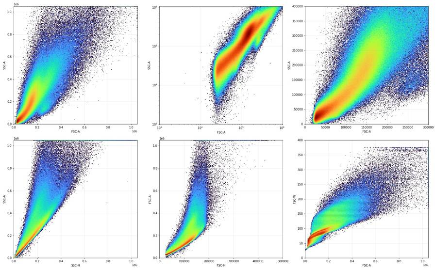
28
tool call · Bash
cd /task; cat > work/plot2.py <<'EOF'
import numpy as np, matplotlib; matplotlib.use('Agg'); import matplotlib.pyplot as plt
from matplotlib.colors import LogNorm
names=['Time', 'FSC-A', 'SSC-A', 'BL1-A', 'RL3-A', 'VL1-A', 'FSC-H', 'SSC-H', 'BL1-H', 'RL3-H', 'VL1-H', 'FSC-W', 'SSC-W', 'BL1-W', 'RL3-W', 'VL1-W']
ix={n:i for i,n in enumerate(names)}
pool=np.load('work/pool20.npy')
fig,ax=plt.subplots(2,3,figsize=(21,13))
X=pool[:,ix['FSC-A']];Y=pool[:,ix['SSC-A']]
ax[0,0].hist2d(X,Y,bins=[np.linspace(0,6e5,300),np.linspace(0,8e5,300)],cmap='turbo',cmin=1);ax[0,0].set_title('linear density FSC-A vs SSC-A')
ax[0,1].hist2d(X,Y,bins=[np.linspace(0,6e5,300),np.linspace(0,8e5,300)],cmap='turbo',norm=LogNorm());ax[0,1].set_title('log density')
ax[0,2].hist(X,bins=np.linspace(0,6e5,400));ax[0,2].set_title('FSC-A')
ax[1,0].hist(Y,bins=np.linspace(0,8e5,400));ax[1,0].set_title('SSC-A')
ax[1,1].hist(np.log10(np.clip(X,1,None)),bins=300);ax[1,1].set_title('log10 FSC-A')
ax[1,2].hist(np.log10(np.clip(Y,1,None)),bins=300);ax[1,2].set_title('log10 SSC-A')
for a in ax.flat:a.grid(alpha=.3)
plt.tight_layout();plt.savefig('work/scatter_pool2.png',dpi=70)
EOF
python3 work/plot2.py29
tool call · Read
{
"file_path": "/task/work/scatter_pool2.png"
}30
tool output
(Bash completed with no output)
31
tool output
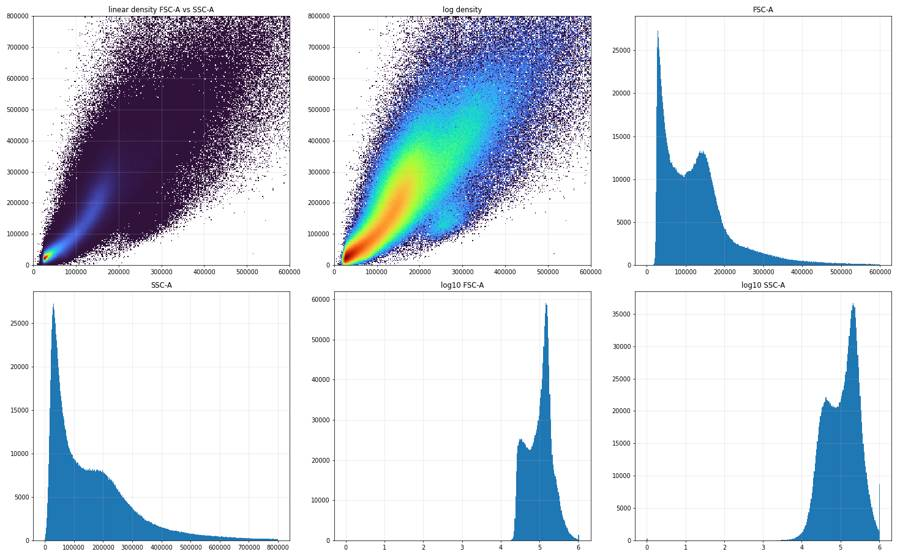
33
tool call · Bash
cd /task; cat > work/plot3.py <<'EOF'
import numpy as np, matplotlib; matplotlib.use('Agg'); import matplotlib.pyplot as plt
from matplotlib.colors import LogNorm
from scipy.stats import binned_statistic_2d
names=['Time', 'FSC-A', 'SSC-A', 'BL1-A', 'RL3-A', 'VL1-A', 'FSC-H', 'SSC-H', 'BL1-H', 'RL3-H', 'VL1-H', 'FSC-W', 'SSC-W', 'BL1-W', 'RL3-W', 'VL1-W']
ix={n:i for i,n in enumerate(names)}
pool=np.load('work/pool20.npy')
def al(x): return np.arcsinh(x/150)/np.log(10) # asinh pseudo-log
fig,ax=plt.subplots(3,3,figsize=(21,19))
F=pool[:,ix['FSC-A']];S=pool[:,ix['SSC-A']];G=pool[:,ix['BL1-A']];R=pool[:,ix['RL3-A']];V=pool[:,ix['VL1-A']]
ax[0,0].hist(al(R),bins=400);ax[0,0].set_title('RL3-A asinh(x/150)/ln10, all events')
ax[0,1].hist(al(G),bins=400);ax[0,1].set_yscale('log');ax[0,1].set_title('BL1-A, all')
ax[0,2].hist(al(V),bins=400);ax[0,2].set_title('VL1-A, all')
ax[1,0].hist2d(al(R),S,bins=[np.linspace(-1,4.5,300),np.linspace(0,1.05e6,300)],norm=LogNorm(),cmap='turbo');ax[1,0].set_title('RL3 vs SSC-A all')
ax[1,1].hist2d(al(G),S,bins=[np.linspace(-1,4.5,300),np.linspace(0,1.05e6,300)],norm=LogNorm(),cmap='turbo');ax[1,1].set_title('BL1 vs SSC-A all')
ax[1,2].hist2d(al(R),al(G),bins=[np.linspace(-1,4.5,300),np.linspace(-1,4.5,300)],norm=LogNorm(),cmap='turbo');ax[1,2].set_title('RL3 vs BL1 all')
bx=np.linspace(0,6e5,150);by=np.linspace(0,8e5,150)
st,_,_,_=binned_statistic_2d(F,S,al(R),'median',bins=[bx,by]);cnt,_,_=np.histogram2d(F,S,bins=[bx,by]);st[cnt<5]=np.nan
im=ax[2,0].pcolormesh(bx,by,st.T,cmap='turbo');plt.colorbar(im,ax=ax[2,0]);ax[2,0].set_title('median asinh RL3 on FSC/SSC')
st,_,_,_=binned_statistic_2d(F,S,(G>1500).astype(float),'mean',bins=[bx,by]);st[cnt<5]=np.nan
im=ax[2,1].pcolormesh(bx,by,st.T,cmap='turbo',vmax=0.2);plt.colorbar(im,ax=ax[2,1]);ax[2,1].set_title('frac BL1>1500')
st,_,_,_=binned_statistic_2d(F,S,al(V),'median',bins=[bx,by]);st[cnt<5]=np.nan
im=ax[2,2].pcolormesh(bx,by,st.T,cmap='turbo');plt.colorbar(im,ax=ax[2,2]);ax[2,2].set_title('median asinh VL1')
for a in ax.flat:a.grid(alpha=.3)
plt.tight_layout();plt.savefig('work/fluor_pool.png',dpi=65)
for q in [0.1,1,5,25,50,75,95,99,99.9]:
print(q, np.percentile(G,q), np.percentile(R,q), np.percentile(V,q))
EOF
python3 work/plot3.py34
tool call · Read
{
"file_path": "/task/work/fluor_pool.png"
}35
tool output
0.1 -110.0 -248.0 -454.0 1 -52.0 -103.0 -163.0 5 -16.0 32.0 46.0 25 43.0 1260.0 702.0 50 102.0 4529.0 2119.0 75 199.0 12758.0 5134.0 95 539.0 35792.0 17748.0 99 1079.0 63387.14000000013 56346.0 99.9 4230.0 116718.07000000076 143393.9220000035
36
tool output
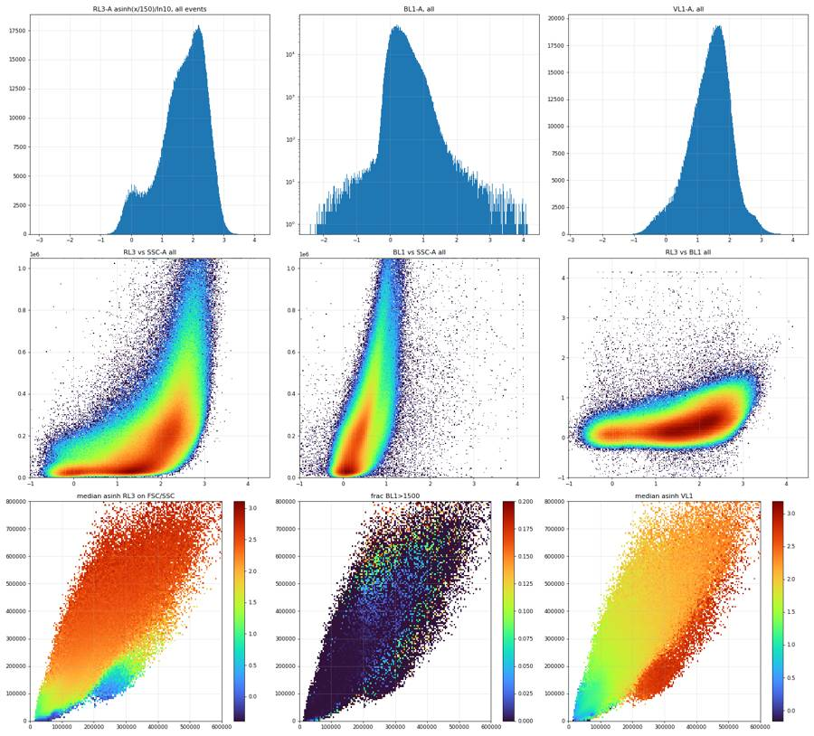
38
thinking
Scatter and fluorescence overviews are done: the Zombie-negative NCAM-high cells form a distinct high-FSC, lower-SSC lobe, while most events are Zombie-bright. Next I'm locating the live/dead valley and the GFP-negative edge in each well before setting the gates.
39
tool call · Bash
cd /task; cat > work/plot4.py <<'EOF'
import numpy as np, matplotlib; matplotlib.use('Agg'); import matplotlib.pyplot as plt
from matplotlib.colors import LogNorm
names=['Time', 'FSC-A', 'SSC-A', 'BL1-A', 'RL3-A', 'VL1-A', 'FSC-H', 'SSC-H', 'BL1-H', 'RL3-H', 'VL1-H', 'FSC-W', 'SSC-W', 'BL1-W', 'RL3-W', 'VL1-W']
ix={n:i for i,n in enumerate(names)}
pool=np.load('work/pool20.npy')
def al(x): return np.arcsinh(x/150)/np.log(10)
F=pool[:,ix['FSC-A']];S=pool[:,ix['SSC-A']];G=pool[:,ix['BL1-A']];R=pool[:,ix['RL3-A']];V=pool[:,ix['VL1-A']];SH=pool[:,ix['SSC-H']]
fig,ax=plt.subplots(3,3,figsize=(21,19))
lo=R<700
ax[0,0].hist2d(F[lo],S[lo],bins=[np.linspace(0,7e5,250),np.linspace(0,8e5,250)],norm=LogNorm(),cmap='turbo');ax[0,0].set_title('FSC vs SSC, RL3<700')
ax[0,1].hist2d(F[~lo],S[~lo],bins=[np.linspace(0,7e5,250),np.linspace(0,8e5,250)],norm=LogNorm(),cmap='turbo');ax[0,1].set_title('FSC vs SSC, RL3>=700')
gp=G>2000
ax[0,2].scatter(F[gp],S[gp],s=2,c=al(R[gp]),cmap='turbo');ax[0,2].set_xlim(0,7e5);ax[0,2].set_ylim(0,8e5);ax[0,2].set_title('BL1>2000 events colored by RL3')
big=(F>80000)&(S>40000)&(F<1e6)&(S<1e6)
ax[1,0].hist2d(al(R[big]),S[big],bins=[np.linspace(-1,4.5,300),np.linspace(0,1.05e6,300)],norm=LogNorm(),cmap='turbo');ax[1,0].set_title('RL3 vs SSC-A, FSC>80k')
ax[1,1].hist2d(al(R[big]),F[big],bins=[np.linspace(-1,4.5,300),np.linspace(0,1.05e6,300)],norm=LogNorm(),cmap='turbo');ax[1,1].set_title('RL3 vs FSC-A, FSC>80k')
ax[1,2].hist(al(R[big]),bins=300);ax[1,2].set_title('RL3 FSC>80k');ax[1,2].set_yscale('log')
ax[2,0].hist2d(al(R[big]),al(V[big]),bins=[np.linspace(-1,4.5,300),np.linspace(-1,4.5,300)],norm=LogNorm(),cmap='turbo');ax[2,0].set_title('RL3 vs VL1, FSC>80k')
ax[2,1].hist2d(al(R[big]),al(G[big]),bins=[np.linspace(-1,4.5,300),np.linspace(-1,4.5,300)],norm=LogNorm(),cmap='turbo');ax[2,1].set_title('RL3 vs BL1, FSC>80k')
ax[2,2].hist2d(al(V[big]),al(G[big]),bins=[np.linspace(-1,4.5,300),np.linspace(-1,4.5,300)],norm=LogNorm(),cmap='turbo');ax[2,2].set_title('VL1 vs BL1, FSC>80k')
for a in ax.flat:a.grid(alpha=.3)
plt.tight_layout();plt.savefig('work/fluor_pool2.png',dpi=65)
EOF
python3 work/plot4.py40
tool call · Read
{
"file_path": "/task/work/fluor_pool2.png"
}41
tool output
(Bash completed with no output)
42
tool output
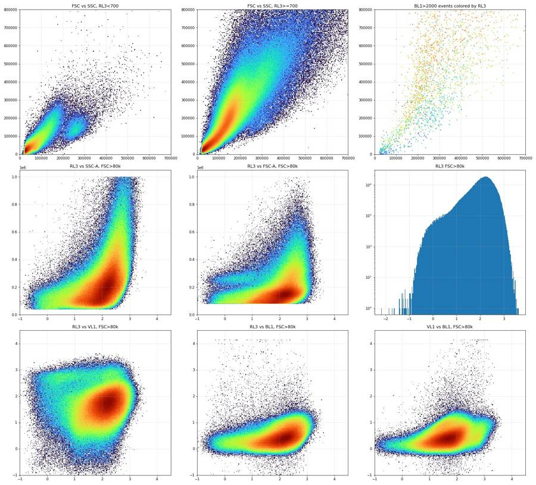
44
tool call · Bash
cd /task; cat > work/plot5.py <<'EOF'
import numpy as np, matplotlib; matplotlib.use('Agg'); import matplotlib.pyplot as plt
from matplotlib.colors import LogNorm
names=['Time', 'FSC-A', 'SSC-A', 'BL1-A', 'RL3-A', 'VL1-A', 'FSC-H', 'SSC-H', 'BL1-H', 'RL3-H', 'VL1-H', 'FSC-W', 'SSC-W', 'BL1-W', 'RL3-W', 'VL1-W']
ix={n:i for i,n in enumerate(names)}
pool=np.load('work/pool20.npy')
def al(x): return np.arcsinh(x/150)/np.log(10)
F=pool[:,ix['FSC-A']];S=pool[:,ix['SSC-A']];G=pool[:,ix['BL1-A']];R=pool[:,ix['RL3-A']];V=pool[:,ix['VL1-A']];SH=pool[:,ix['SSC-H']];SW=pool[:,ix['SSC-W']]
big=(F>70000)&(S>40000)&(F<1e6)&(S<1e6)
fig,ax=plt.subplots(2,3,figsize=(21,13))
ax[0,0].hist2d(SH[big],S[big],bins=[np.linspace(0,1.05e6,300),np.linspace(0,1.05e6,300)],norm=LogNorm(),cmap='turbo');ax[0,0].set_title('SSC-H vs SSC-A (scatter-gated)')
ax[0,0].plot([0,1e6],[0,1e6],'k--',lw=.5)
ax[0,1].hist2d(SH[big],S[big],bins=[np.linspace(0,5e5,300),np.linspace(0,6e5,300)],cmap='turbo',cmin=1);ax[0,1].set_title('linear density zoom')
ax[0,1].plot([0,5e5],[0,5e5],'w--',lw=.5)
r=S[big]/np.clip(SH[big],1,None)
ax[0,2].hist2d(SH[big],r,bins=[np.linspace(0,1.05e6,300),np.linspace(0.6,3,300)],norm=LogNorm(),cmap='turbo');ax[0,2].set_title('SSC-A/SSC-H vs SSC-H')
ax[1,0].hist(r,bins=np.linspace(0.6,3,400));ax[1,0].set_yscale('log');ax[1,0].set_title('ratio A/H')
ax[1,1].hist2d(S[big],SW[big],bins=[np.linspace(0,1.05e6,300),np.linspace(0,400,300)],norm=LogNorm(),cmap='turbo');ax[1,1].set_title('SSC-A vs SSC-W')
live=big&(R<700)
ax[1,2].hist2d(SH[live],S[live],bins=[np.linspace(0,5e5,300),np.linspace(0,6e5,300)],norm=LogNorm(),cmap='turbo');ax[1,2].set_title('SSC-H vs SSC-A, RL3<700')
ax[1,2].plot([0,5e5],[0,5e5],'k--',lw=.5)
for a in ax.flat:a.grid(alpha=.3)
plt.tight_layout();plt.savefig('work/singlets_pool.png',dpi=65)
for lo,hi in [(4e4,8e4),(8e4,1.2e5),(1.2e5,2e5),(2e5,3e5),(3e5,4e5),(4e5,6e5),(6e5,9e5)]:
m=big&(SH>=lo)&(SH<hi); rr=S[m]/SH[m]
print(lo,hi,m.sum(),np.round(np.percentile(rr,[1,5,25,50,75,90,95,99]),3))
EOF
python3 work/plot5.py45
tool call · Read
{
"file_path": "/task/work/singlets_pool.png"
}46
tool output
40000.0 80000.0 164402 [0.984 1.024 1.077 1.14 1.305 1.68 1.944 2.402] 80000.0 120000.0 229821 [1.029 1.061 1.115 1.175 1.313 1.647 1.973 2.574] 120000.0 200000.0 442627 [1.076 1.113 1.174 1.233 1.387 1.928 2.296 3.115] 200000.0 300000.0 233937 [1.123 1.164 1.234 1.314 1.614 2.247 2.601 3.44 ] 300000.0 400000.0 38469 [1.153 1.209 1.314 1.442 1.788 2.243 2.491 2.877] 400000.0 600000.0 10872 [1.181 1.251 1.383 1.509 1.7 1.931 2.067 2.282] 600000.0 900000.0 403 [1.202 1.247 1.353 1.429 1.502 1.559 1.579 1.617]
47
tool output
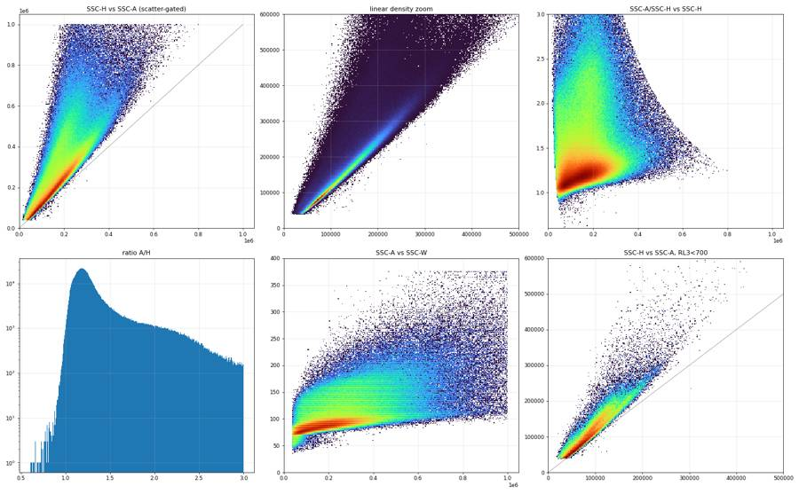
49
tool call · Bash
cd /task; cat > work/plot6.py <<'EOF'
import numpy as np, matplotlib; matplotlib.use('Agg'); import matplotlib.pyplot as plt
from matplotlib.colors import LogNorm
names=['Time', 'FSC-A', 'SSC-A', 'BL1-A', 'RL3-A', 'VL1-A', 'FSC-H', 'SSC-H', 'BL1-H', 'RL3-H', 'VL1-H', 'FSC-W', 'SSC-W', 'BL1-W', 'RL3-W', 'VL1-W']
ix={n:i for i,n in enumerate(names)}
pool=np.load('work/pool20.npy')
F=pool[:,ix['FSC-A']];S=pool[:,ix['SSC-A']];R=pool[:,ix['RL3-A']]
fig,ax=plt.subplots(2,3,figsize=(21,13))
bx=np.linspace(0,4.5e5,226);by=np.linspace(0,4.5e5,226)
H,_,_=np.histogram2d(F,S,bins=[bx,by])
from scipy.ndimage import gaussian_filter
Hs=gaussian_filter(H,1.5)
ax[0,0].pcolormesh(bx,by,H.T,cmap='turbo',norm=LogNorm(vmin=1));ax[0,0].set_title('all, log density')
cs=ax[0,1].contour(bx[:-1]+1000,by[:-1]+1000,Hs.T,levels=np.percentile(Hs[Hs>0],[30,40,50,60,70,80,85,90,93,95,97,98,99,99.5]),cmap='turbo');ax[0,1].set_title('contours all')
lo=R<700
H2,_,_=np.histogram2d(F[lo],S[lo],bins=[bx,by]);H2s=gaussian_filter(H2,1.5)
ax[0,2].pcolormesh(bx,by,H2.T,cmap='turbo',norm=LogNorm(vmin=1));ax[0,2].set_title('RL3<700')
ax[1,0].contour(bx[:-1]+1000,by[:-1]+1000,H2s.T,levels=np.percentile(H2s[H2s>0],[50,60,70,80,85,90,93,95,97,98,99,99.5]),cmap='turbo');ax[1,0].set_title('contours RL3<700')
mid=(R>=700)
H3,_,_=np.histogram2d(F[mid],S[mid],bins=[bx,by])
ax[1,1].pcolormesh(bx,by,(H2/np.clip(H,1,None)).T,cmap='turbo',vmin=0,vmax=1);ax[1,1].set_title('fraction RL3<700')
ax[1,2].pcolormesh(bx,by,H.T,cmap='turbo');ax[1,2].set_title('all, linear density')
for a in ax.flat:
a.grid(alpha=.4);a.set_xticks(np.arange(0,4.6e5,5e4));a.set_yticks(np.arange(0,4.6e5,5e4));a.tick_params(labelsize=7)
plt.tight_layout();plt.savefig('work/cells_zoom.png',dpi=65)
EOF
python3 work/plot6.py50
tool call · Read
{
"file_path": "/task/work/cells_zoom.png"
}51
tool output
(Bash completed with no output)
52
tool output
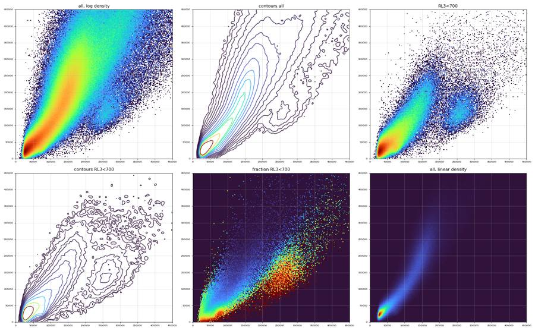
54
tool call · Bash
cd /task; cat > work/valley.py <<'EOF'
import numpy as np, pandas as pd
from scipy.ndimage import gaussian_filter1d
lay = pd.read_csv('/task/inputs/plate_layout.csv')
names=['Time', 'FSC-A', 'SSC-A', 'BL1-A', 'RL3-A', 'VL1-A', 'FSC-H', 'SSC-H', 'BL1-H', 'RL3-H', 'VL1-H', 'FSC-W', 'SSC-W', 'BL1-W', 'RL3-W', 'VL1-W']
ix={n:i for i,n in enumerate(names)}
out=[]
for w in lay.well:
e=np.load(f'work/npy/{w}.npy',mmap_mode='r'); F=np.array(e[:,1]); S=np.array(e[:,2])
res=[w]
for X,rng in [(F,(20000,250000)),(S,(5000,350000))]:
h,ed=np.histogram(X,bins=np.arange(rng[0],rng[1],2000)); hs=gaussian_filter1d(h.astype(float),3)
c=ed[:-1]+1000
# debris peak: max below 70k ; cell peak: max above 100k ; valley: min between
ip=np.argmax(np.where(c<70000,hs,0)); ic=np.argmax(np.where(c>100000,hs,0)); iv=ip+np.argmin(hs[ip:ic+1])
res+= [c[ip],c[iv],c[ic],round(hs[iv]/hs[ic],2)]
# log-space
lf=np.log10(np.clip(F,1,None)); h,ed=np.histogram(lf,bins=np.arange(4.3,5.6,0.01)); hs=gaussian_filter1d(h.astype(float),3); c=ed[:-1]+.005
ip=np.argmax(np.where(c<4.8,hs,0)); ic=np.argmax(np.where(c>4.9,hs,0)); iv=ip+np.argmin(hs[ip:ic+1])
res+=[round(10**c[iv]),round(hs[iv]/hs[ic],2)]
out.append(res)
df=pd.DataFrame(out,columns=['well','F_deb','F_val','F_cell','F_vr','S_deb','S_val','S_cell','S_vr','logF_val','logF_vr'])
pd.set_option('display.width',250);print(df.to_string()); print(df.describe().round(0).to_string())
EOF
python3 work/valley.py55
tool output
well F_deb F_val F_cell F_vr S_deb S_val S_cell S_vr logF_val logF_vr
0 A1 33000 77000 139000 0.75 32000 102000 102000 1.00 51880 0.34
1 A2 33000 79000 143000 0.69 30000 102000 102000 1.00 54325 0.33
2 A3 33000 77000 141000 0.73 32000 102000 102000 1.00 51880 0.33
3 A4 33000 85000 143000 0.66 30000 126000 186000 0.93 62373 0.33
4 A5 33000 81000 143000 0.69 32000 130000 180000 0.94 53088 0.33
5 A6 33000 83000 143000 0.63 32000 120000 188000 0.91 50699 0.30
6 A7 33000 99000 143000 0.79 32000 102000 102000 1.00 62373 0.40
7 A8 35000 89000 143000 0.73 32000 102000 102000 1.00 62373 0.35
8 A9 33000 107000 143000 0.88 30000 102000 102000 1.00 51880 0.42
9 A10 33000 99000 141000 0.82 32000 102000 102000 1.00 62373 0.41
10 A11 33000 87000 143000 0.84 32000 102000 102000 1.00 55590 0.40
11 A12 33000 85000 143000 0.78 32000 102000 102000 1.00 58210 0.39
12 B1 33000 107000 139000 0.87 30000 102000 102000 1.00 51880 0.47
13 B2 33000 101000 141000 0.80 30000 102000 102000 1.00 53088 0.45
14 B3 33000 97000 141000 0.78 30000 102000 102000 1.00 55590 0.43
15 B4 33000 99000 143000 0.77 30000 102000 102000 1.00 56885 0.44
16 B5 33000 97000 143000 0.80 30000 102000 102000 1.00 54325 0.41
17 B6 33000 103000 139000 0.92 32000 102000 102000 1.00 55590 0.46
18 B7 33000 105000 137000 0.93 34000 102000 102000 1.00 50699 0.44
19 B8 33000 97000 145000 0.81 30000 102000 102000 1.00 55590 0.41
20 B9 33000 93000 145000 0.84 32000 102000 102000 1.00 54325 0.39
21 B10 33000 89000 143000 0.83 32000 102000 102000 1.00 56885 0.41
22 B11 33000 91000 143000 0.78 32000 102000 102000 1.00 58210 0.40
23 B12 33000 89000 143000 0.73 32000 102000 102000 1.00 59566 0.39
24 C1 33000 97000 143000 0.78 32000 102000 102000 1.00 62373 0.43
25 C2 33000 97000 141000 0.80 32000 102000 102000 1.00 58210 0.44
26 C3 33000 99000 143000 0.80 30000 102000 102000 1.00 54325 0.46
27 C4 33000 91000 143000 0.81 32000 102000 102000 1.00 60954 0.42
28 C5 33000 89000 141000 0.76 32000 102000 102000 1.00 62373 0.40
29 C6 33000 93000 143000 0.80 34000 102000 102000 1.00 59566 0.43
30 C7 33000 103000 141000 0.88 32000 102000 102000 1.00 55590 0.51
31 C8 33000 99000 141000 0.84 32000 102000 102000 1.00 58210 0.47
32 C9 33000 97000 141000 0.90 32000 102000 102000 1.00 54325 0.44
33 C10 33000 83000 141000 0.84 34000 102000 102000 1.00 55590 0.41
34 C11 33000 85000 143000 0.82 34000 102000 102000 1.00 55590 0.40
35 C12 33000 79000 141000 0.84 32000 102000 102000 1.00 56885 0.41
36 D1 33000 103000 139000 0.90 32000 102000 102000 1.00 62373 0.48
37 D2 33000 99000 141000 0.81 32000 102000 102000 1.00 53088 0.41
38 D3 33000 107000 139000 0.92 32000 102000 102000 1.00 62373 0.48
39 D4 33000 95000 141000 0.87 32000 102000 102000 1.00 51880 0.41
40 D5 33000 91000 143000 0.75 32000 102000 102000 1.00 58210 0.39
41 D6 33000 93000 143000 0.76 32000 102000 102000 1.00 55590 0.40
F_deb F_val F_cell F_vr S_deb S_val S_cell S_vr logF_val logF_vr
count 42.0 42.0 42.0 42.0 42.0 42.0 42.0 42.0 42.0 42.0
mean 33048.0 93238.0 141857.0 1.0 31714.0 103667.0 107905.0 1.0 56600.0 0.0
std 309.0 8499.0 1719.0 0.0 1132.0 6183.0 21568.0 0.0 3724.0 0.0
min 33000.0 77000.0 137000.0 1.0 30000.0 102000.0 102000.0 1.0 50699.0 0.0
25% 33000.0 87500.0 141000.0 1.0 32000.0 102000.0 102000.0 1.0 54325.0 0.0
50% 33000.0 94000.0 143000.0 1.0 32000.0 102000.0 102000.0 1.0 55590.0 0.0
75% 33000.0 99000.0 143000.0 1.0 32000.0 102000.0 102000.0 1.0 59227.0 0.0
max 35000.0 107000.0 145000.0 1.0 34000.0 130000.0 188000.0 1.0 62373.0 1.057
agent
Status: scatter is consistent across wells and I've settled where the Cells polygon goes; now fitting the singlet diagonal, then reading the Zombie valley and GFP-negative edge well by well.
58
tool call · Bash
cd /task; cat > work/sing.py <<'EOF'
import numpy as np
from scipy.ndimage import gaussian_filter1d
from matplotlib.path import Path
names=['Time', 'FSC-A', 'SSC-A', 'BL1-A', 'RL3-A', 'VL1-A', 'FSC-H', 'SSC-H', 'BL1-H', 'RL3-H', 'VL1-H', 'FSC-W', 'SSC-W', 'BL1-W', 'RL3-W', 'VL1-W']
ix={n:i for i,n in enumerate(names)}
pool=np.load('work/pool20.npy')
F=pool[:,1];S=pool[:,2];SH=pool[:,7];R=pool[:,4]
cells=[(55e3,100e3),(60e3,180e3),(110e3,420e3),(220e3,800e3),(330e3,1040e3),(1040e3,1040e3),(1040e3,600e3),(600e3,250e3),(350e3,80e3),(200e3,45e3),(110e3,30e3)]
m=Path(cells).contains_points(np.c_[F,S])
print('cells frac',m.mean())
np.set_printoptions(linewidth=200,suppress=True)
for lo,hi in [(3e4,5e4),(5e4,7.5e4),(7.5e4,1e5),(1e5,1.5e5),(1.5e5,2e5),(2e5,2.5e5),(2.5e5,3e5),(3e5,3.5e5),(3.5e5,4e5),(4e5,5e5),(5e5,6e5),(6e5,8e5)]:
for lab,mm in [('all',m),('RL3<700',m&(R<700))]:
k=mm&(SH>=lo)&(SH<hi)
if k.sum()<300: continue
r=S[k]/SH[k]
h,ed=np.histogram(r,bins=np.arange(0.8,3.0,0.01)); hs=gaussian_filter1d(h.astype(float),2); c=ed[:-1]+.005
ip=hs.argmax(); pk=hs[ip]
def cross(fr,side):
if side>0:
j=np.where(hs[ip:]<fr*pk)[0]; return c[ip+j[0]] if len(j) else np.nan
j=np.where(hs[:ip]<fr*pk)[0]; return c[j[-1]] if len(j) else np.nan
print(f'{lo:8.0f}-{hi:8.0f} {lab:8s} n={k.sum():7d} mode={c[ip]:.3f} lo10%={cross(.1,-1):.3f} lo1%={cross(.01,-1):.3f} up50%={cross(.5,1):.3f} up25%={cross(.25,1):.3f} up15%={cross(.15,1):.3f} up10%={cross(.1,1):.3f} frac>up15={np.mean(r>cross(.15,1)):.3f}')
EOF
python3 work/sing.py59
tool output
cells frac 0.6423437008147871 30000- 50000 all n= 12375 mode=1.745 lo10%=0.995 lo1%=0.935 up50%=2.155 up25%=2.285 up15%=2.445 up10%=2.505 frac>up15=0.038 30000- 50000 RL3<700 n= 3469 mode=1.225 lo10%=0.995 lo1%=0.945 up50%=1.505 up25%=1.975 up15%=2.175 up10%=2.235 frac>up15=0.047 50000- 75000 all n= 85443 mode=1.095 lo10%=0.995 lo1%=0.945 up50%=1.195 up25%=1.315 up15%=1.415 up10%=1.555 frac>up15=0.229 50000- 75000 RL3<700 n= 15425 mode=1.105 lo10%=0.995 lo1%=0.935 up50%=1.295 up25%=1.415 up15%=1.495 up10%=1.575 frac>up15=0.120 75000- 100000 all n= 151007 mode=1.105 lo10%=0.995 lo1%=0.955 up50%=1.205 up25%=1.285 up15%=1.365 up10%=1.425 frac>up15=0.182 75000- 100000 RL3<700 n= 20908 mode=1.105 lo10%=0.995 lo1%=0.955 up50%=1.315 up25%=1.425 up15%=1.495 up10%=1.565 frac>up15=0.084 100000- 150000 all n= 284545 mode=1.155 lo10%=1.035 lo1%=0.985 up50%=1.255 up25%=1.325 up15%=1.395 up10%=1.475 frac>up15=0.211 100000- 150000 RL3<700 n= 22240 mode=1.145 lo10%=1.025 lo1%=0.975 up50%=1.445 up25%=1.535 up15%=1.595 up10%=1.665 frac>up15=0.075 150000- 200000 all n= 273389 mode=1.195 lo10%=1.075 lo1%=1.035 up50%=1.295 up25%=1.345 up15%=1.405 up10%=1.465 frac>up15=0.254 150000- 200000 RL3<700 n= 6316 mode=1.205 lo10%=1.075 lo1%=1.025 up50%=1.305 up25%=1.425 up15%=1.495 up10%=1.565 frac>up15=0.144 200000- 250000 all n= 164869 mode=1.235 lo10%=1.105 lo1%=1.055 up50%=1.335 up25%=1.405 up15%=1.465 up10%=1.555 frac>up15=0.295 200000- 250000 RL3<700 n= 1557 mode=1.245 lo10%=1.105 lo1%=1.045 up50%=1.315 up25%=1.415 up15%=1.495 up10%=1.605 frac>up15=0.185 250000- 300000 all n= 69040 mode=1.265 lo10%=1.125 lo1%=1.075 up50%=1.385 up25%=1.475 up15%=1.585 up10%=1.775 frac>up15=0.302 250000- 300000 RL3<700 n= 320 mode=1.245 lo10%=1.085 lo1%=1.055 up50%=1.475 up25%=1.505 up15%=1.785 up10%=1.805 frac>up15=0.087 300000- 350000 all n= 26864 mode=1.315 lo10%=1.135 lo1%=1.075 up50%=1.455 up25%=1.595 up15%=1.835 up10%=2.175 frac>up15=0.238 350000- 400000 all n= 11483 mode=1.345 lo10%=1.155 lo1%=1.105 up50%=1.545 up25%=1.755 up15%=2.165 up10%=2.325 frac>up15=0.116 400000- 500000 all n= 8412 mode=1.415 lo10%=1.185 lo1%=1.125 up50%=1.635 up25%=1.955 up15%=2.145 up10%=2.275 frac>up15=0.060 500000- 600000 all n= 1704 mode=1.505 lo10%=1.235 lo1%=1.135 up50%=1.785 up25%=1.885 up15%=1.965 up10%=1.995 frac>up15=0.019
61
tool call · Bash
cd /task; cat > work/sing2.py <<'EOF'
import numpy as np, matplotlib; matplotlib.use('Agg'); import matplotlib.pyplot as plt
from matplotlib.colors import LogNorm
pool=np.load('work/pool20.npy')
F=pool[:,1];S=pool[:,2];SH=pool[:,7];R=pool[:,4];FH=pool[:,6];FW=pool[:,11];SW=pool[:,12]
lobe=(F>200e3)&(F<360e3)&(S>70e3)&(S<230e3)&(S<0.75*F)
fig,ax=plt.subplots(2,3,figsize=(21,13))
for j,(lab,m) in enumerate([('lobe RL3<700',lobe&(R<700)),('lobe RL3>=700',lobe&(R>=700)),('non-lobe FSC 100-200k, RL3>3000',(F>100e3)&(F<200e3)&(S>100e3)&(S<300e3)&(R>3000))]):
ax[0,j].hist2d(SH[m],S[m],bins=[np.linspace(0,3.5e5,200),np.linspace(0,4.5e5,200)],norm=LogNorm(),cmap='turbo');ax[0,j].set_title(f'{lab} n={m.sum()}')
for k in [1.0,1.2,1.45,1.6]: ax[0,j].plot([0,3.5e5],[0,3.5e5*k],'k--',lw=.5)
r=S[m]/SH[m]
ax[1,j].hist(r,bins=np.arange(0.9,3,0.01));ax[1,j].set_title('A/H ratio');ax[1,j].set_yscale('log')
print(lab,m.sum(),np.round(np.percentile(r,[1,5,25,50,75,90,95,99]),3), 'frac<1.45',np.mean(r<1.45),'frac<1.6',np.mean(r<1.6))
for a in ax.flat:a.grid(alpha=.3)
plt.tight_layout();plt.savefig('work/singlets_lobe.png',dpi=65)
EOF
python3 work/sing2.py62
tool call · Read
{
"file_path": "/task/work/singlets_lobe.png"
}63
tool output
lobe RL3<700 8808 [1.171 1.22 1.296 1.361 1.452 1.576 1.685 2.035] frac<1.45 0.7463669391462306 frac<1.6 0.9137148047229791 lobe RL3>=700 4910 [1.25 1.33 1.477 1.65 1.905 2.192 2.382 2.843] frac<1.45 0.2120162932790224 frac<1.6 0.4336048879837067 non-lobe FSC 100-200k, RL3>3000 467974 [1.082 1.112 1.166 1.214 1.279 1.397 1.556 2.025] frac<1.45 0.9234786547970614 frac<1.6 0.9570232534286093
64
tool output
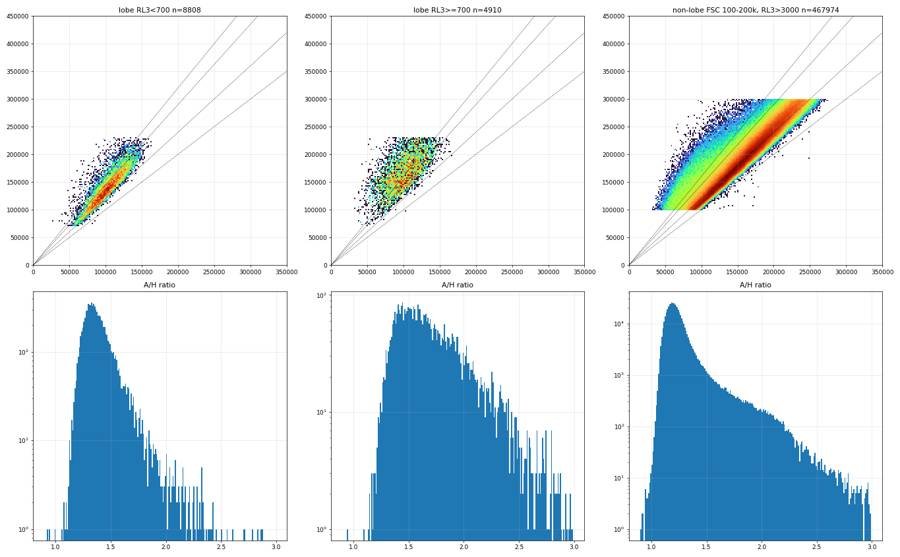
66
tool call · Bash
cd /task; cat > work/gatesdef.py <<'EOF'
import numpy as np
from matplotlib.path import Path
CELLS=[(55e3,100e3),(60e3,180e3),(110e3,420e3),(220e3,800e3),(330e3,1040e3),(1040e3,1040e3),(1040e3,600e3),(600e3,250e3),(350e3,80e3),(200e3,45e3),(110e3,30e3)]
SING=[(15e3,13.5e3),(1000e3,900e3),(1000e3,1040e3),(560e3,1040e3),(420e3,750e3),(300e3,495e3),(15e3,24.75e3)]
def cells(e): return Path(CELLS).contains_points(np.c_[e[:,1],e[:,2]])
def sing(e): return Path(SING).contains_points(np.c_[e[:,7],e[:,2]])
def al(x,c=150): return np.arcsinh(np.asarray(x)/c)/np.log(10)
def ial(y,c=150): return c*np.sinh(np.asarray(y)*np.log(10))
EOF
cat > work/rl3grid.py <<'EOF'
import sys; sys.path.insert(0,'/task/work')
import numpy as np, pandas as pd, matplotlib; matplotlib.use('Agg'); import matplotlib.pyplot as plt
from matplotlib.colors import LogNorm
from gatesdef import *
lay = pd.read_csv('/task/inputs/plate_layout.csv')
fig,ax=plt.subplots(6,7,figsize=(28,22)); fig2,ax2=plt.subplots(6,7,figsize=(28,22))
bins=np.linspace(-1,3.8,241)
rows=[]
ticks=[-100,0,100,300,1000,3000,10000,30000,100000]
for a,a2,w in zip(ax.flat,ax2.flat,lay.well):
e=np.load(f'work/npy/{w}.npy'); c=cells(e); s=c&sing(e)
r=al(e[s,4]);
h,_=np.histogram(r,bins); a.step(bins[:-1],h,where='post',lw=.8); a.set_yscale('log'); a.set_title(f'{w} n={s.sum()}',fontsize=9)
lobe=s&(e[:,1]>200e3)&(e[:,2]<0.75*e[:,1])
h2,_=np.histogram(al(e[lobe,4]),bins); a.step(bins[:-1],h2,where='post',lw=.8,color='r')
a.set_xticks(al(ticks)); a.set_xticklabels([str(t) for t in ticks],fontsize=5,rotation=90); a.grid(alpha=.3)
a2.hist2d(r,e[s,2],bins=[np.linspace(-1,3.8,200),np.linspace(0,1.05e6,200)],norm=LogNorm(),cmap='turbo'); a2.set_title(w,fontsize=9)
a2.set_xticks(al(ticks)); a2.set_xticklabels([str(t) for t in ticks],fontsize=5,rotation=90); a2.grid(alpha=.3)
rows.append(dict(well=w,n=len(e),cells=c.sum(),sing=s.sum(),lobe=lobe.sum(),**{f'lt{t}':(e[s,4]<t).sum() for t in [300,500,700,1000,1500,2000,3000]}))
fig.tight_layout();fig.savefig('work/rl3_hist_grid.png',dpi=55)
fig2.tight_layout();fig2.savefig('work/rl3_ssc_grid.png',dpi=55)
df=pd.DataFrame(rows);df.to_csv('work/prelim.csv',index=False)
pd.set_option('display.width',250);print(df.to_string())
EOF
python3 work/rl3grid.py67
tool call · Read
{
"file_path": "/task/work/rl3_hist_grid.png"
}68
tool call · Read
{
"file_path": "/task/work/rl3_ssc_grid.png"
}69
tool output
well n cells sing lobe lt300 lt500 lt700 lt1000 lt1500 lt2000 lt3000 0 A1 978726 686826 497826 4980 32999 45327 57018 73554 96766 116799 152243 1 A2 935707 634668 520328 5762 23165 29950 35609 44639 62416 81143 119713 2 A3 925910 634772 527444 4335 24482 33866 44335 60313 85557 108640 151330 3 A4 892332 618000 510597 4861 21497 28808 35534 45912 62818 79570 111151 4 A5 986514 673868 550879 4453 23824 31847 40066 53908 79277 104881 154211 5 A6 755396 522036 447570 3633 16375 22002 27277 35701 50023 64377 93194 6 A7 848859 559327 460531 5455 21663 28418 34198 42215 53108 62128 78573 7 A8 710140 482755 411190 5408 18946 26362 32849 41654 53740 64300 82547 8 A9 958681 618910 489008 5250 28963 40159 50384 63707 82007 97605 124148 9 A10 870505 579431 473815 7173 23836 32356 39938 50762 67055 81919 109261 10 A11 844586 546746 461591 4979 25033 36414 47881 63395 85360 104725 138149 11 A12 947510 620799 511749 5060 23612 37043 50096 67841 93830 117562 163877 12 B1 733754 442649 362143 9187 27023 35761 43386 53100 65475 76323 94941 13 B2 728886 439592 360194 8804 25365 33063 39789 48536 60634 71639 91912 14 B3 667298 407050 347073 6620 16426 21801 26334 32610 42024 50156 64782 15 B4 598212 361148 315367 6089 18706 25696 31257 38143 47679 56469 73261 16 B5 837561 530339 444687 7497 28039 40341 50692 63517 82006 98249 128073 17 B6 877336 549685 456148 7802 31043 47194 61155 78518 102348 121837 157487 18 B7 954909 614177 502121 5415 14235 19445 25419 36124 52702 66331 89606 19 B8 918778 586712 484791 5737 14295 20892 28182 38964 53985 66990 90109 20 B9 862070 563356 469340 6289 15345 22034 29431 41312 58297 71585 93972 21 B10 1083648 700942 567394 4756 16357 24233 32814 46112 66357 84700 117785 22 B11 988574 635206 526749 4503 15521 23491 32336 45331 66564 85929 122579 23 B12 904103 575456 481892 4082 13742 19500 25428 34900 50718 66198 96309 24 C1 624718 377121 336271 3219 6965 9608 11946 16256 23890 30780 43325 25 C2 695572 419392 366401 4662 10242 14217 17920 23903 33907 42828 58680 26 C3 656321 389485 333744 5785 13648 18450 22775 29060 38309 46213 60334 27 C4 679504 421559 366969 4403 10177 14361 18356 25092 36376 46215 64158 28 C5 689593 428079 375733 3878 9100 13035 16879 22976 33463 43381 62149 29 C6 891011 554367 467168 3741 10923 15839 21400 31075 47842 65018 99882 30 C7 649735 376050 329076 5126 10244 14004 17284 22933 32361 40448 53801 31 C8 639518 382948 337210 5133 11276 15900 19816 25534 34771 42720 56304 32 C9 801299 506328 426720 6074 15248 21896 29181 41472 60578 76722 103217 33 C10 927162 599721 496434 5867 15961 23518 31673 45117 67195 87407 123418 34 C11 868685 559795 469523 4901 14418 20310 25959 35235 52411 70327 104739 35 C12 578214 366488 326162 2836 8998 12134 14795 19728 31733 46791 79643 36 D1 800840 499066 426023 4803 13252 19086 25599 35836 50897 64043 86599 37 D2 894591 571851 481292 6040 14896 22388 30337 41740 57900 71188 94961 38 D3 915097 578575 473439 6165 19481 29860 41034 57071 79886 98586 128303 39 D4 925805 602106 498283 5794 16250 23836 32301 45765 66070 83264 112701 40 D5 153195 92837 90239 394 1531 2360 3024 3798 4713 5561 7572 41 D6 726651 457982 402482 2578 6248 9125 12259 17334 25930 34138 50114
70
tool output
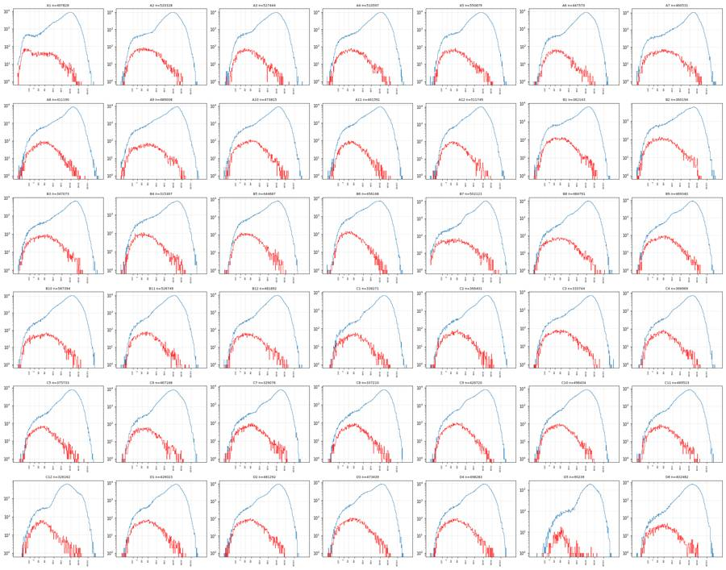
71
tool output
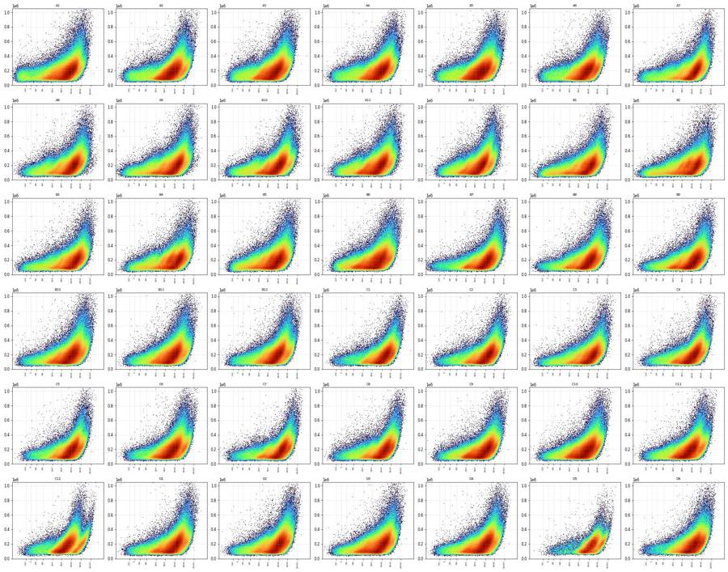
73
tool call · Bash
cd /task; cat > work/timegrid.py <<'EOF'
import sys; sys.path.insert(0,'/task/work')
import numpy as np, pandas as pd, matplotlib; matplotlib.use('Agg'); import matplotlib.pyplot as plt
from matplotlib.colors import LogNorm
from gatesdef import *
lay = pd.read_csv('/task/inputs/plate_layout.csv')
for ch,ci,tr in [('RL3-A',4,True),('FSC-A',1,False),('VL1-A',5,True),('BL1-A',3,True)]:
fig,ax=plt.subplots(6,7,figsize=(28,22))
for a,w in zip(ax.flat,lay.well):
e=np.load(f'work/npy/{w}.npy',mmap_mode='r'); t=np.array(e[:,0]); y=np.array(e[:,ci])
if tr: y=al(y); yb=np.linspace(-1,4.2,150)
else: yb=np.linspace(0,6e5,150)
a.hist2d(t,y,bins=[np.linspace(0,98,197),yb],norm=LogNorm(),cmap='turbo'); a.set_title(w,fontsize=9)
fig.tight_layout();fig.savefig(f'work/time_{ch}.png',dpi=50);plt.close(fig)
EOF
python3 work/timegrid.py74
tool call · Read
{
"file_path": "/task/work/time_RL3-A.png"
}75
tool call · Read
{
"file_path": "/task/work/time_FSC-A.png"
}76
tool output
(Bash completed with no output)
77
tool output
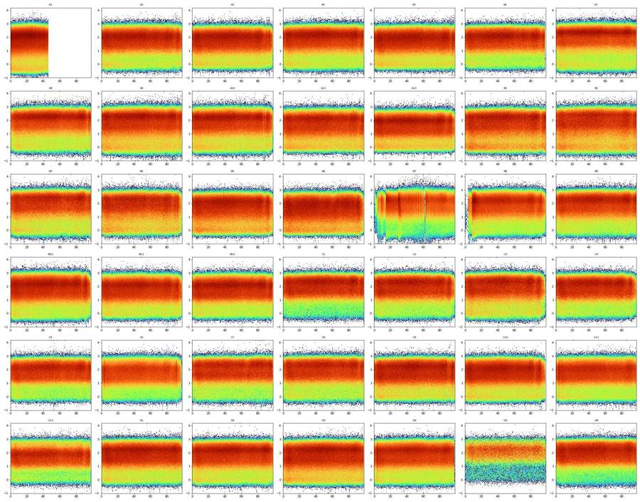
78
tool output
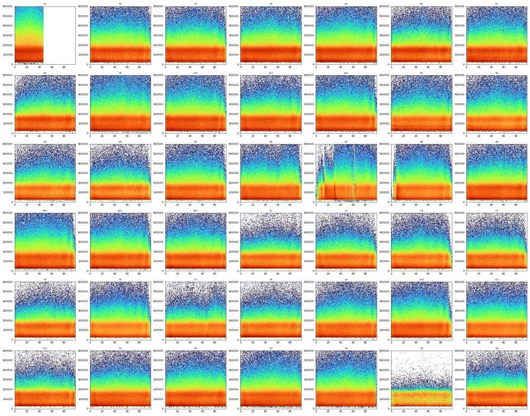
80
thinking
Time plots confirm B7 and B8 as flow problems and D5 as a sparse outlier, with a rate droop in about 14 wells. I'm checking the remaining channels and the odd wells (C12, C6/C11/D4, A1) before finalising gates.
81
tool call · Read
{
"file_path": "/task/work/time_BL1-A.png"
}82
tool call · Read
{
"file_path": "/task/work/time_VL1-A.png"
}83
tool output
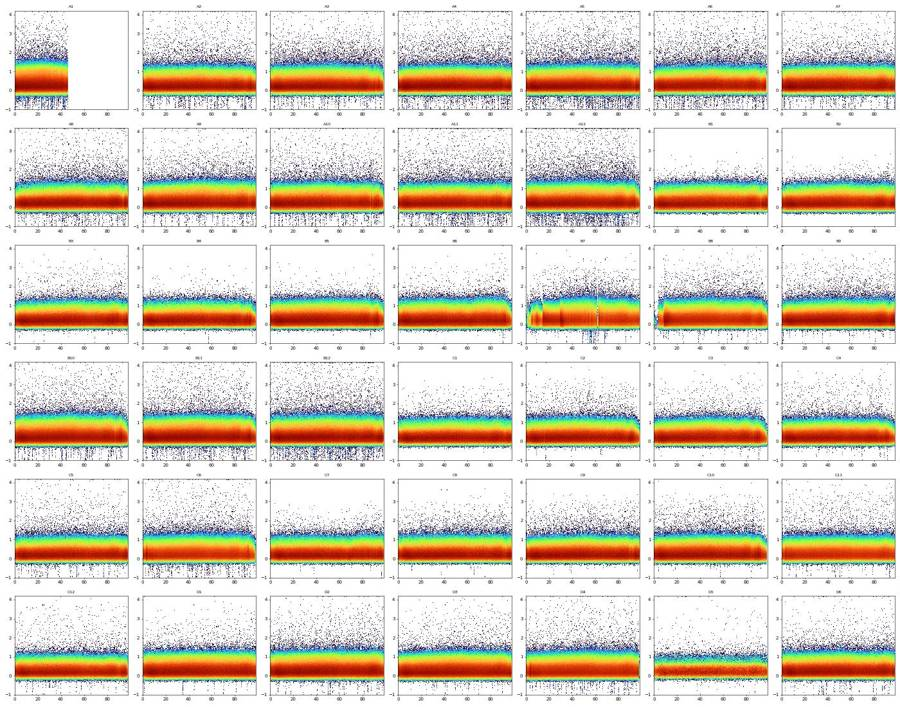
84
tool output
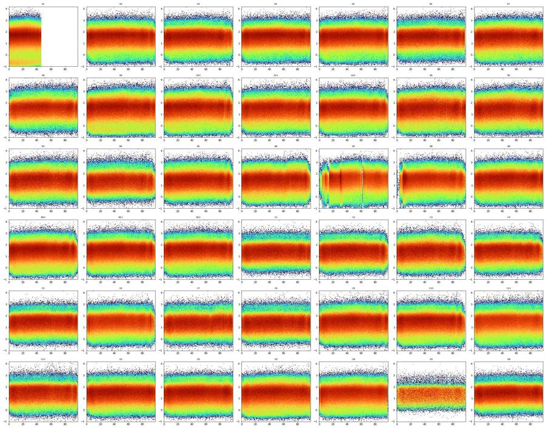
86
tool call · Bash
cd /task; cat > work/tail.py <<'EOF'
import sys; sys.path.insert(0,'/task/work')
import numpy as np, pandas as pd
from gatesdef import *
lay = pd.read_csv('/task/inputs/plate_layout.csv')
rows=[]
for w in lay.well:
e=np.load(f'work/npy/{w}.npy'); t=e[:,0]; dur=t.max()
c=cells(e); s=c&sing(e); lv=s&(e[:,4]<800);
h,_=np.histogram(t,np.arange(0,dur+1e-6,1.0)); med=np.median(h)
body=(t>10)&(t<dur-10); tail=t>=dur-5; head=t<5
d=dict(well=w,n=len(e),tail_n=tail.sum(),tail_pct=100*tail.mean(),tail_rate_pct=100*(tail.sum()/5)/med, last1_pct=100*((t>=dur-1).sum())/med)
for lab,m in [('body',body),('tail',tail),('head',head)]:
d[f'fsc_{lab}']=np.median(e[m,1]); d[f'cells%_{lab}']=100*c[m].mean(); d[f'live%sing_{lab}']=100*lv[m].sum()/max(s[m].sum(),1); d[f'rl3_{lab}']=np.median(e[m,4]); d[f'sat%_{lab}']=100*(e[m,2]>=1048575).mean()
# whole vs trimmed
keep=(t>8)&(t<dur-6)
d['live%_all']=100*lv.sum()/s.sum(); d['live%_trim']=100*lv[keep].sum()/s[keep].sum()
d['cells%_all']=100*c.mean(); d['cells%_trim']=100*c[keep].mean()
rows.append(d)
df=pd.DataFrame(rows); df.to_csv('work/tail.csv',index=False)
pd.set_option('display.width',320);pd.set_option('display.max_columns',40);print(df.round(1).to_string())
EOF
python3 work/tail.py87
tool output
well n tail_n tail_pct tail_rate_pct last1_pct fsc_body cells%_body live%sing_body rl3_body sat%_body fsc_tail cells%_tail live%sing_tail rl3_tail sat%_tail fsc_head cells%_head live%sing_head rl3_head sat%_head live%_all live%_trim cells%_all cells%_trim 0 A1 978726 95894 9.8 88.8 96.4 131700.0 71.0 12.5 4462.0 1.4 126045.5 69.0 12.5 3968.0 0.9 121316.5 67.8 12.8 3719.5 0.6 12.6 12.6 70.2 70.8 1 A2 935707 41263 4.4 84.8 73.6 122785.0 68.4 7.3 4634.0 0.5 114553.0 65.3 7.7 3938.0 0.2 117895.0 66.4 8.0 4022.0 0.2 7.4 7.3 67.8 68.2 2 A3 925910 37711 4.1 77.5 61.7 121080.0 69.0 9.3 3957.0 0.5 114783.0 66.9 9.7 3502.0 0.3 116717.0 67.1 10.0 3523.0 0.2 9.4 9.4 68.6 68.8 3 A4 892332 41434 4.6 89.3 92.6 125922.0 69.7 7.6 5291.0 0.6 119398.5 66.5 8.0 4538.5 0.5 118145.0 66.9 8.5 4396.0 0.2 7.6 7.5 69.3 69.6 4 A5 986514 45366 4.6 88.4 96.1 122744.0 68.6 8.0 3910.0 0.7 118326.0 66.6 8.8 3519.5 0.6 117829.0 67.2 8.7 3379.0 0.3 8.1 8.0 68.3 68.6 5 A6 755396 34431 4.6 87.0 92.4 124516.0 69.6 6.7 5043.0 0.4 117286.0 66.3 7.3 4323.0 0.3 119252.0 68.0 7.2 4467.0 0.1 6.7 6.6 69.1 69.5 6 A7 848859 38657 4.6 87.4 95.8 118897.0 66.4 8.0 7028.0 0.6 110435.0 63.0 8.4 5866.0 0.5 110545.5 63.4 8.5 5872.5 0.2 8.0 8.0 65.9 66.3 7 A8 710140 32423 4.6 87.9 88.2 121766.0 68.6 8.7 6217.0 0.5 116173.0 65.9 8.8 5480.0 0.5 107528.0 63.3 9.4 4774.0 0.1 8.7 8.7 68.0 68.5 8 A9 958681 44090 4.6 88.5 92.6 117128.0 65.0 11.1 4585.0 1.2 111177.0 62.7 11.2 4058.0 1.1 107801.0 62.5 12.9 3629.0 0.3 11.3 11.1 64.6 64.9 9 A10 870505 33988 3.9 74.5 57.0 118911.0 67.1 9.0 4993.0 0.7 106785.0 62.5 9.4 3899.0 0.3 114954.0 66.1 10.6 4265.0 0.3 9.2 9.1 66.6 66.8 10 A11 844586 40787 4.8 93.2 102.8 112618.0 65.1 11.4 3346.0 0.4 105453.0 62.2 12.2 2869.0 0.4 107288.5 63.3 12.2 2923.5 0.1 11.5 11.4 64.7 65.1 11 A12 947510 37069 3.9 75.2 52.5 117009.0 66.0 10.9 3005.0 0.6 104903.0 61.4 11.0 2435.0 0.3 115437.0 65.6 11.7 2757.0 0.3 11.0 10.9 65.5 65.7 12 B1 733754 37288 5.1 97.5 104.2 107115.0 61.0 12.8 3527.0 0.5 98912.0 58.3 13.5 3023.0 0.3 97938.0 57.7 14.6 2865.0 0.1 13.0 12.8 60.3 60.8 13 B2 728886 36287 5.0 96.4 96.9 109819.0 60.9 11.7 3951.0 0.6 101322.0 58.1 11.9 3546.0 0.5 97996.5 57.4 13.7 3211.0 0.1 11.9 11.8 60.3 60.8 14 B3 667298 31581 4.7 90.8 98.5 108106.5 61.5 8.1 5589.0 0.4 100686.0 58.6 8.2 4873.0 0.3 97878.0 58.3 9.3 4660.5 0.1 8.2 8.1 61.0 61.4 15 B4 598212 20703 3.5 65.8 46.7 107486.5 61.0 10.5 4195.0 0.3 88115.0 54.5 11.6 3184.0 0.1 102177.0 59.5 12.0 3703.0 0.1 10.7 10.6 60.4 60.8 16 B5 837561 30597 3.7 69.8 53.5 113801.0 64.0 12.2 3367.0 0.4 97083.0 57.9 13.1 2562.0 0.2 108196.0 62.3 13.7 2927.5 0.2 12.4 12.3 63.3 63.7 17 B6 877336 30273 3.5 66.7 45.0 106893.0 62.9 14.6 2735.0 0.5 97856.0 59.3 14.8 2287.0 0.2 102567.0 61.5 16.2 2339.0 0.2 14.8 14.6 62.7 62.9 18 B7 954909 44566 4.7 87.4 91.6 109380.0 64.7 5.7 6123.0 0.6 108699.0 64.1 5.4 5610.0 0.3 90767.0 56.9 6.4 4492.5 0.4 5.7 5.7 64.3 64.6 19 B8 918778 34982 3.8 70.1 53.9 114673.0 64.7 6.5 5581.0 0.4 97109.5 58.2 6.8 4040.5 0.1 81190.0 52.3 6.5 … [6,426 more characters not shown]
89
tool call · Bash
cd /task; cat > work/tail2.py <<'EOF'
import sys; sys.path.insert(0,'/task/work')
import numpy as np, pandas as pd
from gatesdef import *
np.set_printoptions(linewidth=250)
for w in ['C3','C4','B6','C2','B4','C6','B10','C10','A12','A1']:
e=np.load(f'work/npy/{w}.npy'); t=e[:,0]; dur=t.max()
h,_=np.histogram(t,np.arange(0,dur+1e-6,1.0)); med=np.median(h)
ed=np.arange(dur-8,dur+1e-6,0.5); hh,_=np.histogram(t,ed)
print(w,'dur',round(float(dur),2),'tail rate % of median per 0.5s:',np.round(100*hh*2/med).astype(int))
fs=[int(np.median(e[(t>=a)&(t<b),1])) for a,b in zip(ed[:-1],ed[1:])]
print(' FSC-A median:',fs, 'body',int(np.median(e[(t>10)&(t<dur-10),1])))
c=cells(e)
print(' Cells %:',[int(round(100*c[(t>=a)&(t<b)].mean())) for a,b in zip(ed[:-1],ed[1:])])
print()
for w,prev in [('C6','C5'),('C11','C10'),('D4','D3')]:
e=np.load(f'work/npy/{w}.npy'); t=e[:,0]; i=np.where(np.diff(t)<0)[0][0]+1
seg=e[:i]; rest=e[i:]; p=np.load(f'work/npy/{prev}.npy')
print(w,'first segment n=',i,'t range',seg[:,0].min(),seg[:,0].max(),'rate/s',i/seg[:,0].max())
hh,_=np.histogram(seg[:,0],np.arange(0,4.01,0.5)); print(' seg rate per 0.5s',hh)
hh,_=np.histogram(rest[:,0],np.arange(0,8.01,0.5)); print(' rest rate per 0.5s',hh)
for lab,x in [('seg',seg),('rest',rest),('prev well',p)]:
c=cells(x); s=c&sing(x)
print(f' {lab:10s} FSC med {np.median(x[:,1]):8.0f} SSC {np.median(x[:,2]):8.0f} RL3 {np.median(x[:,4]):6.0f} VL1 {np.median(x[:,5]):6.0f} BL1 {np.median(x[:,3]):5.0f} cells% {100*c.mean():.1f} RL3<800 of sing {100*(x[s,4]<800).mean():.1f} BL1>1500 per 1e4: {1e4*(x[:,3]>1500).mean():.1f}')
EOF
python3 work/tail2.py90
tool output
C3 dur 97.72 tail rate % of median per 0.5s: [ 94 98 102 90 80 75 71 69 64 60 57 54 45 39 36 23] FSC-A median: [103572, 103963, 100589, 99478, 95757, 93269, 94813, 92673, 85754, 79019, 81336, 76803, 67559, 61002, 56889, 45375] body 104840 Cells %: [60, 60, 60, 58, 56, 56, 55, 55, 53, 51, 51, 50, 44, 39, 36, 22] C4 dur 97.8 tail rate % of median per 0.5s: [ 97 102 96 96 83 78 72 75 67 63 59 58 55 46 42 37] FSC-A median: [102362, 108141, 106611, 105803, 101709, 100854, 97138, 99141, 93286, 93659, 89450, 85052, 81243, 80276, 67654, 63918] body 107309 Cells %: [61, 63, 63, 62, 61, 61, 60, 59, 57, 57, 55, 53, 52, 52, 46, 42] B6 dur 97.84 tail rate % of median per 0.5s: [101 106 98 108 112 94 91 83 77 75 65 65 64 57 46 44] FSC-A median: [114890, 113744, 115150, 109285, 111746, 108371, 109687, 105172, 108322, 102909, 97235, 95914, 91262, 87263, 86872, 79443] body 106893 Cells %: [65, 65, 66, 65, 65, 63, 64, 62, 63, 60, 59, 58, 57, 55, 55, 51] C2 dur 97.79 tail rate % of median per 0.5s: [ 97 109 104 92 112 92 82 78 72 71 65 58 61 56 48 43] FSC-A median: [91632, 97259, 98284, 97582, 100993, 102802, 94257, 92806, 90461, 90292, 86938, 79048, 75927, 76074, 71645, 65196] body 104331 Cells %: [57, 59, 59, 58, 59, 60, 58, 57, 56, 56, 54, 51, 49, 50, 48, 44] B4 dur 97.86 tail rate % of median per 0.5s: [ 92 92 99 91 83 120 88 86 77 72 67 62 55 59 48 45] FSC-A median: [98452, 102277, 105119, 101028, 101824, 104505, 101693, 96275, 94658, 95564, 91237, 83045, 83678, 74839, 79423, 70852] body 107486 Cells %: [58, 60, 60, 60, 61, 60, 59, 59, 57, 56, 55, 52, 52, 48, 50, 46] C6 dur 97.57 tail rate % of median per 0.5s: [ 91 98 94 119 113 90 80 79 72 70 66 65 69 56 48 46] FSC-A median: [100337, 102041, 107934, 112063, 109501, 104536, 97860, 98837, 95898, 97607, 91891, 85035, 87530, 79022, 76338, 63441] body 108788 Cells %: [60, 61, 63, 64, 64, 62, 59, 59, 59, 59, 57, 55, 55, 52, 50, 44] B10 dur 97.78 tail rate % of median per 0.5s: [ 84 105 96 106 106 103 86 82 80 75 69 63 62 60 51 48] FSC-A median: [107529, 112445, 114164, 116998, 116252, 115216, 109246, 106361, 103729, 101748, 101302, 93078, 90509, 88329, 82331, 71597] body 115772 Cells %: [62, 64, 65, 66, 65, 64, 64, 62, 61, 61, 61, 57, 56, 56, 53, 47] C10 dur 97.48 tail rate % of median per 0.5s: [ 97 117 93 108 86 92 70 65 65 69 60 66 52 48 56 48] FSC-A median: [110764, 115939, 112464, 113614, 108183, 109976, 101090, 99510, 98251, 96710, 85071, 86719, 88029, 74781, 66099, 59323] body 112666 Cells %: [65, 66, 66, 66, 65, 65, 61, 61, 60, 60, 55, 55, 55, 49, 45, 39] A12 dur 97.9 tail rate % of median per 0.5s: [ 91 93 84 90 98 76 123 91 97 76 71 67 62 61 58 47] FSC-A median: [111299, 113281, 114244, 113525, 118868, 119142, 118760, 113299, 109264, 106835, 107194, 103342, 98324, 89962, 90769, 82654] body 117009 Cells %: [65, 65, 65, 65, 68, 65, 66, 65, 64, 63, 62, 60, 59, 57, 57, 53] A1 dur 46.25 tail rate % of median per 0.5s: [90 90 91 92 93 93 95 94 83 84 81 85 88 83 96 96] FSC-A median: [129063, 128598, 129777, 128729, 129189, 129835, 130464, 130212, 127126, 126117, 123907, 120615, 117146, 120757, 128866, 131129] body 131700 Cells %: [70, 70, 70, 70, 70, 71, 70, 71, 70, 69, 68, 67, 66, 68, 69, 71] C6 first segment n= 4443 t range 3.35 3.894 rate/s 1140.986116863063 seg rate per 0.5s [ 0 0 0 0 0 0 1148 3295] rest rate per 0.5s [4445 4486 4116 4183 4526 4476 4722 4853 4943 4972 4965 5045 4938 5054 4976 5050] seg FSC med 98137 SSC 99470 RL3 3301 VL1 1506 BL1 87 cells% 59.4 RL3<800 of sing 6.5 BL1>1500 per 1e4: 33.8 rest FSC med 106892 SSC 120059 RL3 4049 VL1 2012 BL1 96 cells% 62.2 RL3<800 of sing 5.2 BL1>1500 per 1e4: 36.4 prev well FSC med 106495 SSC 116620 RL3 4968 VL1 1929 BL1 90 cells% 62.1 RL3<800 of sing 5.0 BL1>1500 per 1e4: 32.2 C11 first segment n= 4103 t range 3.345 3.896 rate/s 1053.1314415854886 seg rate per 0.5s [ 0 0 0 0 0 0 1121 2982] rest rate per 0.5s [3909 4096 3834 3871 4017 4253 4381 4502 4700 4708 4744 4839 4875 4994 4955 5021] seg FSC med 101429 SSC 102487 RL3 3421 VL1 1664 BL1 85 cells% 60.4 RL3<800 of sing 6.9 BL1>1500 per 1e4: 17.1 rest FSC med 111020 SSC 124974 RL3 4294 VL1 2186 BL1 95 cells% 64.5 RL3<800 of sing 6.2 BL1>1500 per 1e4: 25.9 prev well FSC med 110996 SSC 126567 RL3 4096 VL1 2086 BL1 95 cells% 64.7 RL3<800 of sing 7.3 BL1>1500 per 1e4: 32.7 D4 first segment n= 4084 t range 3.292 3.836 rate/s 1064.6506873180085 seg rate per 0.5s [ 0 0 0 0 0 0 1563 2521] rest rate per 0.5s [4010 4278 3910 3890 4113 4386 4597 4716 4871 4966 5058 5205 5187 5226 5197 5128] seg FSC med 102307 SSC 102952 RL3 3501 VL1 1398 BL1 89 cells% 61.8 RL3<800 of sing 9.4 BL1>1500 per 1e4: 17.1 rest FSC med 111983 SSC 126322 RL3 4574 VL1 1945 BL1 101 cells% 65.1 RL3<800 of sing 7.4 BL1>1500 per 1e4: 36.2 prev well FSC med 108014 SSC 117114 RL3 3746 VL1 1907 BL1 99 cells% 63.2 RL3<800 of sing 9.8 BL1>1500 per 1e4: 31.5
92
thinking
QC screening is essentially settled, with B7, B8 and D5 as the real problems. Next I'm pinning down the Zombie NIR and GFP cut-offs before building the FlowKit strategy.
93
tool call · Bash
cd /task; cat > work/rl3valley.py <<'EOF'
import sys; sys.path.insert(0,'/task/work')
import numpy as np, pandas as pd, matplotlib; matplotlib.use('Agg'); import matplotlib.pyplot as plt
from scipy.ndimage import gaussian_filter1d
from gatesdef import *
lay = pd.read_csv('/task/inputs/plate_layout.csv')
bins=np.linspace(-1,3.8,161); c=(bins[:-1]+bins[1:])/2
ticks=[-100,0,100,300,1000,3000,10000,30000,100000]
fig,ax=plt.subplots(6,7,figsize=(28,22))
tot=np.zeros((4,len(c))); rows=[]
for a,w in zip(ax.flat,lay.well):
e=np.load(f'work/npy/{w}.npy'); s=cells(e)&sing(e)
x=al(e[s,4]); S=e[s,2]; F=e[s,1]
sl=[('all',np.ones(len(x),bool)),('SSC<150k',S<150e3),('SSC 150-250k',(S>=150e3)&(S<250e3)),('FSC>200k&SSC<.75F',(F>200e3)&(S<0.75*F))]
r=[w]
for i,(lab,m) in enumerate(sl):
h,_=np.histogram(x[m],bins); tot[i]+=h
hs=gaussian_filter1d(h.astype(float),2)
a.plot(c,hs/hs.max(),lw=1,label=lab)
# valley between dim peak (max below al(600)) and bright peak
idim=np.argmax(np.where(c<al(600),hs,0)); ibr=np.argmax(np.where(c>al(2000),hs,0))
iv=idim+np.argmin(hs[idim:ibr+1]) if ibr>idim else idim
r+=[round(float(ial(c[idim]))),round(float(ial(c[iv]))),round(hs[iv]/hs[idim],2)]
rows.append(r)
a.set_title(w,fontsize=9); a.set_xticks(al(ticks)); a.set_xticklabels([str(t) for t in ticks],fontsize=6,rotation=90); a.grid(alpha=.3)
ax[0,0].legend(fontsize=6)
fig.tight_layout();fig.savefig('work/rl3_lin_grid.png',dpi=55)
cols=['well']+[f'{l}_{k}' for l in ['all','lowS','midS','lobe'] for k in ['dimpk','valley','v/d']]
df=pd.DataFrame(rows,columns=cols); pd.set_option('display.width',250); print(df.to_string())
fig,ax=plt.subplots(1,2,figsize=(18,6))
for i,lab in enumerate(['all','SSC<150k','SSC 150-250k','lobe']):
ax[0].plot(c,tot[i]/tot[i].max(),label=lab); ax[1].semilogy(c,tot[i],label=lab)
for a in ax: a.set_xticks(al(ticks+[500,700,1500,2000])); a.set_xticklabels([str(t) for t in ticks+[500,700,1500,2000]],fontsize=7,rotation=90); a.grid(alpha=.4); a.legend()
fig.tight_layout();fig.savefig('work/rl3_pooled.png',dpi=75)
EOF
python3 work/rl3valley.py94
tool call · Read
{
"file_path": "/task/work/rl3_pooled.png"
}95
tool call · Read
{
"file_path": "/task/work/rl3_lin_grid.png"
}96
tool output
well all_dimpk all_valley all_v/d lowS_dimpk lowS_valley lowS_v/d midS_dimpk midS_valley midS_v/d lobe_dimpk lobe_valley lobe_v/d 0 A1 593 593 1.0 593 593 1.00 593 593 1.00 -199 2087 0.26 1 A2 593 593 1.0 593 593 1.00 413 514 0.98 141 2087 0.26 2 A3 593 593 1.0 593 593 1.00 593 593 1.00 89 2087 0.20 3 A4 593 593 1.0 593 593 1.00 593 593 1.00 156 2087 0.23 4 A5 593 593 1.0 593 593 1.00 593 593 1.00 188 2087 0.20 5 A6 593 593 1.0 593 593 1.00 593 593 1.00 128 2087 0.15 6 A7 593 593 1.0 593 593 1.00 593 593 1.00 331 2087 0.53 7 A8 593 593 1.0 593 593 1.00 478 684 0.96 283 2087 0.28 8 A9 593 593 1.0 593 593 1.00 593 593 1.00 262 2087 0.41 9 A10 593 593 1.0 593 593 1.00 514 845 0.92 242 2087 0.28 10 A11 593 593 1.0 593 593 1.00 593 593 1.00 188 2087 0.17 11 A12 593 593 1.0 593 593 1.00 593 593 1.00 101 2087 0.13 12 B1 593 593 1.0 593 593 1.00 593 593 1.00 101 2087 0.29 13 B2 593 593 1.0 593 593 1.00 593 593 1.00 205 2087 0.36 14 B3 593 593 1.0 593 593 1.00 593 593 1.00 384 2087 0.41 15 B4 593 593 1.0 593 593 1.00 593 972 0.97 141 2087 0.24 16 B5 593 593 1.0 593 593 1.00 593 593 1.00 114 2087 0.18 17 B6 593 593 1.0 593 593 1.00 593 593 1.00 128 2087 0.15 18 B7 593 593 1.0 593 593 1.00 593 593 1.00 331 2087 0.42 19 B8 593 593 1.0 593 593 1.00 593 593 1.00 188 2087 0.37 20 B9 593 593 1.0 593 593 1.00 593 593 1.00 283 2087 0.36 21 B10 593 593 1.0 593 593 1.00 593 593 1.00 331 2087 0.37 22 B11 593 593 1.0 593 593 1.00 593 593 1.00 223 2087 0.22 23 B12 593 593 1.0 593 593 1.00 593 593 1.00 101 2087 0.23 24 C1 593 593 1.0 593 593 1.00 593 593 1.00 262 2087 0.32 25 C2 593 593 1.0 593 593 1.00 593 593 1.00 242 2087 0.29 26 C3 593 593 1.0 593 593 1.00 593 593 1.00 356 2087 0.38 27 C4 593 593 1.0 593 593 1.00 593 593 1.00 262 2087 0.24 28 C5 593 593 1.0 593 593 1.00 593 593 1.00 223 2087 0.18 29 C6 593 593 1.0 593 593 1.00 593 593 1.00 171 2087 0.21 30 C7 593 593 1.0 593 593 1.00 593 593 1.00 283 2087 0.30 31 C8 593 593 1.0 593 593 1.00 593 593 1.00 306 2087 0.23 32 C9 593 593 1.0 593 593 1.00 593 593 1.00 262 2087 0.26 33 C10 593 593 1.0 593 593 1.00 593 593 1.00 306 2087 0.25 34 C11 593 593 1.0 593 593 1.00 593 593 1.00 188 2087 0.24 35 C12 593 593 1.0 593 593 1.00 593 593 1.00 156 2087 0.11 36 D1 593 593 1.0 593 593 1.00 593 593 1.00 283 2087 0.29 37 D2 593 593 1.0 593 593 1.00 593 593 1.00 242 2087 0.27 38 D3 593 593 1.0 593 593 1.00 593 593 1.00 242 2087 0.26 39 D4 593 593 1.0 593 593 1.00 593 593 1.00 242 2087 0.27 40 D5 593 593 1.0 593 … [234 more characters not shown]
97
tool output
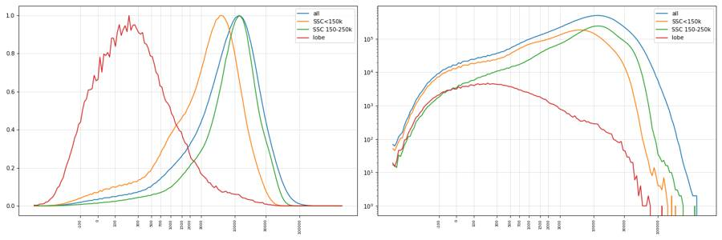
98
tool output
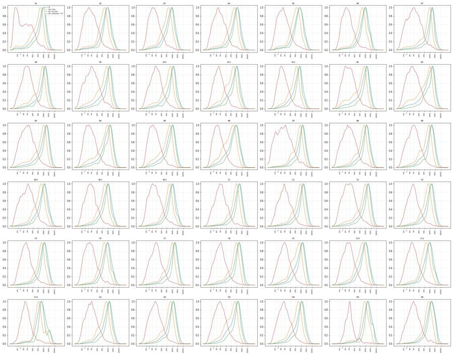
100
tool call · Bash
cd /task; cat > work/rl3knee.py <<'EOF'
import sys; sys.path.insert(0,'/task/work')
import numpy as np, pandas as pd
from scipy.ndimage import gaussian_filter1d
from gatesdef import *
import flowkit as fk
lay = pd.read_csv('/task/inputs/plate_layout.csv')
xf=fk.transforms.LogicleTransform(param_t=1048576,param_w=0.5,param_m=4.5,param_a=0)
edges_raw=np.array([-400,-300,-200,-100,0,100,200,300,400,500,600,700,800,900,1000,1200,1400,1600,1800,2000,2500,3000,4000,5000,7000,10000,15000,20000,30000])
print('logicle pos of raw:',dict(zip([0,100,300,500,700,1000,1500,2000,3000,10000],np.round(xf.apply(np.array([0,100,300,500,700,1000,1500,2000,3000,10000.])),3))))
bins=np.linspace(0.05,0.9,171); c=(bins[:-1]+bins[1:])/2
craw=xf.inverse(c)
tot=np.zeros(len(c)); totlow=np.zeros(len(c)); res=[]
for w in lay.well:
e=np.load(f'work/npy/{w}.npy'); s=cells(e)&sing(e)
y=xf.apply(e[s,4].astype(float)); h,_=np.histogram(y,bins); tot+=h
hs=gaussian_filter1d(h.astype(float),3)
# local minima between raw 0 and 5000 in logicle density
lm=[int(round(craw[i])) for i in range(1,len(c)-1) if hs[i]<hs[i-1] and hs[i]<=hs[i+1] and 0<craw[i]<5000]
# knee: max second derivative of log density between 200 and 3000
lg=np.log(hs+1); d2=np.gradient(np.gradient(lg)); m=(craw>200)&(craw<3000)
k=craw[m][np.argmax(d2[m])]
# dim plateau level & where density exceeds 1.5x and 2x the plateau level (median density for raw -50..400)
pl=np.median(hs[(craw>-50)&(craw<400)])
x15=craw[(craw>300)&(hs>1.5*pl)][0]; x2=craw[(craw>300)&(hs>2*pl)][0]
res.append((w,lm,int(k),int(pl),int(x15),int(x2)))
for r in res: print(r)
hs=gaussian_filter1d(tot,2)
print('pooled logicle density (per bin) at raw values:')
for rv in [-200,-100,0,100,200,300,400,500,600,700,800,900,1000,1200,1500,2000,3000,5000,10000]:
i=np.argmin(abs(craw-rv)); print(rv, int(hs[i]))
EOF
python3 work/rl3knee.py101
tool output
logicle pos of raw: {0: 0.111, 100: 0.139, 300: 0.191, 500: 0.233, 700: 0.267, 1000: 0.305, 1500: 0.35, 2000: 0.381, 3000: 0.424, 10000: 0.547}
('A1', [], 206, 1134, 578, 930)
('A2', [470], 522, 947, 974, 1224)
('A3', [287], 329, 1089, 638, 888)
('A4', [351], 444, 902, 848, 1169)
('A5', [351], 373, 1021, 737, 930)
('A6', [329], 266, 696, 810, 1067)
('A7', [308], 307, 827, 1281, 2123)
('A8', [351], 351, 891, 1224, 1935)
('A9', [226], 420, 1266, 1067, 1848)
('A10', [374], 396, 1062, 1020, 1538)
('A11', [266], 266, 1263, 737, 1281)
('A12', [], 266, 1281, 608, 1020)
('B1', [351], 246, 1129, 1685, 2684)
('B2', [374], 396, 1034, 1538, 2123)
('B3', [351], 307, 673, 1169, 1848)
('B4', [421], 1169, 857, 1610, 2123)
('B5', [226], 888, 1391, 1281, 1935)
('B6', [], 226, 1586, 974, 1765)
('B7', [246], 444, 572, 578, 737)
('B8', [226], 373, 683, 578, 810)
('B9', [287], 373, 741, 608, 810)
('B10', [], 351, 760, 522, 737)
('B11', [], 307, 796, 550, 773)
('B12', [308], 396, 656, 670, 930)
('C1', [397], 578, 326, 773, 974)
('C2', [351], 351, 480, 810, 1067)
('C3', [374], 420, 592, 974, 1610)
('C4', [351], 444, 498, 737, 974)
('C5', [329], 373, 458, 737, 974)
('C6', [266], 286, 527, 578, 737)
('C7', [421], 550, 469, 810, 1067)
('C8', [445], 550, 557, 974, 1403)
('C9', [329], 373, 778, 638, 848)
('C10', [287], 329, 848, 638, 848)
('C11', [351], 396, 705, 773, 974)
('C12', [470], 550, 428, 848, 974)
('D1', [266], 286, 640, 608, 810)
('D2', [226], 307, 762, 578, 888)
('D3', [188], 266, 1010, 550, 810)
('D4', [266], 373, 820, 578, 810)
('D5', [496, 738, 1068], 1169, 98, 1848, 2225)
('D6', [287], 351, 315, 608, 810)
pooled logicle density (per bin) at raw values:
-200 5425
-100 13977
0 29502
100 35763
200 34098
300 33241
400 34674
500 38274
600 43353
700 48473
800 54140
900 58232
1000 64700
1200 73997
1500 84400
2000 108038
3000 148171
5000 236852
10000 351912103
tool call · Bash
cd /task; cat > work/rl3_2d.py <<'EOF'
import sys; sys.path.insert(0,'/task/work')
import numpy as np, pandas as pd, matplotlib; matplotlib.use('Agg'); import matplotlib.pyplot as plt
from matplotlib.colors import LogNorm
from scipy.ndimage import gaussian_filter
from gatesdef import *
import flowkit as fk
xf=fk.transforms.LogicleTransform(param_t=1048576,param_w=0.5,param_m=4.5,param_a=0)
pool=np.load('work/pool20.npy')
fig,ax=plt.subplots(2,3,figsize=(24,14))
ticks=np.array([-300,-100,0,100,300,500,700,1000,1500,2000,3000,5000,10000,30000,100000.])
def draw(a,e,title,lin=False,ymax=6e5,cont=True):
s=cells(e)&sing(e); y=xf.apply(e[s,4].astype(float)); S=e[s,2]
bx=np.linspace(0.02,0.75,220); by=np.linspace(0,ymax,160)
H,_,_=np.histogram2d(y,S,bins=[bx,by])
a.pcolormesh(bx,by,H.T,cmap='turbo',norm=None if lin else LogNorm(vmin=1))
if cont:
Hs=gaussian_filter(H,2); a.contour(bx[:-1],by[:-1],Hs.T,levels=np.percentile(Hs[Hs>0],[40,50,60,70,75,80,85,90,95,98]),colors='k',linewidths=.5)
a.set_xticks(xf.apply(ticks)); a.set_xticklabels([str(int(t)) for t in ticks],fontsize=7,rotation=90); a.grid(alpha=.4); a.set_title(title)
draw(ax[0,0],pool,'pooled Singlets log density')
draw(ax[0,1],pool,'pooled Singlets linear density',lin=True)
draw(ax[0,2],pool,'pooled zoom',ymax=3e5)
for a,w in zip(ax[1],['B1','C7','A2']):
draw(a,np.load(f'work/npy/{w}.npy'),w,ymax=4e5)
fig.tight_layout();fig.savefig('work/rl3_2d.png',dpi=65)
EOF
python3 work/rl3_2d.py104
tool call · Read
{
"file_path": "/task/work/rl3_2d.png"
}105
tool output
(Bash completed with no output)
106
tool output
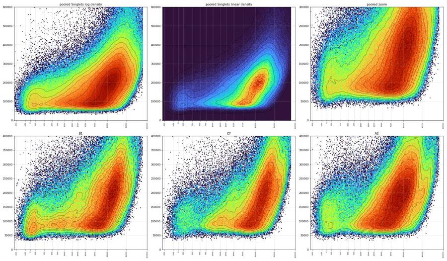
108
thinking
I've picked a zombie NIR cut-off of 500, since the valley between the populations falls between 300 and 700 on every well. Next I'll set the GFP cut-off from the lowest-GFP wells and export the gates.
109
tool call · Bash
cd /task; cat > work/gfp.py <<'EOF'
import sys; sys.path.insert(0,'/task/work')
import numpy as np, pandas as pd, matplotlib; matplotlib.use('Agg'); import matplotlib.pyplot as plt
from matplotlib.colors import LogNorm
from gatesdef import *
import flowkit as fk
lay = pd.read_csv('/task/inputs/plate_layout.csv')
xf=fk.transforms.LogicleTransform(param_t=1048576,param_w=0.5,param_m=4.5,param_a=0)
ticks=np.array([-100,0,100,300,500,700,1000,1500,2000,3000,5000,10000,30000,100000,1000000.])
fig,ax=plt.subplots(6,7,figsize=(28,22)); rows=[]
bx=np.linspace(0.05,1.0,150)
for a,w in zip(ax.flat,lay.well):
e=np.load(f'work/npy/{w}.npy'); lv=cells(e)&sing(e)&(e[:,4]<500)
g=e[lv,3].astype(float); S=e[lv,2]
a.hist2d(xf.apply(g),S,bins=[bx,np.linspace(0,6e5,120)],norm=LogNorm(),cmap='turbo'); a.set_title(f'{w} live n={lv.sum()}',fontsize=9)
a.set_xticks(xf.apply(ticks)); a.set_xticklabels([str(int(t)) for t in ticks],fontsize=5,rotation=90); a.grid(alpha=.3)
d=dict(well=w,dose=int(lay.dose_vg_per_cell[lay.well==w].iloc[0]),live=int(lv.sum()),med=np.median(g),p95=np.percentile(g,95),p99=np.percentile(g,99),p995=np.percentile(g,99.5),p999=np.percentile(g,99.9))
for t in [300,400,500,600,700,800,1000,1500,2000,3000,5000]: d[f'gt{t}']=int((g>t).sum())
rows.append(d)
fig.tight_layout();fig.savefig('work/gfp_grid.png',dpi=55)
df=pd.DataFrame(rows);df.to_csv('work/gfp.csv',index=False)
pd.set_option('display.width',300);pd.set_option('display.max_columns',40);print(df.round(0).to_string())
EOF
python3 work/gfp.py110
tool call · Read
{
"file_path": "/task/work/gfp_grid.png"
}111
tool output
well dose live med p95 p99 p995 p999 gt300 gt400 gt500 gt600 gt700 gt800 gt1000 gt1500 gt2000 gt3000 gt5000 0 A1 5000 45327 78.0 275.0 585.0 857.0 15992.0 1866 981 639 436 331 251 163 129 117 99 77 1 A2 5000 29950 92.0 281.0 704.0 3805.0 209088.0 1265 683 456 361 302 274 240 202 182 161 143 2 A3 10000 33866 88.0 315.0 858.0 3459.0 71303.0 1851 1022 709 546 428 366 291 239 213 177 139 3 A4 10000 28808 98.0 325.0 1023.0 8259.0 205960.0 1692 928 633 493 402 350 294 237 219 193 170 4 A5 50000 31847 94.0 370.0 1087.0 9145.0 288104.0 2392 1342 858 638 495 411 337 271 246 218 190 5 A6 50000 22002 105.0 401.0 1574.0 18143.0 599647.0 1876 1107 723 544 439 374 298 229 194 169 146 6 A7 5000 28418 84.0 247.0 547.0 1708.0 49097.0 826 457 322 248 225 203 177 148 137 115 90 7 A8 5000 26362 87.0 267.0 746.0 7267.0 223424.0 956 554 391 317 273 254 236 207 193 175 151 8 A9 10000 40159 80.0 239.0 447.0 618.0 25174.0 1046 516 316 211 170 149 129 114 104 95 78 9 A10 10000 32356 88.0 258.0 517.0 1382.0 90064.0 1029 499 336 254 215 193 182 157 147 134 121 10 A11 50000 36414 89.0 291.0 692.0 5225.0 297527.0 1685 887 590 444 355 308 268 227 214 202 184 11 A12 50000 37043 85.0 320.0 1355.0 16541.0 687900.0 2142 1230 875 681 565 494 437 360 328 283 241 12 B1 5000 35761 74.0 211.0 335.0 412.0 714.0 518 200 87 54 37 25 17 12 10 6 2 13 B2 5000 33063 80.0 224.0 381.0 472.0 1560.0 635 275 141 92 78 68 52 35 25 14 4 14 B3 10000 21801 87.0 265.0 889.0 3191.0 21709.0 810 454 339 280 246 232 201 164 138 118 74 15 B4 10000 25696 90.0 265.0 482.0 661.0 2645.0 911 434 240 153 117 93 73 48 34 21 10 16 B5 50000 40341 89.0 288.0 583.0 908.0 4333.0 1825 952 568 384 292 243 187 139 108 61 33 17 B6 50000 47194 79.0 265.0 558.0 836.0 4738.0 1715 935 584 416 309 248 200 141 112 78 45 18 B7 5000 19445 94.0 352.0 831.0 2137.0 21937.0 1350 734 432 300 241 202 162 122 100 82 64 19 B8 5000 20892 95.0 396.0 1514.0 6368.0 37027.0 1799 1021 640 471 363 316 259 211 183 155 121 20 B9 10000 22034 92.0 362.0 1238.0 3906.0 38593.0 1585 884 603 455 357 314 266 193 172 129 96 21 B10 10000 24233 88.0 393.0 1429.0 6949.0 78272.0 2028 1154 776 576 455 381 292 236 209 179 142 22 B11 50000 23491 99.0 501.0 1603.0 14329.0 151324.0 2932 1806 1180 843 634 509 373 250 215 186 161 23 B12 50000 19500 105.0 571.0 1807.0 8991.0 429770.0 2630 1724 1190 904 682 560 394 235 178 139 110 24 C1 5000 9608 98.0 303.0 2583.0 7526.0 26651.0 486 331 271 235 208 193 171 137 116 93 69 25 C2 5000 14217 101.0 351.0 4076.0 10442.0 33964.0 903 590 468 402 368 349 325 273 234 174 128 26 C3 10000 18450 88.0 265.0 722.0 2875.0 22767.0 674 380 265 217 190 172 150 127 113 89 70 27 C4 10000 14361 100.0 306.0 2509.0 9441.0 72015.0 745 425 321 265 246 228 207 180 154 135 103 28 C5 50000 13035 97.0 345.0 2080.0 19608.0 247262.0 887 485 307 249 211 186 166 146 131 119 106 29 C6 50000 15839 95.0 345.0 1012.0 5527.0 156165.0 1116 563 387 286 228 193 162 126 115 93 83 30 C7 5000 14004 90.0 285.0 1381.0 2650.0 9519.0 627 411 313 261 219 200 174 134 101 64 38 31 C8 5000 15900 98.0 521.0 4350.0 8717.0 25815.0 1360 1006 821 727 663 605 528 383 315 221 143 32 C9 10000 21896 85.0 316.0 2916.0 6555.0 26233.0 1199 799 638 550 490 453 399 327 280 213 144 33 C10 10000 23518 84.0 303.0 1703.0 6110.0 31956.0 1191 695 526 431 371 344 301 253 212 177 134 34 C11 50000 20310 91.0 324.0 995.0 5797.0 56279.0 1198 629 422 330 279 239 203 164 143 125 107 35 C12 50000 12134 97.0 325.0 844.0 6359.0 212327.0 741 335 217 170 141 127 109 97 84 78 68 36 D1 5000 19086 87.0 274.0 552.0 844.0 22482.0 745 365 228 164 116 99 87 71 66 55 48 37 D2 5000 22388 88.0 308.0 970.0 6711.0 73527.0 1174 673 452 344 281 249 223 195 181 156 128 38 D3 10000 29860 75.0 247.0 480.0 745.0 27385.0 892 440 271 194 162 141 127 113 104 95 79 39 D4 10000 23836 84.0 266.0 550.0 1318.0 70122.0 862 407 281 205 178 157 132 117 103 92 83 40 D5 50000 2360 93.0 295.0 811.0 19612.0 1 … [234 more characters not shown]
112
tool output
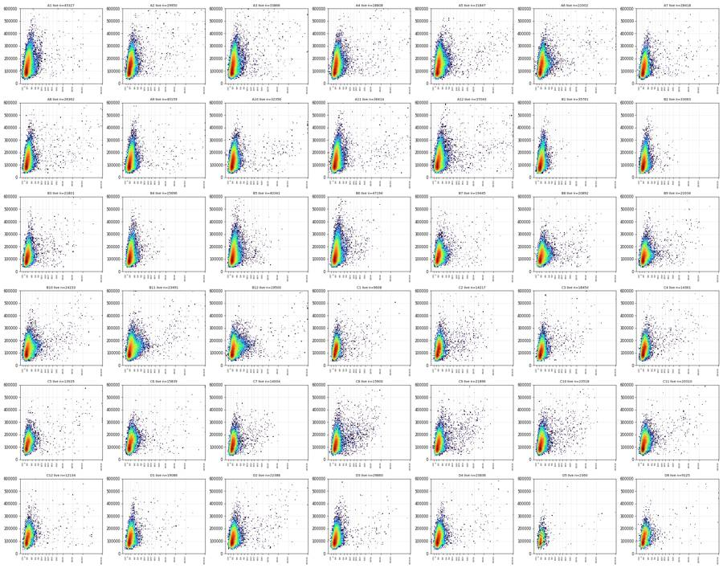
114
tool call · Bash
cd /task; cat > work/gfp2.py <<'EOF'
import sys; sys.path.insert(0,'/task/work')
import numpy as np, pandas as pd, matplotlib; matplotlib.use('Agg'); import matplotlib.pyplot as plt
from gatesdef import *
import flowkit as fk
xf=fk.transforms.LogicleTransform(param_t=1048576,param_w=0.5,param_m=4.5,param_a=0)
ticks=np.array([-100,0,100,300,500,700,1000,1500,2000,3000,5000,10000,30000,100000,1000000.])
fig,ax=plt.subplots(2,4,figsize=(26,11))
bins=np.linspace(0.05,1.0,191); edges=[0,100,200,300,400,500,600,700,800,900,1000,1250,1500,2000,3000,5000,1e4,1e5,2e6]
for a,w in zip(ax.flat,['B1','B2','B4','C7','B5','D1','A9','A12']):
e=np.load(f'work/npy/{w}.npy'); lv=cells(e)&sing(e)&(e[:,4]<500); g=e[lv,3].astype(float); S=e[lv,2]
h,_=np.histogram(xf.apply(g),bins); a.step(bins[:-1],h,where='post'); a.set_yscale('log'); a.set_title(f'{w} Live n={lv.sum()}')
a.set_xticks(xf.apply(ticks)); a.set_xticklabels([str(int(t)) for t in ticks],fontsize=7,rotation=90); a.grid(alpha=.4)
hh,_=np.histogram(g,edges); print(w,'counts in raw bins',dict(zip(edges[:-1],hh)))
for lo,hi in [(0,100e3),(100e3,200e3),(200e3,300e3),(300e3,1.1e6)]:
m=(S>=lo)&(S<hi); print(f' SSC {lo:.0f}-{hi:.0f} n={m.sum()} med={np.median(g[m]):.0f} p95={np.percentile(g[m],95):.0f} p99={np.percentile(g[m],99):.0f} p99.5={np.percentile(g[m],99.5):.0f}')
fig.tight_layout();fig.savefig('work/gfp_hist.png',dpi=60)
EOF
python3 work/gfp2.py115
tool call · Read
{
"file_path": "/task/work/gfp_hist.png"
}116
tool output
B1 counts in raw bins {0: 19422, 100: 10337, 200: 1677, 300: 319, 400: 115, 500: 33, 600: 17, 700: 11, 800: 6, 900: 3, 1000: 5, 1250: 0, 1500: 2, 2000: 4, 3000: 4, 5000: 0, 10000.0: 2, 100000.0: 0}
SSC 0-100000 n=17293 med=49 p95=155 p99=268 p99.5=330
SSC 100000-200000 n=16493 med=95 p95=222 p99=355 p99.5=442
SSC 200000-300000 n=1766 med=148 p95=294 p99=619 p99.5=1111
SSC 300000-1100000 n=209 med=207 p95=416 p99=919 p99.5=2085
B2 counts in raw bins {0: 17272, 100: 10417, 200: 1781, 300: 364, 400: 134, 500: 48, 600: 15, 700: 10, 800: 9, 900: 7, 1000: 10, 1250: 7, 1500: 10, 2000: 11, 3000: 10, 5000: 3, 10000.0: 1, 100000.0: 0}
SSC 0-100000 n=15535 med=56 p95=176 p99=307 p99.5=383
SSC 100000-200000 n=15645 med=99 p95=232 p99=394 p99.5=497
SSC 200000-300000 n=1695 med=152 p95=311 p99=668 p99.5=1475
SSC 300000-1100000 n=188 med=220 p95=491 p99=2136 p99.5=3340
B4 counts in raw bins {0: 12357, 100: 8612, 200: 1945, 300: 476, 400: 196, 500: 90, 600: 35, 700: 25, 800: 7, 900: 13, 1000: 14, 1250: 11, 1500: 14, 2000: 13, 3000: 11, 5000: 8, 10000.0: 2, 100000.0: 0}
SSC 0-100000 n=10355 med=61 p95=217 p99=367 p99.5=424
SSC 100000-200000 n=12912 med=102 p95=266 p99=499 p99.5=641
SSC 200000-300000 n=2175 med=148 p95=345 p99=972 p99.5=1469
SSC 300000-1100000 n=254 med=232 p95=1026 p99=5119 p99.5=5735
C7 counts in raw bins {0: 6600, 100: 4650, 200: 1040, 300: 217, 400: 98, 500: 53, 600: 42, 700: 20, 800: 12, 900: 14, 1000: 22, 1250: 18, 1500: 33, 2000: 37, 3000: 26, 5000: 27, 10000.0: 11, 100000.0: 0}
SSC 0-100000 n=4976 med=55 p95=199 p99=471 p99.5=668
SSC 100000-200000 n=7992 med=107 p95=274 p99=956 p99.5=2236
SSC 200000-300000 n=926 med=151 p95=1396 p99=7314 p99.5=9323
SSC 300000-1100000 n=110 med=272 p95=6797 p99=15653 p99.5=16783
B5 counts in raw bins {0: 19350, 100: 13027, 200: 3089, 300: 883, 400: 390, 500: 183, 600: 93, 700: 48, 800: 39, 900: 18, 1000: 33, 1250: 15, 1500: 31, 2000: 47, 3000: 28, 5000: 20, 10000.0: 13, 100000.0: 0}
SSC 0-100000 n=15762 med=59 p95=212 p99=385 p99.5=497
SSC 100000-200000 n=20662 med=102 p95=296 p99=565 p99.5=860
SSC 200000-300000 n=3469 med=158 p95=454 p99=1193 p99.5=2952
SSC 300000-1100000 n=448 med=227 p95=1146 p99=8747 p99.5=26411
D1 counts in raw bins {0: 9152, 100: 6103, 200: 1477, 300: 386, 400: 138, 500: 61, 600: 51, 700: 17, 800: 7, 900: 5, 1000: 8, 1250: 8, 1500: 5, 2000: 11, 3000: 7, 5000: 14, 10000.0: 32, 100000.0: 2}
SSC 0-100000 n=7567 med=56 p95=226 p99=413 p99.5=524
SSC 100000-200000 n=10366 med=106 p95=276 p99=502 p99.5=628
SSC 200000-300000 n=1037 med=148 p95=598 p99=16578 p99.5=33016
SSC 300000-1100000 n=116 med=252 p95=23579 p99=75925 p99.5=145624
A9 counts in raw bins {0: 20853, 100: 12216, 200: 2449, 300: 534, 400: 202, 500: 105, 600: 43, 700: 20, 800: 13, 900: 8, 1000: 9, 1250: 6, 1500: 10, 2000: 9, 3000: 17, 5000: 12, 10000.0: 48, 100000.0: 18}
SSC 0-100000 n=16564 med=52 p95=180 p99=325 p99.5=401
SSC 100000-200000 n=20283 med=95 p95=238 p99=451 p99.5=567
SSC 200000-300000 n=3025 med=153 p95=320 p99=1773 p99.5=24371
SSC 300000-1100000 n=287 med=246 p95=9352 p99=677215 p99.5=1048575
A12 counts in raw bins {0: 17788, 100: 10824, 200: 2817, 300: 926, 400: 360, 500: 194, 600: 118, 700: 71, 800: 41, 900: 16, 1000: 53, 1250: 24, 1500: 32, 2000: 45, 3000: 42, 5000: 38, 10000.0: 100, 100000.0: 103}
SSC 0-100000 n=13010 med=55 p95=228 p99=442 p99.5=1176
SSC 100000-200000 n=19540 med=93 p95=307 p99=668 p99.5=1616
SSC 200000-300000 n=3958 med=156 p95=628 p99=75970 p99.5=251307
SSC 300000-1100000 n=535 med=281 p95=700297 p99=1048575 p99.5=1048575117
tool output
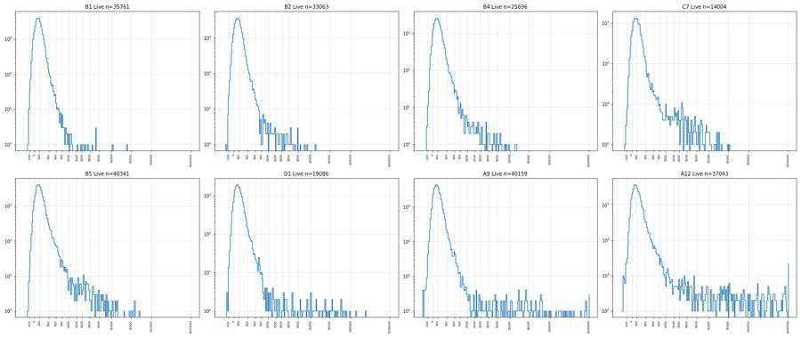
119
tool call · Bash
cd /task; cat > work/build_gates.py <<'EOF'
"""Build one FlowKit GatingStrategy for plate 230306, export GatingML, reload, gate all 42 wells, write counts.csv."""
import sys, os
import numpy as np, pandas as pd, flowkit as fk
OUT='/task/outputs'; RAW='/task/inputs/raw'
U='uncompensated'
CELLS=[(55e3,100e3),(60e3,180e3),(110e3,420e3),(220e3,800e3),(330e3,1040e3),(1040e3,1040e3),(1040e3,600e3),(600e3,250e3),(350e3,80e3),(200e3,45e3),(110e3,30e3)] # FSC-A, SSC-A
SING=[(15e3,13.5e3),(1000e3,900e3),(1000e3,1040e3),(560e3,1040e3),(420e3,750e3),(300e3,495e3),(15e3,24.75e3)] # SSC-H, SSC-A
RL3_MAX=500.0; BL1_MIN=1000.0; SSC_LO, SSC_HI = 0.0, 1048576.0
gs=fk.GatingStrategy()
gs.add_gate(fk.gates.PolygonGate('Cells',[fk.Dimension('FSC-A',compensation_ref=U),fk.Dimension('SSC-A',compensation_ref=U)],CELLS),gate_path=('root',))
gs.add_gate(fk.gates.PolygonGate('Singlets',[fk.Dimension('SSC-H',compensation_ref=U),fk.Dimension('SSC-A',compensation_ref=U)],SING),gate_path=('root','Cells'))
gs.add_gate(fk.gates.RectangleGate('Live',[fk.Dimension('RL3-A',compensation_ref=U,range_max=RL3_MAX),fk.Dimension('SSC-A',compensation_ref=U,range_min=SSC_LO,range_max=SSC_HI)]),gate_path=('root','Cells','Singlets'))
gs.add_gate(fk.gates.RectangleGate('GFP_pos',[fk.Dimension('BL1-A',compensation_ref=U,range_min=BL1_MIN),fk.Dimension('SSC-A',compensation_ref=U,range_min=SSC_LO,range_max=SSC_HI)]),gate_path=('root','Cells','Singlets','Live'))
with open(f'{OUT}/gates.xml','wb') as fh: fk.export_gatingml(gs,fh)
gs2=fk.parse_gating_xml(f'{OUT}/gates.xml')
print(gs2.get_gate_ids())
lay=pd.read_csv('/task/inputs/plate_layout.csv')
pops=[('Cells','all_events'),('Singlets','Cells'),('Live','Singlets'),('GFP_pos','Live')]
rows=[]
for f,w in zip(lay.file,lay.well):
s=fk.Sample(os.path.join(RAW,f))
res=gs2.gate_sample(s)
cnt={'all_events':s.event_count}
for p,_ in pops: cnt[p]=int(res.get_gate_count(p))
for p,par in pops:
rows.append(dict(file=f,well=w,population=p,count=cnt[p],parent_population=par,pct_of_parent=round(100*cnt[p]/cnt[par],4) if cnt[par] else 0.0))
print(w,cnt,flush=True)
df=pd.DataFrame(rows,columns=['file','well','population','count','parent_population','pct_of_parent'])
df.to_csv(f'{OUT}/counts.csv',index=False)
EOF
python3 work/build_gates.py 2>&1 | tail -50; head -c 1500 outputs/gates.xml120
tool output
[('Cells', ('root',)), ('Singlets', ('root', 'Cells')), ('Live', ('root', 'Cells', 'Singlets')), ('GFP_pos', ('root', 'Cells', 'Singlets', 'Live'))]
A1 {'all_events': 978726, 'Cells': 686826, 'Singlets': 497826, 'Live': 45327, 'GFP_pos': 163}
A2 {'all_events': 935707, 'Cells': 634670, 'Singlets': 520330, 'Live': 29951, 'GFP_pos': 240}
A3 {'all_events': 925910, 'Cells': 634772, 'Singlets': 527444, 'Live': 33866, 'GFP_pos': 291}
A4 {'all_events': 892332, 'Cells': 618000, 'Singlets': 510597, 'Live': 28808, 'GFP_pos': 294}
A5 {'all_events': 986514, 'Cells': 673868, 'Singlets': 550879, 'Live': 31847, 'GFP_pos': 338}
A6 {'all_events': 755396, 'Cells': 522036, 'Singlets': 447570, 'Live': 22002, 'GFP_pos': 298}
A7 {'all_events': 848859, 'Cells': 559327, 'Singlets': 460531, 'Live': 28418, 'GFP_pos': 177}
A8 {'all_events': 710140, 'Cells': 482756, 'Singlets': 411191, 'Live': 26363, 'GFP_pos': 237}
A9 {'all_events': 958681, 'Cells': 618910, 'Singlets': 489008, 'Live': 40159, 'GFP_pos': 129}
A10 {'all_events': 870505, 'Cells': 579431, 'Singlets': 473815, 'Live': 32356, 'GFP_pos': 182}
A11 {'all_events': 844586, 'Cells': 546746, 'Singlets': 461591, 'Live': 36414, 'GFP_pos': 269}
A12 {'all_events': 947510, 'Cells': 620799, 'Singlets': 511749, 'Live': 37043, 'GFP_pos': 437}
B1 {'all_events': 733754, 'Cells': 442649, 'Singlets': 362143, 'Live': 35761, 'GFP_pos': 17}
B2 {'all_events': 728886, 'Cells': 439592, 'Singlets': 360194, 'Live': 33063, 'GFP_pos': 52}
B3 {'all_events': 667298, 'Cells': 407050, 'Singlets': 347073, 'Live': 21801, 'GFP_pos': 202}
B4 {'all_events': 598212, 'Cells': 361148, 'Singlets': 315367, 'Live': 25696, 'GFP_pos': 73}
B5 {'all_events': 837561, 'Cells': 530339, 'Singlets': 444687, 'Live': 40341, 'GFP_pos': 187}
B6 {'all_events': 877336, 'Cells': 549686, 'Singlets': 456149, 'Live': 47194, 'GFP_pos': 200}
B7 {'all_events': 954909, 'Cells': 614177, 'Singlets': 502121, 'Live': 19445, 'GFP_pos': 162}
B8 {'all_events': 918778, 'Cells': 586712, 'Singlets': 484791, 'Live': 20892, 'GFP_pos': 259}
B9 {'all_events': 862070, 'Cells': 563356, 'Singlets': 469340, 'Live': 22034, 'GFP_pos': 266}
B10 {'all_events': 1083648, 'Cells': 700942, 'Singlets': 567394, 'Live': 24233, 'GFP_pos': 292}
B11 {'all_events': 988574, 'Cells': 635206, 'Singlets': 526749, 'Live': 23491, 'GFP_pos': 373}
B12 {'all_events': 904103, 'Cells': 575456, 'Singlets': 481892, 'Live': 19500, 'GFP_pos': 395}
C1 {'all_events': 624718, 'Cells': 377121, 'Singlets': 336271, 'Live': 9608, 'GFP_pos': 171}
C2 {'all_events': 695572, 'Cells': 419392, 'Singlets': 366401, 'Live': 14217, 'GFP_pos': 325}
C3 {'all_events': 656321, 'Cells': 389485, 'Singlets': 333744, 'Live': 18450, 'GFP_pos': 150}
C4 {'all_events': 679504, 'Cells': 421559, 'Singlets': 366969, 'Live': 14361, 'GFP_pos': 207}
C5 {'all_events': 689593, 'Cells': 428079, 'Singlets': 375733, 'Live': 13035, 'GFP_pos': 166}
C6 {'all_events': 891011, 'Cells': 554367, 'Singlets': 467168, 'Live': 15839, 'GFP_pos': 162}
C7 {'all_events': 649735, 'Cells': 376050, 'Singlets': 329076, 'Live': 14004, 'GFP_pos': 174}
C8 {'all_events': 639518, 'Cells': 382949, 'Singlets': 337211, 'Live': 15900, 'GFP_pos': 530}
C9 {'all_events': 801299, 'Cells': 506328, 'Singlets': 426720, 'Live': 21896, 'GFP_pos': 399}
C10 {'all_events': 927162, 'Cells': 599721, 'Singlets': 496434, 'Live': 23518, 'GFP_pos': 301}
C11 {'all_events': 868685, 'Cells': 559795, 'Singlets': 469523, 'Live': 20310, 'GFP_pos': 203}
C12 {'all_events': 578214, 'Cells': 366488, 'Singlets': 326162, 'Live': 12134, 'GFP_pos': 109}
D1 {'all_events': 800840, 'Cells': 499066, 'Singlets': 426023, 'Live': 19086, 'GFP_pos': 87}
D2 {'all_events': 894591, 'Cells': 571851, 'Singlets': 481292, 'Live': 22388, 'GFP_pos': 223}
D3 {'all_events': 915097, 'Cells': 578575, 'Singlets': 473439, 'Live': 29860, 'GFP_pos': 127}
D4 {'all_events': 925805, 'Cells': 602106, 'Singlets': 498283, 'Live': 23836, 'GFP_pos': 133}
D5 {'all_events': 153195, 'Cells': 92837, 'Singlets': 90239, 'Live': 2360, 'GFP_pos': 22}
D6 {'all_events': 726651, 'Cells': 457982, 'Singlets': 402482, 'Live': 9125, 'GFP_pos': 67}
<?xml version='1.0' encoding='UTF-8'?>
<gating:Gating-ML xmlns:gating="http://www.isac-net.org/std/Gating-ML/v2.0/gating" xmlns:data-type="http://www.isac-net.org/std/Gating-ML/v2.0/datatypes" xmlns:transforms="http://www.isac-net.org/std/Gating-ML/v2.0/transformations">
<gating:PolygonGate gating:id="Cells">
<gating:dimension gating:compensation-ref="uncompensated">
<data-type:fcs-dimension data-type:name="FSC-A"/>
</gating:dimension>
<gating:dimension gating:compensation-ref="uncompensated">
<data-type:fcs-dimension data-type:name="SSC-A"/>
</gating:dimension>
<gating:vertex>
<gating:coordinate data-type:value="55000.0"/>
<gating:coordinate data-type:value="100000.0"/>
</gating:vertex>
<gating:vertex>
<gating:coordinate data-type:value="60000.0"/>
<gating:coordinate data-type:value="180000.0"/>
</gating:vertex>
<gating:vertex>
<gating:coordinate data-type:value="110000.0"/>
<gating:coordinate data-type:value="420000.0"/>
</gating:vertex>
<gating:vertex>
<gating:coordinate data-type:value="220000.0"/>
<gating:coordinate data-type:value="800000.0"/>
</gating:vertex>
<gating:vertex>
<gating:coordinate data-type:value="330000.0"/>
<gating:coordinate data-type:value="1040000.0"/>
</gating:vertex>
<gating:vertex>
<gating:coordinate data-type:value="1040000.0"/>
<gating:coordinate data-type:value="1040000.0"/>
</gating:vertex>
<g122
tool call · Bash
cd /task; cat > work/a1.py <<'EOF'
import sys; sys.path.insert(0,'/task/work')
import numpy as np, pandas as pd
from gatesdef import *
lay = pd.read_csv('/task/inputs/plate_layout.csv')
rows=[]
for w in lay.well:
e=np.load(f'work/npy/{w}.npy'); c=cells(e); s=c&sing(e)
R=e[s,4]; G=e[s,3]; V=e[s,5]
lobe=s&(e[:,1]>200e3)&(e[:,2]<0.75*e[:,1]); RL=e[lobe,4]
live=s&(e[:,4]<500)
rows.append(dict(well=w,sing_of_cells=100*s.sum()/c.sum(),rl3_p0_1=np.percentile(R,.1),rl3_p1=np.percentile(R,1),rl3_p5=np.percentile(R,5),neg_frac=100*(R<-100).mean(),
bl1_p1=np.percentile(G,1),bl1_p99=np.percentile(G,99),vl1_p1=np.percentile(V,1),lobe_n=lobe.sum(),lobe_rl3_p10=np.percentile(RL,10),lobe_rl3_med=np.median(RL),lobe_rl3_p75=np.percentile(RL,75),
live_pct=100*live.sum()/s.sum(), lobe_in_live=100*(lobe&live).sum()/live.sum(), live_fsc_med=np.median(e[live,1]), live_vl1_med=np.median(e[live,5]),
gfp_pct=100*(live&(e[:,3]>=1000)).sum()/live.sum(), gfp_all_pct=100*(s&(e[:,3]>=1000)).sum()/s.sum()))
df=pd.DataFrame(rows); df.to_csv('work/a1.csv',index=False)
pd.set_option('display.width',320);pd.set_option('display.max_columns',40);print(df.round(2).to_string())
EOF
python3 work/a1.py123
tool output
well sing_of_cells rl3_p0_1 rl3_p1 rl3_p5 neg_frac bl1_p1 bl1_p99 vl1_p1 lobe_n lobe_rl3_p10 lobe_rl3_med lobe_rl3_p75 live_pct lobe_in_live live_fsc_med live_vl1_med gfp_pct gfp_all_pct 0 A1 72.48 -409.00 -191.00 165.00 1.88 -40.0 984.00 -437.0 4980 -272.0 78.0 535.00 9.10 8.09 114428.0 2485.0 0.36 0.95 1 A2 81.98 -206.00 -40.00 376.00 0.49 -36.0 904.00 20.0 5762 -76.0 193.0 583.75 5.76 13.73 130458.0 5015.5 0.80 0.74 2 A3 83.09 -157.00 -14.00 340.00 0.28 -38.0 984.00 79.0 4335 -53.0 178.0 477.00 6.42 9.69 123249.5 3470.0 0.86 0.96 3 A4 82.62 -193.00 -23.00 405.00 0.41 -35.0 935.00 89.0 4861 -74.0 196.0 587.00 5.64 12.14 127086.5 4720.0 1.02 0.84 4 A5 81.75 -166.00 -14.00 391.00 0.30 -41.0 951.00 33.0 4453 -71.0 173.0 495.00 5.78 10.51 123916.0 4503.0 1.06 0.88 5 A6 85.74 -146.43 4.00 515.00 0.24 -31.0 972.00 167.0 3633 -53.0 171.0 436.00 4.92 12.88 128316.0 5461.0 1.35 0.93 6 A7 82.34 -270.00 -67.00 339.00 0.73 -26.0 987.00 8.0 5455 -89.0 287.0 904.50 6.17 11.97 119853.0 4662.5 0.62 0.96 7 A8 85.18 -175.00 1.00 340.00 0.30 -35.0 988.00 66.0 5408 -42.0 261.0 642.00 6.41 14.13 125287.0 5299.0 0.90 0.97 8 A9 79.01 -271.00 -67.00 227.00 0.71 -33.0 906.00 -169.0 5250 -95.0 275.0 835.75 8.21 8.38 114974.0 3247.0 0.32 0.73 9 A10 81.77 -206.00 -22.00 297.00 0.41 -38.0 892.00 -85.0 7173 -55.0 265.0 656.00 6.83 14.93 123790.5 5591.5 0.56 0.71 10 A11 84.43 -145.00 -4.00 266.00 0.22 -38.0 932.00 -15.0 4979 -45.0 189.0 464.00 7.89 10.46 118643.5 3986.5 0.74 0.82 11 A12 82.43 -114.00 23.00 330.00 0.13 -43.0 1038.00 -27.0 5060 -46.0 159.0 412.25 7.24 10.78 114754.0 2713.0 1.18 1.11 12 B1 81.81 -209.00 -60.00 138.00 0.56 -32.0 896.00 -64.0 9187 -50.0 245.0 680.50 9.87 17.36 123745.0 4654.0 0.05 0.65 13 B2 81.94 -252.81 -75.00 153.00 0.74 -27.0 859.00 8.0 8804 -75.0 231.5 711.00 9.18 17.96 125777.0 4828.0 0.16 0.56 14 B3 85.27 -241.00 -39.00 333.00 0.54 -28.0 906.00 55.0 6620 -80.0 261.5 768.00 6.28 19.88 127138.0 7402.0 0.93 0.68 15 B4 87.32 -192.00 -29.00 230.00 0.39 -27.0 935.00 123.0 6089 -60.2 177.0 519.00 8.15 17.55 128662.5 3013.0 0.28 0.78 16 B5 83.85 -156.00 -22.00 214.00 0.29 -24.0 935.14 66.0 7497 -64.0 162.0 459.00 9.07 14.28 121072.0 2651.0 0.46 0.77 17 B6 82.98 -157.00 -22.00 197.00 0.29 -32.0 932.00 -36.0 7802 -61.0 147.0 403.00 10.35 13.17 114740.0 2972.0 0.42 0.78 18 B7 81.76 -326.88 -5.00 690.00 0.53 -32.0 907.00 -66.0 5415 -192.6 186.0 706.50 3.87 19.21 121673.0 11233.0 0.83 0.70 19 B8 82.63 -193.00 36.00 592.00 0.30 -27.0 923.00 37.0 5737 -93.0 247.0 746.00 4.31 18.20 120040.0 6974.0 1.24 0.77 20 B9 83.31 -181.00 30.00 539.00 0.28 -30.0 899.00 -3.0 6289 -75.0 272.0 727.00 4.69 18.75 123366.0 9171.0 1.21 0.71 21 B10 80.95 -201.00 33.00 597.00 0.31 -35.0 1011.00 -32.0 4756 -98.0 273.0 780.25 4.27 12.80 115837.0 5740.0 1.20 1.03 22 B11 82.93 -135.00 54.00 564.00 0.17 -32.0 1044.52 45.0 4503 -59.0 214.0 534.00 4.46 14.04 118428.0 5676.0 1.59 1.16 23 B12 83.74 -145.00 46.00 656.00 0.20 -38.0 1077.00 73.0 4082 -76.9 191.0 573.75 4.05 15.09 122461.0 9021.0 2.03 1.24 24 C1 89.17 -127.00 103.00 1036.00 0.14 -31.0 933.00 168.0 3219 -48.0 277.0 702.00 2.86 22.60 133793.5 17764.0 1.78 0.78 25 C2 87.36 -152.00 56.00 720.00 0.19 -31.0 954.00 112.0 4662 -55.0 252.0 665.00 3.88 22.33 133530.0 13912.0 2.29 0.84 26 C3 85.69 -198.00 -6.00 422.00 0.37 -28.0 905.00 67.0 5785 -67.0 273.0 774.00 5.53 20.27 125710.5 8169.5 0.81 0.70 27 C4 87.05 -126.00 65.68 699.00 0.15 -33.0 845.00 100.0 4403 -36.0 251.0 606.00 3.91 … [2,986 more characters not shown]
125
tool call · Bash
cd /task; mkdir -p outputs/plots; cat > work/overlay.py <<'EOF'
import sys; sys.path.insert(0,'/task/work')
import numpy as np, pandas as pd, matplotlib; matplotlib.use('Agg'); import matplotlib.pyplot as plt
from matplotlib.colors import LogNorm
from gatesdef import *
import flowkit as fk
xf=fk.transforms.LogicleTransform(param_t=1048576,param_w=0.5,param_m=4.5,param_a=0)
ticks=np.array([-100,0,100,500,1000,3000,10000,100000,1000000.])
wells=['B1','B2','A2','A12','C8','D5']
fig,ax=plt.subplots(len(wells),4,figsize=(22,5*len(wells)))
for r,w in enumerate(wells):
e=np.load(f'work/npy/{w}.npy'); c=cells(e); s=c&sing(e); lv=s&(e[:,4]<500); gp=lv&(e[:,3]>=1000)
a=ax[r,0]; a.hist2d(e[:,1],e[:,2],bins=[np.linspace(0,1.06e6,250)]*2,norm=LogNorm(),cmap='viridis'); p=np.array(CELLS+[CELLS[0]]); a.plot(p[:,0],p[:,1],'r-',lw=1.5)
a.set_xlabel('FSC-A'); a.set_ylabel('SSC-A'); a.set_title(f'{w}: all events {len(e)} -> Cells {c.sum()} ({100*c.mean():.1f}%)')
a=ax[r,1]; a.hist2d(e[c,7],e[c,2],bins=[np.linspace(0,1.06e6,250)]*2,norm=LogNorm(),cmap='viridis'); p=np.array(SING+[SING[0]]); a.plot(p[:,0],p[:,1],'r-',lw=1.5)
a.set_xlabel('SSC-H'); a.set_ylabel('SSC-A'); a.set_title(f'Cells -> Singlets {s.sum()} ({100*s.sum()/c.sum():.1f}%)')
a=ax[r,2]; a.hist2d(xf.apply(e[s,4].astype(float)),e[s,2],bins=[np.linspace(0.02,0.8,220),np.linspace(0,1.06e6,200)],norm=LogNorm(),cmap='viridis'); a.axvline(xf.apply(np.array([500.]))[0],color='r',lw=1.5)
a.set_xticks(xf.apply(ticks)); a.set_xticklabels([f'{int(t):g}' for t in ticks],fontsize=7); a.set_xlabel('RL3-A Zombie NIR (logicle display)'); a.set_ylabel('SSC-A'); a.set_title(f'Singlets -> Live (RL3-A < 500) {lv.sum()} ({100*lv.sum()/s.sum():.2f}%)')
a=ax[r,3]; a.hist2d(xf.apply(e[lv,3].astype(float)),e[lv,2],bins=[np.linspace(0.05,1.0,200),np.linspace(0,1.06e6,150)],norm=LogNorm(),cmap='viridis'); a.axvline(xf.apply(np.array([1000.]))[0],color='r',lw=1.5)
a.set_xticks(xf.apply(ticks)); a.set_xticklabels([f'{int(t):g}' for t in ticks],fontsize=7); a.set_xlabel('BL1-A GFP (logicle display)'); a.set_ylabel('SSC-A'); a.set_title(f'Live -> GFP_pos (BL1-A >= 1000) {gp.sum()} ({100*gp.sum()/lv.sum():.2f}%)')
fig.tight_layout(); fig.savefig('outputs/plots/gates_overlay.png',dpi=60)
EOF
python3 work/overlay.py126
tool call · Read
{
"file_path": "/task/outputs/plots/gates_overlay.png"
}127
tool output
(Bash completed with no output)
128
tool output
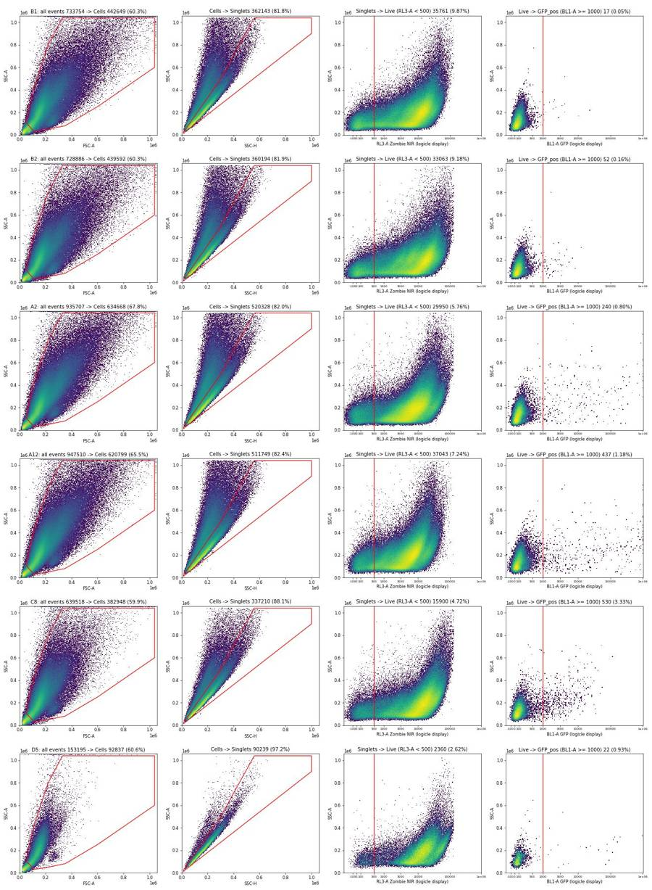
130
agent
Status: gates verified on overlays (tightening the singlet polygon's lower edge), counts already exported once. Now regenerating final counts and writing flags.csv and notes.md.
131
tool call · Bash
cd /task; python3 - <<'EOF'
import re
p='/task/work/build_gates.py'; s=open(p).read()
s=s.replace("SING=[(15e3,13.5e3),(1000e3,900e3),(1000e3,1040e3),(560e3,1040e3),(420e3,750e3),(300e3,495e3),(15e3,24.75e3)]","SING=[(15e3,13.5e3),(100e3,93e3),(200e3,200e3),(400e3,430e3),(700e3,780e3),(940e3,1040e3),(560e3,1040e3),(420e3,750e3),(300e3,495e3),(15e3,24.75e3)]")
open(p,'w').write(s)
p='/task/work/gatesdef.py'; s=open(p).read()
s=s.replace("SING=[(15e3,13.5e3),(1000e3,900e3),(1000e3,1040e3),(560e3,1040e3),(420e3,750e3),(300e3,495e3),(15e3,24.75e3)]","SING=[(15e3,13.5e3),(100e3,93e3),(200e3,200e3),(400e3,430e3),(700e3,780e3),(940e3,1040e3),(560e3,1040e3),(420e3,750e3),(300e3,495e3),(15e3,24.75e3)]")
open(p,'w').write(s)
EOF
grep -n "SING=" work/build_gates.py work/gatesdef.py
python3 work/build_gates.py 2>&1 | grep -E "^(A1|A2|B1|B7|D5|\[)" ; wc -l outputs/counts.csv; head -5 outputs/counts.csv132
tool output
work/gatesdef.py:4:SING=[(15e3,13.5e3),(100e3,93e3),(200e3,200e3),(400e3,430e3),(700e3,780e3),(940e3,1040e3),(560e3,1040e3),(420e3,750e3),(300e3,495e3),(15e3,24.75e3)]
work/build_gates.py:7:SING=[(15e3,13.5e3),(100e3,93e3),(200e3,200e3),(400e3,430e3),(700e3,780e3),(940e3,1040e3),(560e3,1040e3),(420e3,750e3),(300e3,495e3),(15e3,24.75e3)] # SSC-H, SSC-A
[('Cells', ('root',)), ('Singlets', ('root', 'Cells')), ('Live', ('root', 'Cells', 'Singlets')), ('GFP_pos', ('root', 'Cells', 'Singlets', 'Live'))]
A1 {'all_events': 978726, 'Cells': 686826, 'Singlets': 497390, 'Live': 45247, 'GFP_pos': 163}
A2 {'all_events': 935707, 'Cells': 634670, 'Singlets': 520269, 'Live': 29948, 'GFP_pos': 240}
A10 {'all_events': 870505, 'Cells': 579431, 'Singlets': 473735, 'Live': 32351, 'GFP_pos': 182}
A11 {'all_events': 844586, 'Cells': 546746, 'Singlets': 461557, 'Live': 36406, 'GFP_pos': 268}
A12 {'all_events': 947510, 'Cells': 620799, 'Singlets': 511689, 'Live': 37038, 'GFP_pos': 437}
B1 {'all_events': 733754, 'Cells': 442649, 'Singlets': 362102, 'Live': 35753, 'GFP_pos': 17}
B7 {'all_events': 954909, 'Cells': 614177, 'Singlets': 501842, 'Live': 19432, 'GFP_pos': 161}
B10 {'all_events': 1083648, 'Cells': 700942, 'Singlets': 567340, 'Live': 24229, 'GFP_pos': 292}
B11 {'all_events': 988574, 'Cells': 635206, 'Singlets': 526725, 'Live': 23489, 'GFP_pos': 373}
B12 {'all_events': 904103, 'Cells': 575456, 'Singlets': 481868, 'Live': 19497, 'GFP_pos': 395}
D5 {'all_events': 153195, 'Cells': 92837, 'Singlets': 90239, 'Live': 2360, 'GFP_pos': 22}
169 outputs/counts.csv
file,well,population,count,parent_population,pct_of_parent
Serotype panel_2_Rep2_Group_A1.fcs,A1,Cells,686826,all_events,70.1755
Serotype panel_2_Rep2_Group_A1.fcs,A1,Singlets,497390,Cells,72.4186
Serotype panel_2_Rep2_Group_A1.fcs,A1,Live,45247,Singlets,9.0969
Serotype panel_2_Rep2_Group_A1.fcs,A1,GFP_pos,163,Live,0.3602134
tool call · Bash
cd /task; cat > work/flags.py <<'EOF'
import sys; sys.path.insert(0,'/task/work')
import numpy as np, pandas as pd, matplotlib; matplotlib.use('Agg'); import matplotlib.pyplot as plt
lay=pd.read_csv('/task/inputs/plate_layout.csv'); cnt=pd.read_csv('/task/outputs/counts.csv')
MAX=1048575
FLAG={
'A1':('other','medium'),
'B7':('clog_or_interrupted_flow','high'),
'B8':('clog_or_interrupted_flow','medium'),
'D5':('too_few_events','medium'),
}
tot_med=np.median([np.load(f'work/npy/{w}.npy',mmap_mode='r').shape[0] for w in lay.well])
live_med=cnt[cnt.population=='Live']['count'].median()
rows=[]; fig,ax=plt.subplots(6,7,figsize=(24,16),sharey=False)
for a,(f,w) in zip(ax.flat,zip(lay.file,lay.well)):
e=np.load(f'work/npy/{w}.npy'); t=e[:,0]; n=len(e); dur=float(t.max())
h,_=np.histogram(t,np.arange(0,np.floor(dur)+1e-6,1.0)); med=float(np.median(h))
nlow=int((h<0.7*med).sum()); nhigh=int((h>1.3*med).sum())
lows=np.where(h<0.7*med)[0]; highs=np.where(h>1.3*med)[0]
first5=(t<5).sum()/5; last5=(t>=dur-5).sum()/5; last1=(t>=dur-1).sum()
sat_sc=100*((e[:,1]>=MAX)|(e[:,2]>=MAX)).mean(); sat_fl=100*((e[:,3]>=MAX)|(e[:,4]>=MAX)|(e[:,5]>=MAX)).mean()
c=cnt[cnt.well==w].set_index('population')['count']
base=(f"{n} events in {dur:.1f} s; counts Cells {c['Cells']}, Singlets {c['Singlets']}, Live {c['Live']}, GFP_pos {c['GFP_pos']}; "
f"median rate {med:.0f} ev/s (1-s bins), min {h.min()} ev/s at {h.argmin()}-{h.argmin()+1} s, max {h.max()} ev/s at {h.argmax()}-{h.argmax()+1} s; "
f"{nlow} bins <70% and {nhigh} bins >130% of median; first 5 s {100*first5/med:.0f}%, last 5 s {100*last5/med:.0f}%, last 1 s {100*last1/med:.0f}% of median; "
f"at scale max: scatter-A {sat_sc:.2f}%, fluorescence-A {sat_fl:.3f}% of events")
extra=''
if w=='A1':
extra=("; acquired with different settings from the other 41 wells: FCS #flowrate 200 uL/min (100 elsewhere), run stopped at 46.2 s (97-98 s elsewhere), rate 21,600 ev/s (others 1,600-11,400), "
"instrument coincidence count 172,519 = 17.6% of events (others 1.5-11.4%); Singlets 72.4% of Cells is the lowest on the plate (others 79-97%); baseline noise is broader: RL3-A 1st percentile on Singlets -191 (others -75 to +179), "
"so the plate-wide Zombie NIR cut-off does not select the same population; Live 9.1% of Singlets vs 5.8% in duplicate A2, GFP_pos 0.36% vs 0.80%; flow itself was stable")
if w=='B7':
extra=("; flow interrupted repeatedly: 0-4 s at 3-18% of median rate (312 ev/s in first second), 4-14 s unstable at 48-90% with a scatter/fluorescence collapse, burst to 150-171% at 14-16 s and 29-31 s, second dip to 60-76% at 59-62 s with a signal break at ~62 s; "
"rate CV 0.28 (plate typical 0.05-0.10); FSC-A median 90,800 in first 5 s vs 109,400 mid-run")
if w=='B8':
extra=("; flow stalled at start: 0-1 s 6%, 1-3 s <=1% of median (34 ev/s at 2-3 s), 3-8 s at 22-63%, then burst to 139-152% at 8-12 s before settling; FSC-A median 81,200 in first 5 s vs 114,700 mid-run and Cells 52% vs 65%; "
"run directly follows clogged well B7; 90 s of stable flow after 12 s, so gated percentages change <0.1 point if the first 12 s are ignored (hence medium)")
if w=='D5':
extra=(f"; only {n} events = {100*n/tot_med:.0f}% of the plate median ({tot_med:.0f}) from the same drawn volume (163 uL): rate 1,600 ev/s vs 6,000-11,400 in every other 100 uL/min well; "
f"Live {c['Live']} (plate median {live_med:.0f}; duplicate D6 9,123) and only {c['GFP_pos']} GFP_pos events (counting CV about 21%); the high-FSC live-cell cluster holds 394 events vs 2,600-9,200 elsewhere; "
"flow was stable, so the cells were lost before acquisition")
if w in FLAG:
cat,conf=FLAG[w]; rows.append(dict(file=f,well=w,usable='no',reason_category=cat,evidence=base+extra+f"; confidence: {conf}"))
else:
note=''
if 100*last1/med<60: note+=f"; rate and scatter decline over the last ~4 s only (final second {100*last1/med:.0f}% of median, never zero), {100*(t>=dur-5).mean():.1f}% of events, gated percentages unchanged (<=0.2 point) without it"
if (np.diff(t)<0).any():
i=np.where(np.diff(t)<0)[0][0]+1; note+=f"; Time restarts once after the first {i} events ({100*i/n:.2f}% of events, stamped {t[:i].min():.1f}-{t[:i].max():.1f} s), which look like the rest of the well"
if w=='C12': note+="; Zombie NIR-bright events form two peaks (about 1e4 and 4e4), stable over time and both above the Live cut-off"
rows.append(dict(file=f,well=w,usable='yes',reason_category='ok',evidence=base+note))
a.step(np.arange(len(h)),h,where='post',color='#c0392b' if w in FLAG else '#2c6fbb',lw=1); a.axhline(med,color='grey',lw=.5,ls='--')
a.set_ylim(0,max(h.max()*1.1,1)); a.set_title(f"{w} {n} ev" + (f" [{FLAG[w][0]}]" if w in FLAG else ''),fontsize=9); a.tick_params(labelsize=7)
fig.supxlabel('Time (s)'); fig.supylabel('events per second'); fig.tight_layout(); fig.savefig('/task/outputs/plots/event_rate_by_well.png',dpi=60)
df=pd.DataFrame(rows,columns=['file','well','usable','reason_category','evidence']); df.to_csv('/task/outputs/flags.csv',index=False)
print(df.usable.value_counts());
for _,r in df.iterrows(): print(r.well,r.usable,r.reason_category,'|',r.evidence[:2000] if r.usable=='no' or 'decline' in r.evidence or 'Time restarts' in r.evidence else r.evidence[:150])
EOF
python3 work/flags.py135
tool output
usable yes 38 no 4 Name: count, dtype: int64 A1 no other | 978726 events in 46.2 s; counts Cells 686826, Singlets 497390, Live 45247, GFP_pos 163; median rate 21595 ev/s (1-s bins), min 17413 ev/s at 43-44 s, max 22801 ev/s at 1-2 s; 0 bins <70% and 0 bins >130% of median; first 5 s 103%, last 5 s 89%, last 1 s 96% of median; at scale max: scatter-A 1.18%, fluorescence-A 0.001% of events; acquired with different settings from the other 41 wells: FCS #flowrate 200 uL/min (100 elsewhere), run stopped at 46.2 s (97-98 s elsewhere), rate 21,600 ev/s (others 1,600-11,400), instrument coincidence count 172,519 = 17.6% of events (others 1.5-11.4%); Singlets 72.4% of Cells is the lowest on the plate (others 79-97%); baseline noise is broader: RL3-A 1st percentile on Singlets -191 (others -75 to +179), so the plate-wide Zombie NIR cut-off does not select the same population; Live 9.1% of Singlets vs 5.8% in duplicate A2, GFP_pos 0.36% vs 0.80%; flow itself was stable; confidence: medium A2 yes ok | 935707 events in 97.9 s; counts Cells 634670, Singlets 520269, Live 29948, GFP_pos 240; median rate 9736 ev/s (1-s bins), min 7499 ev/s at 95-96 s, ma A3 yes ok | 925910 events in 97.7 s; counts Cells 634772, Singlets 527411, Live 33865, GFP_pos 291; median rate 9731 ev/s (1-s bins), min 6134 ev/s at 96-97 s, ma A4 yes ok | 892332 events in 97.7 s; counts Cells 618000, Singlets 510542, Live 28804, GFP_pos 294; median rate 9275 ev/s (1-s bins), min 7735 ev/s at 92-93 s, ma A5 yes ok | 986514 events in 97.9 s; counts Cells 673868, Singlets 550804, Live 31838, GFP_pos 338; median rate 10269 ev/s (1-s bins), min 7319 ev/s at 93-94 s, m A6 yes ok | 755396 events in 97.1 s; counts Cells 522036, Singlets 447544, Live 22000, GFP_pos 298; median rate 7917 ev/s (1-s bins), min 5864 ev/s at 92-93 s, ma A7 yes ok | 848859 events in 97.9 s; counts Cells 559327, Singlets 460482, Live 28414, GFP_pos 177; median rate 8848 ev/s (1-s bins), min 6996 ev/s at 93-94 s, ma A8 yes ok | 710140 events in 97.9 s; counts Cells 482756, Singlets 411171, Live 26363, GFP_pos 237; median rate 7376 ev/s (1-s bins), min 5351 ev/s at 1-2 s, max A9 yes ok | 958681 events in 97.8 s; counts Cells 618910, Singlets 488816, Live 40140, GFP_pos 129; median rate 9968 ev/s (1-s bins), min 7823 ev/s at 91-92 s, ma A10 yes ok | 870505 events in 97.7 s; counts Cells 579431, Singlets 473735, Live 32351, GFP_pos 182; median rate 9119 ev/s (1-s bins), min 5696 ev/s at 96-97 s, max 10137 ev/s at 5-6 s; 1 bins <70% and 0 bins >130% of median; first 5 s 101%, last 5 s 75%, last 1 s 57% of median; at scale max: scatter-A 0.64%, fluorescence-A 0.004% of events; rate and scatter decline over the last ~4 s only (final second 57% of median, never zero), 3.9% of events, gated percentages unchanged (<=0.2 point) without it A11 yes ok | 844586 events in 97.9 s; counts Cells 546746, Singlets 461557, Live 36406, GFP_pos 268; median rate 8749 ev/s (1-s bins), min 7212 ev/s at 93-94 s, ma A12 yes ok | 947510 events in 97.9 s; counts Cells 620799, Singlets 511689, Live 37038, GFP_pos 437; median rate 9856 ev/s (1-s bins), min 6004 ev/s at 96-97 s, max 11012 ev/s at 5-6 s; 2 bins <70% and 0 bins >130% of median; first 5 s 100%, last 5 s 75%, last 1 s 52% of median; at scale max: scatter-A 0.55%, fluorescence-A 0.011% of events; rate and scatter decline over the last ~4 s only (final second 52% of median, never zero), 3.9% of events, gated percentages unchanged (<=0.2 point) without it B1 yes ok | 733754 events in 97.9 s; counts Cells 442649, Singlets 362102, Live 35753, GFP_pos 17; median rate 7648 ev/s (1-s bins), min 5352 ev/s at 92-93 s, max B2 yes ok | 728886 events in 97.9 s; counts Cells 439592, Singlets 360144, Live 33060, GFP_pos 52; median rate 7525 ev/s (1-s bins), min 6130 ev/s at 92-93 s, max B3 yes ok | 667298 events in 97.9 s; counts Cells 407050, Singlets 347034, Live 21800, GFP_pos 202; median rate 6958 ev/s (1-s bins), min 5716 ev/s at 2-3 s, max B4 yes ok | 598212 events in 97.9 s; counts Cells 361148, Singlets 315346, Live 25693, GFP_pos 73; median rate 6291 ev/s (1-s bins), min 3531 ev/s at 96-97 s, max 6960 ev/s at 7-8 s; 2 bins <70% and 0 bins >130% of median; first 5 s 95%, last 5 s 66%, last 1 s 47% of median; at scale max: scatter-A 0.32%, fluorescence-A 0.001% of events; rate and scatter decline over the last ~4 s only (final second 47% of median, never zero), 3.5% of events, gated percentages unchanged (<=0.2 point) without it B5 yes ok | 837561 events in 97.9 s; counts Cells 530339, Singlets 444668, Live 40338, GFP_pos 187; median rate 8770 ev/s (1-s bins), min 5479 ev/s at 96-97 s, max 9646 ev/s at 7-8 s; 2 bins <70% and 0 bins >130% of median; first 5 s 96%, last 5 s 70%, last 1 s 53% of median; at scale max: scatter-A 0.41%, fluorescence-A 0.000% of events; rate and scatter decline over the last ~4 s only (final second 53% of median, never zero), 3.7% of events, gated percentages unchanged (<=0.2 point) without it B6 yes ok | 877336 events in 97.8 s; counts Cells 549686, Singlets 456120, Live 47188, GFP_pos 200; median rate 9071 ev/s (1-s bins), min 5269 ev/s at 96-97 s, max 10142 ev/s at 7-8 s; 2 bins <70% and 0 bins >130% of median; first 5 s 99%, last 5 s 67%, last 1 s 45% of median; at scale max: scatter-A 0.48%, fluorescence-A 0.000% of events; rate and scatter decline over the last ~4 s only (final second 45% of median, never zero), 3.5% of events, gated percentages unchanged (<=0.2 point) without it B7 no clog_or_interrupted_flow | 954909 events in 97.9 s; counts Cells 614177, Singlets 501842, Live 19432, GFP_pos 161; median rate 10200 ev/s (1-s bins), min 312 ev/s at 0-1 s, max 17476 ev/s at 30-31 s; 12 bins <70% and 6 bins >130% of median; first 5 s 22%, last 5 s 87%, last 1 s 92% of median; at scale max: scatter-A 0.56%, fluorescence-A 0.001% of events; flow interrupted repeatedly: 0-4 s at 3-18% of median rate (312 ev/s in first second), 4-14 s unstable at 48-90% with a scatter/fluorescence collapse, burst to 150-171 … [8,232 more characters not shown]
137
tool call · Bash
cd /task; cat > work/verify.py <<'EOF'
import sys; sys.path.insert(0,'/task/work')
import numpy as np, pandas as pd
from gatesdef import *
np.set_printoptions(linewidth=250)
lay=pd.read_csv('/task/inputs/plate_layout.csv'); cnt=pd.read_csv('/task/outputs/counts.csv')
p=cnt.pivot(index='well',columns='population',values='pct_of_parent')
print('Singlets% range excluding A1:',p.drop('A1').Singlets.min(),p.drop('A1').Singlets.max(),' A1',p.loc['A1','Singlets'])
print('Live% range',p.Live.min(),p.Live.max(),'GFP% range',p.GFP_pos.min(),p.GFP_pos.max())
for w in ['B7','B8']:
e=np.load(f'work/npy/{w}.npy'); t=e[:,0]; h,_=np.histogram(t,np.arange(0,98,1.0)); med=np.median(h[:-1])
print(w,np.round(100*h/med).astype(int))
def pcts(e,m):
c=cells(e)&m; s=c&sing(e); l=s&(e[:,4]<500); g=l&(e[:,3]>=1000)
return np.array([100*c.sum()/m.sum(),100*s.sum()/c.sum(),100*l.sum()/s.sum(),100*g.sum()/l.sum()])
mx=0
for w in lay.well:
e=np.load(f'work/npy/{w}.npy'); t=e[:,0]; dur=t.max(); h,_=np.histogram(t,np.arange(0,np.floor(dur)+1e-6,1.0)); med=np.median(h)
last1=(t>=dur-1).sum()/med
if last1<0.6 or w in('B7','B8'):
a=pcts(e,np.ones(len(e),bool)); b=pcts(e,t<dur-5) if w not in('B7','B8') else pcts(e,t>=12)
d=np.abs(a-b);
if w not in ('B7','B8'): mx=np.maximum(mx,d)
print(w,'all',np.round(a,2),'trimmed',np.round(b,2),'absdiff',np.round(d,2))
print('max abs diff droop wells (Cells,Singlets,Live,GFP):',np.round(mx,2))
EOF
python3 work/verify.py138
tool output
Singlets% range excluding A1: 78.9801 97.2015 A1 72.4186 Live% range 2.267 10.3455 GFP% range 0.0475 3.3335 B7 [ 3 17 17 18 54 65 48 67 84 94 80 66 52 50 137 137 133 127 124 118 117 115 114 111 110 110 110 110 109 144 171 158 127 107 106 106 106 100 102 107 103 106 104 106 103 103 101 103 92 94 101 99 89 107 100 81 101 89 75 77 82 38 105 116 100 106 96 89 99 95 99 95 96 90 98 94 98 98 96 102 104 106 106 106 106 103 101 99 94 88 88 88 85 85 86 84 98] B8 [ 6 1 0 22 63 61 57 60 119 152 147 143 136 123 115 110 107 103 102 101 102 101 100 101 99 100 101 102 100 100 100 102 101 101 102 103 102 101 102 100 102 102 103 104 101 102 104 101 103 100 100 99 100 98 98 96 95 93 91 91 92 94 93 94 94 96 94 93 96 95 93 95 93 94 94 97 97 103 104 105 102 104 103 98 91 85 84 85 91 92 96 97 103 86 74 66 62] A10 all [66.56 81.76 6.83 0.56] trimmed [66.73 81.6 6.83 0.57] absdiff [0.17 0.16 0. 0.01] A12 all [65.52 82.42 7.24 1.18] trimmed [65.69 82.27 7.24 1.19] absdiff [0.17 0.15 0. 0.01] B4 all [60.37 87.32 8.15 0.28] trimmed [60.58 87.15 8.13 0.28] absdiff [0.21 0.17 0.02 0. ] B5 all [63.32 83.85 9.07 0.46] trimmed [63.53 83.65 9.06 0.46] absdiff [0.21 0.2 0.01 0. ] B6 all [62.65 82.98 10.35 0.42] trimmed [62.77 82.79 10.34 0.43] absdiff [0.12 0.19 0. 0. ] B7 all [64.32 81.71 3.87 0.83] trimmed [64.67 81.12 3.84 0.83] absdiff [0.35 0.58 0.03 0.01] B8 all [63.86 82.62 4.31 1.24] trimmed [64.31 82.34 4.26 1.26] absdiff [0.45 0.29 0.05 0.02] B10 all [64.68 80.94 4.27 1.21] trimmed [64.91 80.72 4.27 1.23] absdiff [0.22 0.22 0. 0.02] B11 all [64.25 82.92 4.46 1.59] trimmed [64.44 82.75 4.47 1.62] absdiff [0.19 0.18 0.01 0.03] C2 all [60.29 87.36 3.88 2.29] trimmed [60.54 87.19 3.89 2.32] absdiff [0.25 0.17 0.01 0.04] C3 all [59.34 85.68 5.53 0.81] trimmed [59.65 85.5 5.55 0.81] absdiff [0.3 0.19 0.03 0. ] C4 all [62.04 87.05 3.91 1.44] trimmed [62.28 86.88 3.92 1.45] absdiff [0.24 0.16 0.01 0. ] C6 all [62.22 84.27 3.39 1.02] trimmed [62.45 84.08 3.39 1.04] absdiff [0.23 0.19 0. 0.02] C10 all [64.68 82.77 4.74 1.28] trimmed [65.01 82.55 4.73 1.29] absdiff [0.32 0.22 0. 0.01] max abs diff droop wells (Cells,Singlets,Live,GFP): [0.32 0.22 0.03 0.04]
140
agent
Status: verifying the numbers quoted in the flag evidence (correcting a few intervals for B7/B8), then writing notes.md — nearly done.
141
tool call · Bash
cd /task; python3 - <<'EOF'
p='/task/work/flags.py'; s=open(p).read()
old_b7=s[s.index(' extra=("; flow interrupted repeatedly'):s.index(" if w=='B8':")]
new_b7=''' extra=("; flow interrupted repeatedly: 0-4 s at 3-18% of median rate (312 ev/s in first second), 4-14 s unstable at 48-94% with collapsed scatter and fluorescence, bursts to 124-137% at 14-19 s and 144-171% at 29-32 s, "
"second dip to 75-82% at 58-61 s and 38% at 61-62 s with a signal break; rate CV 0.28 (plate typical 0.05-0.10); FSC-A median 90,800 in first 5 s vs 109,400 mid-run")
'''
s=s.replace(old_b7,new_b7)
old_b8=s[s.index(' extra=("; flow stalled at start'):s.index(" if w=='D5':")]
new_b8=''' extra=("; flow stalled at start: 0-1 s 6%, 1-3 s <=1% of median (34 ev/s at 2-3 s), 3-8 s at 22-63%, then burst to 119-152% at 8-13 s before settling; FSC-A median 81,200 in first 5 s vs 114,700 mid-run and Cells 52% vs 65% of events; "
"run directly follows clogged well B7; flow is stable from 13 s to 92 s, and dropping the first 12 s moves Cells % by 0.45 point and Live/GFP_pos % by <=0.05 point, hence medium")
'''
s=s.replace(old_b8,new_b8)
s=s.replace("duplicate D6 9,123","duplicate D6 9,124")
s=s.replace("gated percentages unchanged (<=0.2 point) without it","all four pct_of_parent values change by <=0.3 point without the last 5 s")
open(p,'w').write(s)
EOF
python3 work/flags.py | grep -E "^(B7|B8|C3|usable|yes|no)"; python3 - <<'EOF'
import pandas as pd
f=pd.read_csv('/task/outputs/flags.csv'); c=pd.read_csv('/task/outputs/counts.csv'); l=pd.read_csv('/task/inputs/plate_layout.csv')
assert list(f.file)==list(l.file) and list(f.well)==list(l.well) and len(f)==42
assert len(c)==168 and set(c.population)=={'Cells','Singlets','Live','GFP_pos'}
assert ((f.usable=='yes')==(f.reason_category=='ok')).all()
import re
assert all(re.search(r'confidence: (high|medium|low)$',e) for e in f[f.usable=='no'].evidence)
assert c.pct_of_parent.between(0,100).all() and c['count'].dtype.kind=='i'
print('checks ok'); print(c.pivot(index='well',columns='population',values='pct_of_parent')[['Cells','Singlets','Live','GFP_pos']].describe().round(2))
EOF
ls -la outputs outputs/plots142
tool output
usable yes 38 no 4 B7 no clog_or_interrupted_flow | 954909 events in 97.9 s; counts Cells 614177, Singlets 501842, Live 19432, GFP_pos 161; median rate 10200 ev/s (1-s bins), min 312 ev/s at 0-1 s, max 17476 ev/s at 30-31 s; 12 bins <70% and 6 bins >130% of median; first 5 s 22%, last 5 s 87%, last 1 s 92% of median; at scale max: scatter-A 0.56%, fluorescence-A 0.001% of events; flow interrupted repeatedly: 0-4 s at 3-18% of median rate (312 ev/s in first second), 4-14 s unstable at 48-94% with collapsed scatter and fluorescence, bursts to 124-137% at 14-19 s and 144-171% at 29-32 s, second dip to 75-82% at 58-61 s and 38% at 61-62 s with a signal break; rate CV 0.28 (plate typical 0.05-0.10); FSC-A median 90,800 in first 5 s vs 109,400 mid-run; confidence: high B8 no clog_or_interrupted_flow | 918778 events in 97.8 s; counts Cells 586712, Singlets 484752, Live 20891, GFP_pos 259; median rate 9976 ev/s (1-s bins), min 34 ev/s at 2-3 s, max 15194 ev/s at 9-10 s; 10 bins <70% and 4 bins >130% of median; first 5 s 19%, last 5 s 70%, last 1 s 54% of median; at scale max: scatter-A 0.37%, fluorescence-A 0.000% of events; flow stalled at start: 0-1 s 6%, 1-3 s <=1% of median (34 ev/s at 2-3 s), 3-8 s at 22-63%, then burst to 119-152% at 8-13 s before settling; FSC-A median 81,200 in first 5 s vs 114,700 mid-run and Cells 52% vs 65% of events; run directly follows clogged well B7; flow is stable from 13 s to 92 s, and dropping the first 12 s moves Cells % by 0.45 point and Live/GFP_pos % by <=0.05 point, hence medium; confidence: medium C3 yes ok | 656321 events in 97.7 s; counts Cells 389485, Singlets 333729, Live 18449, GFP_pos 150; median rate 6955 ev/s (1-s bins), min 2687 ev/s at 96-97 s, max 7636 ev/s at 8-9 s; 4 bins <70% and 0 bins >130% of median; first 5 s 93%, last 5 s 52%, last 1 s 29% of median; at scale max: scatter-A 0.29%, fluorescence-A 0.000% of events; rate and scatter decline over the last ~4 s only (final second 29% of median, never zero), 2.7% of events, all four pct_of_parent values change by <=0.3 point without the last 5 s checks ok population Cells Singlets Live GFP_pos count 42.00 42.00 42.00 42.00 mean 63.82 84.21 5.57 1.01 std 2.96 3.64 2.03 0.62 min 57.88 72.42 2.27 0.05 25% 62.05 82.35 4.26 0.58 50% 63.75 83.79 4.85 0.93 75% 65.27 85.72 6.42 1.24 max 70.18 97.20 10.35 3.33 outputs: total 52 drwxr-xr-x 3 root root 4096 Nov 10 19:27 . drwxr-xr-x 5 root root 4096 Nov 10 19:14 .. -rw-r--r-- 1 root root 11230 Nov 10 19:26 counts.csv -rw-r--r-- 1 root root 20371 Nov 10 19:28 flags.csv -rw-r--r-- 1 root root 5029 Nov 10 19:26 gates.xml drwxr-xr-x 2 root root 4096 Nov 10 19:27 plots outputs/plots: total 988 drwxr-xr-x 2 root root 4096 Nov 10 19:27 . drwxr-xr-x 3 root root 4096 Nov 10 19:27 .. -rw-r--r-- 1 root root 117375 Nov 10 19:28 event_rate_by_well.png -rw-r--r-- 1 root root 884419 Nov 10 19:26 gates_overlay.png
144
tool call · Bash
cd /task; cat > outputs/notes.md <<'EOF'
# Plate 230306 – gating notes (FlowKit 1.2.3, raw uncompensated data, one strategy in `gates.xml`)
## Gates
All bounds are in raw channel units; no transform is stored in the gates (logicle T=1048576, W=0.5, M=4.5 was used for display only). Overlays: `plots/gates_overlay.png`.
- **Cells** (PolygonGate, FSC-A vs SSC-A, 58–70 % of events). Lower-left edge runs from (110k, 30k) to (55k, 100k); it crosses the debris-to-cell ridge at about FSC-A 75k, inside the shallow valley seen in every well (55k on a log axis, 77–107k on a linear axis). The top and right edges stop at 1,040,000 to drop the pile at the scale maximum (1,048,575; 0.1–1.2 % of events, almost all SSC-A). The lower-right edge keeps the high-FSC/low-SSC cluster (FSC-A 200–350k, SSC-A 80–220k), which holds the Zombie-negative, NCAM-bright cells.
- **Singlets** (PolygonGate, SSC-H vs SSC-A, 72–97 % of Cells). Band from SSC-A ≈ 0.93–1.1 × SSC-H up to 1.65 × SSC-H (widening to ~1.85 × above SSC-H 420k, where the ridge itself bends up).
- **Live** (RectangleGate, RL3-A < 500, SSC-A 0–1,048,576 so only the RL3-A edge acts). There is no control, so the edge was read from Singlets in all 42 wells on RL3-A vs SSC-A and the RL3-A histogram. The Zombie-dim cluster peaks at about 100; the dip before the density climbs into the bright population (peak ~1e4) sits at 190–470 in the 36 wells that show one (median ~340), and the 2-D saddle at 300–700. 500 is the upper side of that dip. The dim side is a shoulder, not a separate peak, so this count is sensitive: moving the edge to 300 or 700 changes Live by about −23 % / +19 % (A2).
- **GFP_pos** (RectangleGate, BL1-A ≥ 1000, no upper limit, same SSC-A range). Edge judged on Live events of the wells with the fewest bright events: B1 (99.9th percentile 714; 17 of 35,753 events ≥ 1000 = 0.05 %), B2 (0.16 %) and B4 (0.28 %). The GFP-negative cluster (median ~90) ends at 700–1000 in these wells; beyond 1000 only a flat, sparse tail remains. Saturated GFP events are kept as positive.
## Quality control
Every well was screened on: total events and gated counts; event rate in 1-s bins over Time (median, bins < 70 % or > 130 % of median, first/last 5 s); scatter and fluorescence vs Time; % of events at the scale maximum; FCS acquisition keywords; and agreement of the fluorescence distributions with the rest of the plate. Rate plot: `plots/event_rate_by_well.png`. Four wells are flagged unusable:
- **B7** (clog/interrupted flow, high): rate 3–18 % of median for 4 s, unstable to 14 s, bursts to 171 %, second break at 61–62 s.
- **B8** (clog/interrupted flow, medium): flow stalled at 1–3 s (≤ 1 % of median), recovered by 13 s; the run directly follows B7.
- **D5** (too few events, medium): 153,195 events (18 % of plate median) at stable flow; Live 2,360, GFP_pos 22.
- **A1** (other, medium): acquired at 200 µL/min for 46 s instead of 100 µL/min for 98 s; lowest singlet fraction and a broader fluorescence baseline, so the plate-wide cut-offs do not select the same population. This is a comparability call, not an acquisition failure.
Seen but kept as usable: (i) 13 wells (A10, A12, B4, B5, B6, B10, B11, C2, C3, C4, C6, C10, plus flagged B8) lose rate and scatter in the last ~4 s (final second 29–57 % of median, worst C3); it involves ≤ 4 % of events and removing it moves no pct_of_parent by more than 0.3 point. (ii) C6, C11 and D4 have one Time restart after the first ~4,100–4,400 events (0.5 %). (iii) C12 has a doubled Zombie-bright peak, entirely above the Live cut-off. (iv) No well has a saturation problem. Duplicate wells often differ about two-fold in % GFP_pos, and GFP_pos counts are small (17–530 events); no dose trend is evident.
## Deviations
- The Singlets polygon is wider on its upper side (1.65 × SSC-H) than the tightest band around the main ridge (~1.4 ×). The Zombie-negative cluster has a higher SSC-A/SSC-H ratio (median 1.36 vs 1.2 for the Zombie-bright bulk); a 1.45 × edge would remove about 25 % of it.
- Live is placed at the upper side of a shallow dip/shoulder, because no clean valley exists on Singlets in any well.
- Otherwise none: order, axes and gate shapes follow `gating_strategy.md`; no per-well adjustment, compensation or subsampling. Counts in `counts.csv` come from the reloaded `gates.xml` via `gate_sample`.
EOF
wc -w outputs/notes.md; python3 work/overlay.py && ls -la outputs/plots && python3 - <<'EOF'
import flowkit as fk
g=fk.parse_gating_xml('/task/outputs/gates.xml'); print(g.get_gate_ids())
EOF145
tool output
747 outputs/notes.md
total 988
drwxr-xr-x 2 root root 4096 Nov 10 19:27 .
drwxr-xr-x 3 root root 4096 Nov 10 19:28 ..
-rw-r--r-- 1 root root 117375 Nov 10 19:28 event_rate_by_well.png
-rw-r--r-- 1 root root 883837 Nov 10 19:28 gates_overlay.png
[('Cells', ('root',)), ('Singlets', ('root', 'Cells')), ('Live', ('root', 'Cells', 'Singlets')), ('GFP_pos', ('root', 'Cells', 'Singlets', 'Live'))]147
tool call · Bash
cd /task; cat > outputs/notes.md <<'EOF' # Plate 230306 – gating notes (FlowKit 1.2.3, raw uncompensated data, one strategy in `gates.xml`) ## Gates Bounds are in raw channel units (logicle display only). Overlays: `plots/gates_overlay.png`. - **Cells** (PolygonGate, FSC-A vs SSC-A; 58–70 % of events). The lower-left edge, (110k, 30k) to (55k, 100k), crosses the debris-to-cell ridge near FSC-A 75k, inside the shallow valley present in every well (55k on a log axis, 77–107k on a linear axis). Top and right edges stop at 1,040,000 to drop the pile at the scale maximum (0.1–1.2 % of events, almost all SSC-A). The lower-right edge keeps the high-FSC/low-SSC cluster (FSC-A 200–350k, SSC-A 80–220k) that holds the Zombie-negative, NCAM-bright cells. - **Singlets** (PolygonGate, SSC-H vs SSC-A; 72–97 % of Cells). Diagonal band from about 0.93–1.1 × SSC-H up to 1.65 × SSC-H, widening above SSC-H 420k where the ridge bends up. - **Live** (RectangleGate, RL3-A < 500; SSC-A 0–1,048,576 so only the RL3-A edge acts). With no control, the edge was read on Singlets of all 42 wells (RL3-A vs SSC-A and RL3-A histograms). The Zombie-dim cluster peaks near 100; the dip before density climbs into the bright population (peak ~1e4) sits at 190–470 in the 36 wells that show one (median ~340), the 2-D saddle at 300–700. 500 is the upper side of that dip. The dim side is a shoulder, so this count is sensitive: an edge at 300 or 700 changes Live by about −23 % / +19 % (A2). - **GFP_pos** (RectangleGate, BL1-A ≥ 1000, no upper limit, same SSC-A range). Judged on Live events of the wells with fewest bright events: B1 (99.9th percentile 714; 17 of 35,753 events ≥ 1000 = 0.05 %), B2 (0.16 %), B4 (0.28 %). Their GFP-negative cluster (median ~90) ends at 700–1000; above 1000 only a flat sparse tail remains. ## Quality control Each well was screened on total and gated counts, event rate in 1-s bins over Time, scatter and fluorescence vs Time, % of events at the scale maximum, FCS acquisition keywords, and agreement with the rest of the plate (`plots/event_rate_by_well.png`). Four wells are flagged unusable: - **B7** (clog/interrupted flow, high): rate 3–18 % of median for 4 s, unstable to 14 s, bursts to 171 %, break at 61–62 s. - **B8** (clog/interrupted flow, medium): flow stalled at 1–3 s (≤ 1 % of median), recovered by 13 s; follows B7. - **D5** (too few events, medium): 153,195 events (18 % of plate median) at stable flow; Live 2,360, GFP_pos 22. - **A1** (other, medium): run at 200 µL/min for 46 s instead of 100 µL/min for 98 s; lowest singlet fraction and broader fluorescence baseline, so the plate-wide cut-offs select a different population. A comparability call, not an acquisition failure. Seen but kept usable: 12 further wells (A10, A12, B4, B5, B6, B10, B11, C2, C3, C4, C6, C10) lose rate and scatter in the last ~4 s (final second 29–57 % of median, worst C3; ≤ 4 % of events; no pct_of_parent moves more than 0.3 point without it). C6, C11, D4 have one Time restart after the first ~4,100–4,400 events. C12 has a doubled Zombie-bright peak, all above the Live cut-off. No well has a saturation problem. GFP_pos counts are small (17–530) and duplicates often differ two-fold. ## Deviations - Singlets is wider on its upper side (1.65 × SSC-H) than the tightest band around the main ridge (~1.4 ×): the Zombie-negative cluster has a higher SSC-A/SSC-H ratio (median 1.36 vs 1.2), and a 1.45 × edge would remove about 25 % of it. - Live sits at the upper side of a shallow dip, because no clean valley exists on Singlets in any well. - Otherwise none: order, axes and shapes follow `gating_strategy.md`; no per-well change, compensation or subsampling. `counts.csv` comes from the reloaded `gates.xml` via `gate_sample`. EOF wc -w outputs/notes.md; ls outputs
148
tool output
635 outputs/notes.md counts.csv flags.csv gates.xml notes.md plots
149
agent
All 42 wells are gated with one saved FlowKit strategy, and the four deliverables are written. `gates.xml` reloads with `parse_gating_xml`, and `counts.csv` holds the counts the reloaded gates give on each file (168 rows).
## Gates
All bounds are in raw units on uncompensated data.
| Population | Gate | % of parent across wells |
|---|---|---|
| Cells | polygon on FSC-A vs SSC-A, excluding debris and the scale-maximum pile | 58–70 |
| Singlets | diagonal band on SSC-H vs SSC-A, upper edge 1.65 × SSC-H | 72–97 |
| Live | RL3-A < 500 | 2.3–10.3 |
| GFP_pos | BL1-A ≥ 1000 | 0.05–3.3 (17–530 events) |
- **Live cut-off is soft.** No well has a clean valley on Singlets; the Zombie-dim population is a shoulder with a shallow dip at about 190–470. I placed the edge at 500, and moving it to 300 or 700 changes Live by about −23 % / +19 % (measured on A2).
- **GFP cut-off** was read from the wells with the fewest bright events (B1, B2, B4), where the negative population ends at 700–1000.
- **Singlets is wider than the tightest band.** The Zombie-negative cells have a higher SSC-A/SSC-H ratio than the dead bulk, and a narrow edge would remove about a quarter of them. This is recorded as a deviation in `notes.md`.
## Wells flagged unusable (4 of 42)
| Well | Category | Confidence | Why |
|---|---|---|---|
| B7 | clog_or_interrupted_flow | high | rate 3–18 % of median for 4 s, unstable to 14 s, bursts to 171 %, break at 61–62 s |
| B8 | clog_or_interrupted_flow | medium | flow stalled at 1–3 s (≤ 1 % of median), recovered by 13 s; follows B7 |
| D5 | too_few_events | medium | 153,195 events (18 % of plate median) at stable flow; Live 2,360, GFP_pos 22 |
| A1 | other | medium | acquired at 200 µL/min for 46 s instead of 100 µL/min for 98 s; lowest singlet fraction and a broader fluorescence baseline |
A1 and B8 are judgement calls. A1's flow was stable; I flagged it because the plate-wide cut-offs do not select the same population there. B8's percentages barely move if the first 12 s are ignored.
## Kept as usable, but worth knowing
- **End-of-run decline:** twelve wells (A10, A12, B4, B5, B6, B10, B11, C2, C3, C4, C6, C10) lose rate and scatter in the last ~4 s, worst in C3 (final second 29 % of median). It involves at most 4 % of events and moves no percentage by more than 0.3 point, so I did not call it `ran_dry`.
- **Time restart:** C6, C11 and D4 have one restart of the Time channel after the first ~4,100–4,400 events (0.5 %).
- **C12:** the Zombie-bright events form two peaks, both above the Live cut-off.
- **Saturation:** no well has a problem.
Files are in `/task/outputs/`:
- counts.csv
- flags.csv
- notes.md
- gates.xml
- plots/gates_overlay.png
- plots/event_rate_by_well.png
final result
All 42 wells are gated with one saved FlowKit strategy, and the four deliverables are written. `gates.xml` reloads with `parse_gating_xml`, and `counts.csv` holds the counts the reloaded gates give on each file (168 rows). ## Gates All bounds are in raw units on uncompensated data. | Population | Gate | % of parent across wells | |---|---|---| | Cells | polygon on FSC-A vs SSC-A, excluding debris and the scale-maximum pile | 58–70 | | Singlets | diagonal band on SSC-H vs SSC-A, upper edge 1.65 × SSC-H | 72–97 | | Live | RL3-A < 500 | 2.3–10.3 | | GFP_pos | BL1-A ≥ 1000 | 0.05–3.3 (17–530 events) | - **Live cut-off is soft.** No well has a clean valley on Singlets; the Zombie-dim population is a shoulder with a shallow dip at about 190–470. I placed the edge at 500, and moving it to 300 or 700 changes Live by about −23 % / +19 % (measured on A2). - **GFP cut-off** was read from the wells with the fewest bright events (B1, B2, B4), where the negative population ends at 700–1000. - **Singlets is wider than the tightest band.** The Zombie-negative cells have a higher SSC-A/SSC-H ratio than the dead bulk, and a narrow edge would remove about a quarter of them. This is recorded as a deviation in `notes.md`. ## Wells flagged unusable (4 of 42) | Well | Category | Confidence | Why | |---|---|---|---| | B7 | clog_or_interrupted_flow | high | rate 3–18 % of median for 4 s, unstable to 14 s, bursts to 171 %, break at 61–62 s | | B8 | clog_or_interrupted_flow | medium | flow stalled at 1–3 s (≤ 1 % of median), recovered by 13 s; follows B7 | | D5 | too_few_events | medium | 153,195 events (18 % of plate median) at stable flow; Live 2,360, GFP_pos 22 | | A1 | other | medium | acquired at 200 µL/min for 46 s instead of 100 µL/min for 98 s; lowest singlet fraction and a broader fluorescence baseline | A1 and B8 are judgement calls. A1's flow was stable; I flagged it because the plate-wide cut-offs do not select the same population there. B8's percentages barely move if the first 12 s are ignored. ## Kept as usable, but worth knowing - **End-of-run decline:** twelve wells (A10, A12, B4, B5, B6, B10, B11, C2, C3, C4, C6, C10) lose rate and scatter in the last ~4 s, worst in C3 (final second 29 % of median). It involves at most 4 % of events and moves no percentage by more than 0.3 point, so I did not call it `ran_dry`. - **Time restart:** C6, C11 and D4 have one restart of the Time channel after the first ~4,100–4,400 events (0.5 %). - **C12:** the Zombie-bright events form two peaks, both above the Live cut-off. - **Saturation:** no well has a problem. Files are in `/task/outputs/`: - counts.csv - flags.csv - notes.md - gates.xml - plots/gates_overlay.png - plots/event_rate_by_well.png